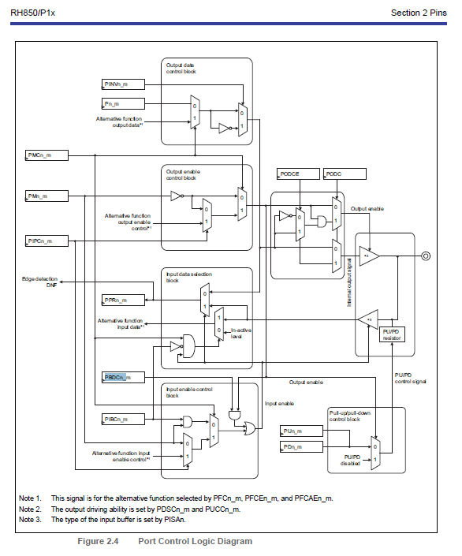
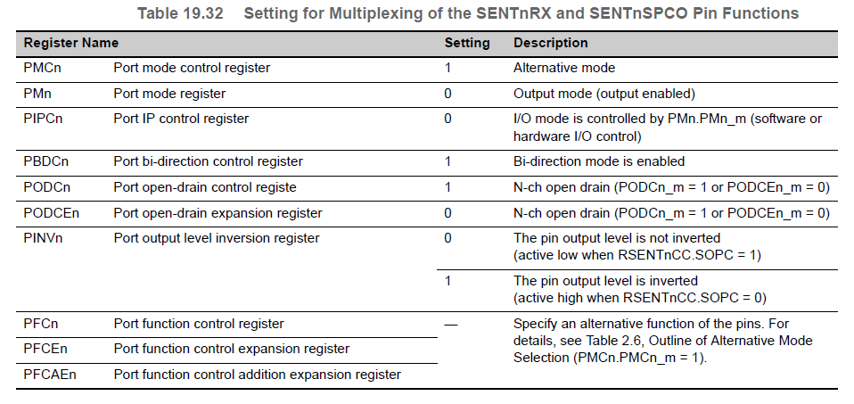

| Index | 144 Pin |
Pin Use | Port Use | Multiplex Options | |||||||||||||||||||||||||||||||||||||||||||
| Pin # | FDD | Hardware Identifier | Signal Identifier | Module | Related Hardware Element | Port | PortPinDirectionChangeable | PortPinDioAltModeChangeable | PortPinModeChangeable | PortPinLevelValue | PortPinInitialMode | PortPinDirection | PortInputBufferControl | PortBiDirectionControl | PortIpControl | PortPullUpOption | PortPullDownOption | PortOpenDrainControl_Expansion | PortOutputLevelInversion | PortDriveStrengthControl | PortUnlimitedCurrentControl | PortInputSelection | PortPinDirectionChangeable | PortPinDioAltModeChangeable | PortPinModeChangeable | PortPinLevelValue | PortPinInitialMode | PortPinDirection | PortInputBufferControl | PortBiDirectionControl | PortIpControl | PortPullUpOption | PortPullDownOption | PortOpenDrainControl_Expansion | PortOutputLevelInversion | PortDriveStrengthControl | PortUnlimitedCurrentControl | PortInputSelection | Pin Configuration |
Interface Type | Range of Values | Resolution | |||||
| 10440 | |||||||||||||||||||||||||||||||||||||||||||||||
| 34 | 39 | A0VCC | A0VCC | ADC0 | A0VCC | A0VCC | #N/A | #N/A | #N/A | #N/A | #N/A | #N/A | #N/A | #N/A | #N/A | #N/A | #N/A | #N/A | #N/A | #N/A | #N/A | #N/A | #N/A | #N/A | #N/A | #N/A | #N/A | #N/A | #N/A | #N/A | #N/A | #N/A | #N/A | #N/A | #N/A | #N/A | #N/A | #N/A | ADC | Pwr/Gnd | 0-5 Volts | n/a | A0VCC | ||||
| 38 | 37 | A0VREFH | A0VREFH | ADC0 | A0VREFH | A0VREFH | #N/A | #N/A | #N/A | #N/A | #N/A | #N/A | #N/A | #N/A | #N/A | #N/A | #N/A | #N/A | #N/A | #N/A | #N/A | #N/A | #N/A | #N/A | #N/A | #N/A | #N/A | #N/A | #N/A | #N/A | #N/A | #N/A | #N/A | #N/A | #N/A | #N/A | #N/A | #N/A | ADC | Pwr/Gnd | 0-5 Volts | n/a | A0VREFH | ||||
| 36 | 38 | A0VSS | A0VSS | ADC0 | A0VSS | A0VSS | #N/A | #N/A | #N/A | #N/A | #N/A | #N/A | #N/A | #N/A | #N/A | #N/A | #N/A | #N/A | #N/A | #N/A | #N/A | #N/A | #N/A | #N/A | #N/A | #N/A | #N/A | #N/A | #N/A | #N/A | #N/A | #N/A | #N/A | #N/A | #N/A | #N/A | #N/A | #N/A | ADC | Pwr/Gnd | 0-5 Volts | n/a | A0VSS | ||||
| 35 | 34 | A1VCC | A1VCC | ADC1 | A1VCC | A1VCC | #N/A | #N/A | #N/A | #N/A | #N/A | #N/A | #N/A | #N/A | #N/A | #N/A | #N/A | #N/A | #N/A | #N/A | #N/A | #N/A | #N/A | #N/A | #N/A | #N/A | #N/A | #N/A | #N/A | #N/A | #N/A | #N/A | #N/A | #N/A | #N/A | #N/A | #N/A | #N/A | ADC | Pwr/Gnd | 0-5 Volts | n/a | A1VCC | ||||
| 39 | 35 | A1VREFH | A1VREFH | ADC1 | A1VREFH | A1VREFH | #N/A | #N/A | #N/A | #N/A | #N/A | #N/A | #N/A | #N/A | #N/A | #N/A | #N/A | #N/A | #N/A | #N/A | #N/A | #N/A | #N/A | #N/A | #N/A | #N/A | #N/A | #N/A | #N/A | #N/A | #N/A | #N/A | #N/A | #N/A | #N/A | #N/A | #N/A | #N/A | ADC | Pwr/Gnd | 0-5 Volts | n/a | A1VREFH | ||||
| 37 | 36 | A1VSS | A1VSS | ADC1 | A1VSS | A1VSS | #N/A | #N/A | #N/A | #N/A | #N/A | #N/A | #N/A | #N/A | #N/A | #N/A | #N/A | #N/A | #N/A | #N/A | #N/A | #N/A | #N/A | #N/A | #N/A | #N/A | #N/A | #N/A | #N/A | #N/A | #N/A | #N/A | #N/A | #N/A | #N/A | #N/A | #N/A | #N/A | ADC | Pwr/Gnd | 0-5 Volts | n/a | A1VSS | ||||
| 22 | 40 | CM010A | ADC Diagnostic | AdcMotCtrlDynRef | ADC0 | ADCD0I0 | ADCD0I0 | #N/A | #N/A | #N/A | #N/A | #N/A | #N/A | #N/A | #N/A | #N/A | #N/A | #N/A | #N/A | #N/A | #N/A | #N/A | #N/A | #N/A | #N/A | #N/A | #N/A | #N/A | #N/A | #N/A | #N/A | #N/A | #N/A | #N/A | #N/A | #N/A | #N/A | #N/A | #N/A | ADC | Input | 0-5 Volts | 12 bits | ADCD0I0 | |||
| 23 | 41 | CM010A | Shunt Current Reference - Inverter 1 | MotCurrSnsrOffs1 | ADC0 | ADCD0I1 | ADCD0I1 | #N/A | #N/A | #N/A | #N/A | #N/A | #N/A | #N/A | #N/A | #N/A | #N/A | #N/A | #N/A | #N/A | #N/A | #N/A | #N/A | #N/A | #N/A | #N/A | #N/A | #N/A | #N/A | #N/A | #N/A | #N/A | #N/A | #N/A | #N/A | #N/A | #N/A | #N/A | #N/A | ADC | Input | 0-5 Volts | 12 bits | ADCD0I1 | |||
| 32 | 50 | CM010A | Shunt Current E | MotCurrAdcVlyE MotCurrAdcPeakE |
ADC0 | ADCD0I10 | ADCD0I10 | #N/A | #N/A | #N/A | #N/A | #N/A | #N/A | #N/A | #N/A | #N/A | #N/A | #N/A | #N/A | #N/A | #N/A | #N/A | #N/A | #N/A | #N/A | #N/A | #N/A | #N/A | #N/A | #N/A | #N/A | #N/A | #N/A | #N/A | #N/A | #N/A | #N/A | #N/A | #N/A | ADC | Input | 0-5 Volts | 12 bits | ADCD0I10 | |||
| 33 | 51 | CM010A | Shunt Current F | MotCurrAdcVlyF MotCurrAdcPeakF |
ADC0 | ADCD0I11 | ADCD0I11 | #N/A | #N/A | #N/A | #N/A | #N/A | #N/A | #N/A | #N/A | #N/A | #N/A | #N/A | #N/A | #N/A | #N/A | #N/A | #N/A | #N/A | #N/A | #N/A | #N/A | #N/A | #N/A | #N/A | #N/A | #N/A | #N/A | #N/A | #N/A | #N/A | #N/A | #N/A | #N/A | ADC | Input | 0-5 Volts | 12 bits | ADCD0I11 | |||
| 24 | 42 | CM010A | Shunt Current A | MotCurrAdcVlyA MotCurrAdcPeakA |
ADC0 | ADCD0I2 | ADCD0I2 | #N/A | #N/A | #N/A | #N/A | #N/A | #N/A | #N/A | #N/A | #N/A | #N/A | #N/A | #N/A | #N/A | #N/A | #N/A | #N/A | #N/A | #N/A | #N/A | #N/A | #N/A | #N/A | #N/A | #N/A | #N/A | #N/A | #N/A | #N/A | #N/A | #N/A | #N/A | #N/A | ADC | Input | 0-5 Volts | 12 bits | ADCD0I2 | |||
| 25 | 43 | CM010A | Shunt Current B | MotCurrAdcVlyB MotCurrAdcPeakB |
ADC0 | ADCD0I3 | ADCD0I3 | #N/A | #N/A | #N/A | #N/A | #N/A | #N/A | #N/A | #N/A | #N/A | #N/A | #N/A | #N/A | #N/A | #N/A | #N/A | #N/A | #N/A | #N/A | #N/A | #N/A | #N/A | #N/A | #N/A | #N/A | #N/A | #N/A | #N/A | #N/A | #N/A | #N/A | #N/A | #N/A | ADC | Input | 0-5 Volts | 12 bits | ADCD0I3 | |||
| 26 | 44 | CM010A | Shunt Current C | MotCurrAdcVlyC MotCurrAdcPeakC |
ADC0 | ADCD0I4 | ADCD0I4 | #N/A | #N/A | #N/A | #N/A | #N/A | #N/A | #N/A | #N/A | #N/A | #N/A | #N/A | #N/A | #N/A | #N/A | #N/A | #N/A | #N/A | #N/A | #N/A | #N/A | #N/A | #N/A | #N/A | #N/A | #N/A | #N/A | #N/A | #N/A | #N/A | #N/A | #N/A | #N/A | ADC | Input | 0-5 Volts | 12 bits | ADCD0I4 | |||
| 27 | 45 | N/A | -- | -- | ADCD0I5 | -- | ADCD0I5 | #N/A | #N/A | #N/A | #N/A | #N/A | #N/A | #N/A | #N/A | #N/A | #N/A | #N/A | #N/A | #N/A | #N/A | #N/A | #N/A | #N/A | #N/A | #N/A | #N/A | #N/A | #N/A | #N/A | #N/A | #N/A | #N/A | #N/A | #N/A | #N/A | #N/A | #N/A | #N/A | ADC | Input | 0-5 Volts | 12 bits | ADCD0I5 | |||
| 28 | 46 | N/A | -- | -- | ADCD0I6 | -- | ADCD0I6 | #N/A | #N/A | #N/A | #N/A | #N/A | #N/A | #N/A | #N/A | #N/A | #N/A | #N/A | #N/A | #N/A | #N/A | #N/A | #N/A | #N/A | #N/A | #N/A | #N/A | #N/A | #N/A | #N/A | #N/A | #N/A | #N/A | #N/A | #N/A | #N/A | #N/A | #N/A | #N/A | ADC | Input | 0-5 Volts | 12 bits | ADCD0I6 | |||
| 29 | 47 | N/A | -- | -- | ADCD0I7 | -- | ADCD0I7 | #N/A | #N/A | #N/A | #N/A | #N/A | #N/A | #N/A | #N/A | #N/A | #N/A | #N/A | #N/A | #N/A | #N/A | #N/A | #N/A | #N/A | #N/A | #N/A | #N/A | #N/A | #N/A | #N/A | #N/A | #N/A | #N/A | #N/A | #N/A | #N/A | #N/A | #N/A | #N/A | ADC | Input | 0-5 Volts | 12 bits | ADCD0I7 | |||
| 30 | 48 | CM010A | Shunt Current Reference - Inverter 2 | MotCurrSnsrOffs2 | ADC0 | ADCD0I8 | ADCD0I8 | #N/A | #N/A | #N/A | #N/A | #N/A | #N/A | #N/A | #N/A | #N/A | #N/A | #N/A | #N/A | #N/A | #N/A | #N/A | #N/A | #N/A | #N/A | #N/A | #N/A | #N/A | #N/A | #N/A | #N/A | #N/A | #N/A | #N/A | #N/A | #N/A | #N/A | #N/A | #N/A | ADC | Input | 0-5 Volts | 12 bits | ADCD0I8 | |||
| 31 | 49 | CM010A | Shunt Current D | MotCurrAdcVlyD MotCurrAdcPeakD |
ADC0 | ADCD0I9 | ADCD0I9 | #N/A | #N/A | #N/A | #N/A | #N/A | #N/A | #N/A | #N/A | #N/A | #N/A | #N/A | #N/A | #N/A | #N/A | #N/A | #N/A | #N/A | #N/A | #N/A | #N/A | #N/A | #N/A | #N/A | #N/A | #N/A | #N/A | #N/A | #N/A | #N/A | #N/A | #N/A | #N/A | ADC | Input | 0-5 Volts | 12 bits | ADCD0I9 | |||
| 10 | 33 | CM010A | -- | -- | ADC1 | -- | ADCD1I0 | #N/A | #N/A | #N/A | #N/A | #N/A | #N/A | #N/A | #N/A | #N/A | #N/A | #N/A | #N/A | #N/A | #N/A | #N/A | #N/A | #N/A | #N/A | #N/A | #N/A | #N/A | #N/A | #N/A | #N/A | #N/A | #N/A | #N/A | #N/A | #N/A | #N/A | #N/A | #N/A | ADC | Input | 0-5 Volts | 12 bits | ADCD1I0 | |||
| 11 | 32 | CM010A | Battery - Filtered | BattVltg | ADC1 | ADCD1I1 | ADCD1I1 | #N/A | #N/A | #N/A | #N/A | #N/A | #N/A | #N/A | #N/A | #N/A | #N/A | #N/A | #N/A | #N/A | #N/A | #N/A | #N/A | #N/A | #N/A | #N/A | #N/A | #N/A | #N/A | #N/A | #N/A | #N/A | #N/A | #N/A | #N/A | #N/A | #N/A | #N/A | #N/A | ADC | Input | 0-5 Volts | 12 bits | ADCD1I1 | |||
| 20 | 23 | N/A | -- | -- | ADCD1I10 | -- | ADCD1I10 | #N/A | #N/A | #N/A | #N/A | #N/A | #N/A | #N/A | #N/A | #N/A | #N/A | #N/A | #N/A | #N/A | #N/A | #N/A | #N/A | #N/A | #N/A | #N/A | #N/A | #N/A | #N/A | #N/A | #N/A | #N/A | #N/A | #N/A | #N/A | #N/A | #N/A | #N/A | #N/A | ADC | Input | 0-5 Volts | 12 bits | ADCD1I10 | |||
| 21 | 22 | CM010A | Battery - Switched 2 | BattVltgSwd2 | ADC1 | ADCD1I11 | ADCD1I11 | #N/A | #N/A | #N/A | #N/A | #N/A | #N/A | #N/A | #N/A | #N/A | #N/A | #N/A | #N/A | #N/A | #N/A | #N/A | #N/A | #N/A | #N/A | #N/A | #N/A | #N/A | #N/A | #N/A | #N/A | #N/A | #N/A | #N/A | #N/A | #N/A | #N/A | #N/A | #N/A | ADC | Input | 0-5 Volts | 12 bits | ADCD1I11 | |||
| 12 | 31 | CM010A | Controller Temperature | EcuT | ADC1 | ADCD1I2 | ADCD1I2 | #N/A | #N/A | #N/A | #N/A | #N/A | #N/A | #N/A | #N/A | #N/A | #N/A | #N/A | #N/A | #N/A | #N/A | #N/A | #N/A | #N/A | #N/A | #N/A | #N/A | #N/A | #N/A | #N/A | #N/A | #N/A | #N/A | #N/A | #N/A | #N/A | #N/A | #N/A | #N/A | ADC | Input | 0-5 Volts | 12 bits | ADCD1I2 | |||
| 13 | 30 | CM010A | VS5P2 supply rail | VltgSplyFbVS5P2 | ADC1 | ADCD1I3 | ADCD1I3 | #N/A | #N/A | #N/A | #N/A | #N/A | #N/A | #N/A | #N/A | #N/A | #N/A | #N/A | #N/A | #N/A | #N/A | #N/A | #N/A | #N/A | #N/A | #N/A | #N/A | #N/A | #N/A | #N/A | #N/A | #N/A | #N/A | #N/A | #N/A | #N/A | #N/A | #N/A | #N/A | ADC | Input | 0-5 Volts | 12 bits | ADCD1I3 | |||
| 14 | 29 | CM010A | MotAg2 Sine | MotAg2Sin | ADC1 | ADCD1I4 | ADCD1I4 | #N/A | #N/A | #N/A | #N/A | #N/A | #N/A | #N/A | #N/A | #N/A | #N/A | #N/A | #N/A | #N/A | #N/A | #N/A | #N/A | #N/A | #N/A | #N/A | #N/A | #N/A | #N/A | #N/A | #N/A | #N/A | #N/A | #N/A | #N/A | #N/A | #N/A | #N/A | #N/A | ADC | Input | 0-5 Volts | 12 bits | ADCD1I4 | |||
| 15 | 28 | CM010A | MotAg2 Cosine | MotAg2Cos | ADC1 | ADCD1I5 | ADCD1I5 | #N/A | #N/A | #N/A | #N/A | #N/A | #N/A | #N/A | #N/A | #N/A | #N/A | #N/A | #N/A | #N/A | #N/A | #N/A | #N/A | #N/A | #N/A | #N/A | #N/A | #N/A | #N/A | #N/A | #N/A | #N/A | #N/A | #N/A | #N/A | #N/A | #N/A | #N/A | #N/A | ADC | Input | 0-5 Volts | 12 bits | ADCD1I5 | |||
| 16 | 27 | N/A | -- | -- | ADCD1I6 | -- | ADCD1I6 | #N/A | #N/A | #N/A | #N/A | #N/A | #N/A | #N/A | #N/A | #N/A | #N/A | #N/A | #N/A | #N/A | #N/A | #N/A | #N/A | #N/A | #N/A | #N/A | #N/A | #N/A | #N/A | #N/A | #N/A | #N/A | #N/A | #N/A | #N/A | #N/A | #N/A | #N/A | #N/A | ADC | Input | 0-5 Volts | 12 bits | ADCD1I6 | |||
| 17 | 26 | N/A | -- | -- | ADCD1I7 | -- | ADCD1I7 | #N/A | #N/A | #N/A | #N/A | #N/A | #N/A | #N/A | #N/A | #N/A | #N/A | #N/A | #N/A | #N/A | #N/A | #N/A | #N/A | #N/A | #N/A | #N/A | #N/A | #N/A | #N/A | #N/A | #N/A | #N/A | #N/A | #N/A | #N/A | #N/A | #N/A | #N/A | #N/A | ADC | Input | 0-5 Volts | 12 bits | ADCD1I7 | |||
| 18 | 25 | N/A | -- | -- | ADCD1I8 | -- | ADCD1I8 | #N/A | #N/A | #N/A | #N/A | #N/A | #N/A | #N/A | #N/A | #N/A | #N/A | #N/A | #N/A | #N/A | #N/A | #N/A | #N/A | #N/A | #N/A | #N/A | #N/A | #N/A | #N/A | #N/A | #N/A | #N/A | #N/A | #N/A | #N/A | #N/A | #N/A | #N/A | #N/A | ADC | Input | 0-5 Volts | 12 bits | ADCD1I8 | |||
| 19 | 24 | CM010A | Battery - Switched 1 | BattVltgSwd1 | ADC1 | ADCD1I9 | ADCD1I9 | #N/A | #N/A | #N/A | #N/A | #N/A | #N/A | #N/A | #N/A | #N/A | #N/A | #N/A | #N/A | #N/A | #N/A | #N/A | #N/A | #N/A | #N/A | #N/A | #N/A | #N/A | #N/A | #N/A | #N/A | #N/A | #N/A | #N/A | #N/A | #N/A | #N/A | #N/A | #N/A | ADC | Input | 0-5 Volts | 12 bits | ADCD1I9 | |||
| 125 | 82 | CVMOUT | -- | GenConfig | CVMOUT | CVMOUT | #N/A | #N/A | #N/A | #N/A | #N/A | #N/A | #N/A | #N/A | #N/A | #N/A | #N/A | #N/A | #N/A | #N/A | #N/A | #N/A | #N/A | #N/A | #N/A | #N/A | #N/A | #N/A | #N/A | #N/A | #N/A | #N/A | #N/A | #N/A | #N/A | #N/A | #N/A | #N/A | Config/Test | CVMOUT | |||||||
| 76 | 144 | Not Error | NotErr | GenConfig | ERROROUT | ERROROUT | #N/A | #N/A | #N/A | #N/A | #N/A | #N/A | #N/A | #N/A | #N/A | #N/A | #N/A | #N/A | #N/A | #N/A | #N/A | #N/A | #N/A | #N/A | #N/A | #N/A | #N/A | #N/A | #N/A | #N/A | #N/A | #N/A | #N/A | #N/A | #N/A | #N/A | #N/A | #N/A | ERROROUT | ||||||||
| 83 | 11 | Power/Gnd | -- | GenConfig | EVCC | EVCC | #N/A | #N/A | #N/A | #N/A | #N/A | #N/A | #N/A | #N/A | #N/A | #N/A | #N/A | #N/A | #N/A | #N/A | #N/A | #N/A | #N/A | #N/A | #N/A | #N/A | #N/A | #N/A | #N/A | #N/A | #N/A | #N/A | #N/A | #N/A | #N/A | #N/A | #N/A | #N/A | Pwr/Gnd | EVCC | |||||||
| 87 | 60 | Power/Gnd | -- | GenConfig | EVCC | EVCC | #N/A | #N/A | #N/A | #N/A | #N/A | #N/A | #N/A | #N/A | #N/A | #N/A | #N/A | #N/A | #N/A | #N/A | #N/A | #N/A | #N/A | #N/A | #N/A | #N/A | #N/A | #N/A | #N/A | #N/A | #N/A | #N/A | #N/A | #N/A | #N/A | #N/A | #N/A | #N/A | Pwr/Gnd | EVCC | |||||||
| 90 | 84 | Power/Gnd | -- | GenConfig | EVCC | EVCC | #N/A | #N/A | #N/A | #N/A | #N/A | #N/A | #N/A | #N/A | #N/A | #N/A | #N/A | #N/A | #N/A | #N/A | #N/A | #N/A | #N/A | #N/A | #N/A | #N/A | #N/A | #N/A | #N/A | #N/A | #N/A | #N/A | #N/A | #N/A | #N/A | #N/A | #N/A | #N/A | Pwr/Gnd | EVCC | |||||||
| 94 | 107 | Power/Gnd | -- | GenConfig | EVCC | EVCC | #N/A | #N/A | #N/A | #N/A | #N/A | #N/A | #N/A | #N/A | #N/A | #N/A | #N/A | #N/A | #N/A | #N/A | #N/A | #N/A | #N/A | #N/A | #N/A | #N/A | #N/A | #N/A | #N/A | #N/A | #N/A | #N/A | #N/A | #N/A | #N/A | #N/A | #N/A | #N/A | Pwr/Gnd | EVCC | |||||||
| 99 | 134 | Power/Gnd | -- | GenConfig | EVCC | EVCC | #N/A | #N/A | #N/A | #N/A | #N/A | #N/A | #N/A | #N/A | #N/A | #N/A | #N/A | #N/A | #N/A | #N/A | #N/A | #N/A | #N/A | #N/A | #N/A | #N/A | #N/A | #N/A | #N/A | #N/A | #N/A | #N/A | #N/A | #N/A | #N/A | #N/A | #N/A | #N/A | Pwr/Gnd | EVCC | |||||||
| 82 | 10 | Power/Gnd | -- | GenConfig | EVSS | EVSS | #N/A | #N/A | #N/A | #N/A | #N/A | #N/A | #N/A | #N/A | #N/A | #N/A | #N/A | #N/A | #N/A | #N/A | #N/A | #N/A | #N/A | #N/A | #N/A | #N/A | #N/A | #N/A | #N/A | #N/A | #N/A | #N/A | #N/A | #N/A | #N/A | #N/A | #N/A | #N/A | Pwr/Gnd | EVSS | |||||||
| 88 | 61 | Power/Gnd | -- | GenConfig | EVSS | EVSS | #N/A | #N/A | #N/A | #N/A | #N/A | #N/A | #N/A | #N/A | #N/A | #N/A | #N/A | #N/A | #N/A | #N/A | #N/A | #N/A | #N/A | #N/A | #N/A | #N/A | #N/A | #N/A | #N/A | #N/A | #N/A | #N/A | #N/A | #N/A | #N/A | #N/A | #N/A | #N/A | Pwr/Gnd | EVSS | |||||||
| 89 | 83 | Power/Gnd | -- | GenConfig | EVSS | EVSS | #N/A | #N/A | #N/A | #N/A | #N/A | #N/A | #N/A | #N/A | #N/A | #N/A | #N/A | #N/A | #N/A | #N/A | #N/A | #N/A | #N/A | #N/A | #N/A | #N/A | #N/A | #N/A | #N/A | #N/A | #N/A | #N/A | #N/A | #N/A | #N/A | #N/A | #N/A | #N/A | Pwr/Gnd | EVSS | |||||||
| 95 | 108 | Power/Gnd | -- | GenConfig | EVSS | EVSS | #N/A | #N/A | #N/A | #N/A | #N/A | #N/A | #N/A | #N/A | #N/A | #N/A | #N/A | #N/A | #N/A | #N/A | #N/A | #N/A | #N/A | #N/A | #N/A | #N/A | #N/A | #N/A | #N/A | #N/A | #N/A | #N/A | #N/A | #N/A | #N/A | #N/A | #N/A | #N/A | Pwr/Gnd | EVSS | |||||||
| 98 | 133 | Power/Gnd | -- | GenConfig | EVSS | EVSS | #N/A | #N/A | #N/A | #N/A | #N/A | #N/A | #N/A | #N/A | #N/A | #N/A | #N/A | #N/A | #N/A | #N/A | #N/A | #N/A | #N/A | #N/A | #N/A | #N/A | #N/A | #N/A | #N/A | #N/A | #N/A | #N/A | #N/A | #N/A | #N/A | #N/A | #N/A | #N/A | Pwr/Gnd | EVSS | |||||||
| 122 | 81 | FLMD0 | -- | GenConfig | FLMD0 | FLMD0 | #N/A | #N/A | #N/A | #N/A | #N/A | #N/A | #N/A | #N/A | #N/A | #N/A | #N/A | #N/A | #N/A | #N/A | #N/A | #N/A | #N/A | #N/A | #N/A | #N/A | #N/A | #N/A | #N/A | #N/A | #N/A | #N/A | #N/A | #N/A | #N/A | #N/A | #N/A | #N/A | Config/Test | FLMD0 | |||||||
| 60 | 70 | Phs B Feedback | PhaFbB | TAUJ0 | TAUJ0I1 | P0_0 | FALSE | FALSE | FALSE | PORT_PIN_LEVEL_LOW | TAUJ0I1_ALT1_IN | PORT_PIN_IN | FALSE | FALSE | FALSE | FALSE | FALSE | OpenDrain_N_Channel | FALSE | SLOW | SLOW | TYPE_1_SUPP_PISA | TRUE, FALSE | TRUE, FALSE | TRUE, FALSE | PORT_PIN_LEVEL_LOW, PORT_PIN_LEVEL_HIGH | TAUJ0I1_ALT1_IN, TAUJ0O1_ALT1_OUT, SENT3SPCO_ALT2_OUT, TAUD1ODI14_ALT3_IN, TAUD1O14_ALT3_OUT, ADCD0CNV2_ALT4_OUT, PSI50DOUT_ALT5_OUT, RLIN30TX_ALT6_OUT, DIO | PORT_PIN_OUT, PORT_PIN_IN | TRUE, FALSE | TRUE, FALSE | TRUE, FALSE | TRUE, FALSE | TRUE, FALSE | OpenDrain_PushPull, OpenDrain_N_Channel, OpenDrain_P_Channel | TRUE, FALSE | SLOW, FAST, MIDDLE_0, MIDDLE_1 | SLOW, FAST, MIDDLE | TYPE_1_SUPP_PISA, TYPE_2_SUPP_PISA | ADCD0CNV2, P0_0, PSI50DOUT, RLIN30TX, SENT3SPCO, TAUD1O14, TAUD1ODI14, TAUJ0I1, TAUJ0O1 | ||||||||
| 80 | 71 | Handwheel Angle Sensor 0 | HwAg0 | SENT4 | DIO | P0_1 | FALSE | FALSE | TRUE | PORT_PIN_LEVEL_HIGH | DIO | PORT_PIN_IN | FALSE | TRUE | FALSE | FALSE | FALSE | OpenDrain_N_Channel | FALSE | SLOW | SLOW | -- | TRUE, FALSE | Di | TRUE, FALSE | PORT_PIN_LEVEL_LOW, PORT_PIN_LEVEL_HIGH | TAUJ0I2_ALT1_IN, TAUJ0O2_ALT1_OUT, SENT4RX_ALT2_IN, SENT4SPCO_ALT2_OUT, TAUD1ODI15_ALT3_IN, TAUD1O15_ALT3_OUT, ADCD0CNV3_ALT4_OUT, INTP4_ALT6_IN, RLIN31RX_ALT6_IN, DIO | PORT_PIN_OUT, PORT_PIN_IN | TRUE, FALSE | TRUE, FALSE | TRUE, FALSE | TRUE, FALSE | TRUE, FALSE | OpenDrain_PushPull, OpenDrain_N_Channel, OpenDrain_P_Channel | TRUE, FALSE | SLOW, FAST, MIDDLE_0, MIDDLE_1 | SLOW, FAST, MIDDLE | 0 | ADCD0CNV3, INTP4, P0_1, RLIN31RX, SENT4RX, SENT4SPCO, TAUD1O15, TAUD1ODI15, TAUJ0I2, TAUJ0O2 | ||||||||
| 124 | 85 | -- | -- | DIO | P0_10 | P0_10 | FALSE | FALSE | FALSE | PORT_PIN_LEVEL_LOW | DIO | PORT_PIN_IN | FALSE | FALSE | FALSE | FALSE | FALSE | OpenDrain_N_Channel | FALSE | SLOW | SLOW | -- | TRUE, FALSE | TRUE, FALSE | TRUE, FALSE | PORT_PIN_LEVEL_LOW, PORT_PIN_LEVEL_HIGH | ADCD1CNV0_ALT2_OUT, DIO | PORT_PIN_OUT, PORT_PIN_IN | TRUE, FALSE | TRUE, FALSE | TRUE, FALSE | TRUE, FALSE | TRUE, FALSE | OpenDrain_PushPull, OpenDrain_N_Channel, OpenDrain_P_Channel | TRUE, FALSE | SLOW, FAST, MIDDLE_0, MIDDLE_1 | SLOW, FAST, MIDDLE | 0 | Config/Test | ADCD1CNV0, EVTO, P0_10, RESETOUT | |||||||
| 137 | 86 | -- | -- | DIO | P0_11 | P0_11 | FALSE | FALSE | FALSE | PORT_PIN_LEVEL_LOW | DIO | PORT_PIN_IN | FALSE | FALSE | FALSE | FALSE | FALSE | OpenDrain_N_Channel | FALSE | SLOW | SLOW | -- | TRUE, FALSE | TRUE, FALSE | TRUE, FALSE | PORT_PIN_LEVEL_LOW, PORT_PIN_LEVEL_HIGH | ADCD1CNV2_ALT2_OUT, DIO | PORT_PIN_OUT, PORT_PIN_IN | TRUE, FALSE | TRUE, FALSE | TRUE, FALSE | TRUE, FALSE | TRUE, FALSE | OpenDrain_PushPull, OpenDrain_N_Channel, OpenDrain_P_Channel | TRUE, FALSE | SLOW, FAST, MIDDLE_0, MIDDLE_1 | SLOW, FAST, MIDDLE | 0 | Input | 0-3 | N/A | ADCD1CNV2, P0_11 | |||||
| 138 | 87 | -- | -- | DIO | P0_12 | P0_12 | FALSE | FALSE | FALSE | PORT_PIN_LEVEL_LOW | DIO | PORT_PIN_IN | FALSE | FALSE | FALSE | FALSE | FALSE | OpenDrain_N_Channel | FALSE | SLOW | SLOW | -- | TRUE, FALSE | TRUE, FALSE | TRUE, FALSE | PORT_PIN_LEVEL_LOW, PORT_PIN_LEVEL_HIGH | ADCD1CNV3_ALT2_OUT, DIO | PORT_PIN_OUT, PORT_PIN_IN | TRUE, FALSE | TRUE, FALSE | TRUE, FALSE | TRUE, FALSE | TRUE, FALSE | OpenDrain_PushPull, OpenDrain_N_Channel, OpenDrain_P_Channel | TRUE, FALSE | SLOW, FAST, MIDDLE_0, MIDDLE_1 | SLOW, FAST, MIDDLE | 0 | Input | 0-3 | N/A | ADCD1CNV3, P0_12 | |||||
| 73 | 88 | Power Turn Off Control | PwrTurnOffCtrl | DIO | P0_13 | P0_13 | FALSE | FALSE | FALSE | PORT_PIN_LEVEL_LOW | DIO | PORT_PIN_OUT | FALSE | FALSE | FALSE | FALSE | FALSE | OpenDrain_PushPull | FALSE | SLOW | SLOW | TYPE_1_SUPP_PISA | TRUE, FALSE | TRUE, FALSE | TRUE, FALSE | PORT_PIN_LEVEL_LOW, PORT_PIN_LEVEL_HIGH | OSTM0ODI_ALT1_IN, OSTM0O_ALT1_OUT, TAUD1ODI15_ALT2_IN, TAUD1O15_ALT2_OUT, TAUD2I7_ALT3_IN, INTP9_ALT4_IN, TAUD2O7_ALT4_OUT, DIO | PORT_PIN_OUT, PORT_PIN_IN | TRUE, FALSE | TRUE, FALSE | TRUE, FALSE | TRUE, FALSE | TRUE, FALSE | OpenDrain_PushPull, OpenDrain_N_Channel, OpenDrain_P_Channel | TRUE, FALSE | SLOW, FAST, MIDDLE_0, MIDDLE_1 | SLOW, FAST, MIDDLE | TYPE_1_SUPP_PISA, TYPE_2_SUPP_PISA | EVTI, INTP9, OSTM0O, OSTM0ODI, P0_13, TAUD1O15, TAUD1ODI15, TAUD2I7, TAUD2O7 | ||||||||
| 139 | 89 | -- | -- | DIO | P0_14 | P0_14 | FALSE | FALSE | FALSE | PORT_PIN_LEVEL_LOW | DIO | PORT_PIN_IN | FALSE | FALSE | FALSE | FALSE | FALSE | OpenDrain_N_Channel | FALSE | SLOW | SLOW | -- | TRUE, FALSE | TRUE, FALSE | TRUE, FALSE | PORT_PIN_LEVEL_LOW, PORT_PIN_LEVEL_HIGH | ADCD1CNV4_ALT2_OUT, DIO | PORT_PIN_OUT, PORT_PIN_IN | TRUE, FALSE | TRUE, FALSE | TRUE, FALSE | TRUE, FALSE | TRUE, FALSE | OpenDrain_PushPull, OpenDrain_N_Channel, OpenDrain_P_Channel | TRUE, FALSE | SLOW, FAST, MIDDLE_0, MIDDLE_1 | SLOW, FAST, MIDDLE | 0 | Input | 0-3 | N/A | ADCD1CNV4, P0_14 | |||||
| 127 | 73 | Handwheel Torque Sensor 3 | HwTq3 | SENT5 | DIO | P0_2 | FALSE | FALSE | TRUE | PORT_PIN_LEVEL_HIGH | DIO | PORT_PIN_IN | FALSE | TRUE | FALSE | FALSE | FALSE | OpenDrain_N_Channel | FALSE | SLOW | SLOW | -- | TRUE, FALSE | TRUE, FALSE | TRUE, FALSE | PORT_PIN_LEVEL_LOW, PORT_PIN_LEVEL_HIGH | SCI30RX_ALT1_IN, INTP0_ALT1_IN, TAPA1ESO_ALT2_IN, INTP8_ALT2_IN, TAUD2I0_ALT3_IN, ADCD0CNV0_ALT3_OUT, TAUD2O0_ALT4_OUT, SENT5RX_ALT6_IN, SENT5SPCO_ALT6_OUT, DIO | PORT_PIN_OUT, PORT_PIN_IN | TRUE, FALSE | TRUE, FALSE | TRUE, FALSE | TRUE, FALSE | TRUE, FALSE | OpenDrain_PushPull, OpenDrain_N_Channel, OpenDrain_P_Channel | TRUE, FALSE | SLOW, FAST, MIDDLE_0, MIDDLE_1 | SLOW, FAST, MIDDLE | 0 | ADCD0CNV0, INTP0, INTP8, P0_2, SCI30RX, SENT5RX, SENT5SPCO, TAPA1ESO, TAUD2I0, TAUD2O0 | ||||||||
| 133 | 74 | -- | -- | DIO | P0_3 | P0_3 | FALSE | FALSE | FALSE | PORT_PIN_LEVEL_LOW | DIO | PORT_PIN_IN | FALSE | FALSE | FALSE | FALSE | FALSE | OpenDrain_N_Channel | FALSE | SLOW | SLOW | TYPE_1_SUPP_PISA | TRUE, FALSE | TRUE, FALSE | TRUE, FALSE | PORT_PIN_LEVEL_LOW, PORT_PIN_LEVEL_HIGH | SCI30TX_ALT1_OUT, TAUD1ODI8_ALT2_IN, TAUD1O8_ALT2_OUT, TAUD2I1_ALT3_IN, ADCD0CNV1_ALT3_OUT, TAUD2O1_ALT4_OUT, SENT5SPCO_ALT6_OUT, DIO | PORT_PIN_OUT, PORT_PIN_IN | TRUE, FALSE | TRUE, FALSE | TRUE, FALSE | TRUE, FALSE | TRUE, FALSE | OpenDrain_PushPull, OpenDrain_N_Channel, OpenDrain_P_Channel | TRUE, FALSE | SLOW, FAST, MIDDLE_0, MIDDLE_1 | SLOW, FAST, MIDDLE | TYPE_1_SUPP_PISA, TYPE_2_SUPP_PISA | Input | 0-3 | N/A | ADCD0CNV1, AUDATA1, P0_3, SCI30TX, SENT5SPCO, TAUD1O8, TAUD1ODI8, TAUD2I1, TAUD2O1 | |||||
| 134 | 75 | -- | -- | DIO | P0_4 | P0_4 | FALSE | FALSE | FALSE | PORT_PIN_LEVEL_LOW | DIO | PORT_PIN_IN | FALSE | FALSE | FALSE | FALSE | FALSE | OpenDrain_N_Channel | FALSE | SLOW | SLOW | TYPE_1_SUPP_PISA | TRUE, FALSE | TRUE, FALSE | TRUE, FALSE | PORT_PIN_LEVEL_LOW, PORT_PIN_LEVEL_HIGH | SCI30SCI_ALT1_IN, SCI30SCO_ALT1_OUT, TAUD1ODI9_ALT2_IN, TAUD1O9_ALT2_OUT, TAUD2I2_ALT3_IN, ADCD0CNV2_ALT3_OUT, TAUD2O2_ALT4_OUT, SENT4SPCO_ALT6_OUT, DIO | PORT_PIN_OUT, PORT_PIN_IN | TRUE, FALSE | TRUE, FALSE | TRUE, FALSE | TRUE, FALSE | TRUE, FALSE | OpenDrain_PushPull, OpenDrain_N_Channel, OpenDrain_P_Channel | TRUE, FALSE | SLOW, FAST, MIDDLE_0, MIDDLE_1 | SLOW, FAST, MIDDLE | TYPE_1_SUPP_PISA, TYPE_2_SUPP_PISA | Input | 0-3 | N/A | ADCD0CNV2, AUDATA2, P0_4, SCI30SCI, SCI30SCO, SENT4SPCO, TAUD1O9, TAUD1ODI9, TAUD2I2, TAUD2O2 | |||||
| 62 | 76 | Phs D Feedback | PhaFbD | TAUJ1 | TAUJ1I0 | P0_5 | FALSE | FALSE | FALSE | PORT_PIN_LEVEL_LOW | TAUJ1I0_ALT1_IN | PORT_PIN_IN | FALSE | FALSE | FALSE | FALSE | FALSE | OpenDrain_N_Channel | FALSE | SLOW | SLOW | TYPE_1_SUPP_PISA | TRUE, FALSE | TRUE, FALSE | TRUE, FALSE | PORT_PIN_LEVEL_LOW, PORT_PIN_LEVEL_HIGH | TAUJ1I0_ALT1_IN, TAUJ1O0_ALT1_OUT, TAUD1ODI10_ALT2_IN, TAUD1O10_ALT2_OUT, TAUD2I3_ALT3_IN, ADCD0CNV3_ALT3_OUT, TAUD2O3_ALT4_OUT, SENT3SPCO_ALT6_OUT, DIO | PORT_PIN_OUT, PORT_PIN_IN | TRUE, FALSE | TRUE, FALSE | TRUE, FALSE | TRUE, FALSE | TRUE, FALSE | OpenDrain_PushPull, OpenDrain_N_Channel, OpenDrain_P_Channel | TRUE, FALSE | SLOW, FAST, MIDDLE_0, MIDDLE_1 | SLOW, FAST, MIDDLE | TYPE_1_SUPP_PISA, TYPE_2_SUPP_PISA | ADCD0CNV3, AUDATA3, P0_5, SENT3SPCO, TAUD1O10, TAUD1ODI10, TAUD2I3, TAUD2O3, TAUJ1I0, TAUJ1O0 | ||||||||
| 63 | 77 | Phs E Feedback | PhaFbE | TAUJ1 | TAUJ1I1 | P0_6 | FALSE | FALSE | FALSE | PORT_PIN_LEVEL_LOW | TAUJ1I1_ALT1_IN | PORT_PIN_IN | FALSE | FALSE | FALSE | FALSE | FALSE | OpenDrain_N_Channel | FALSE | SLOW | SLOW | TYPE_1_SUPP_PISA | TRUE, FALSE | TRUE, FALSE | TRUE, FALSE | PORT_PIN_LEVEL_LOW, PORT_PIN_LEVEL_HIGH | TAUJ1I1_ALT1_IN, TAUJ1O1_ALT1_OUT, TAUD1ODI11_ALT2_IN, TAUD1O11_ALT2_OUT, TAUD2I4_ALT3_IN, TAUD2O4_ALT4_OUT, SENT2SPCO_ALT6_OUT, DIO | PORT_PIN_OUT, PORT_PIN_IN | TRUE, FALSE | TRUE, FALSE | TRUE, FALSE | TRUE, FALSE | TRUE, FALSE | OpenDrain_PushPull, OpenDrain_N_Channel, OpenDrain_P_Channel | TRUE, FALSE | SLOW, FAST, MIDDLE_0, MIDDLE_1 | SLOW, FAST, MIDDLE | TYPE_1_SUPP_PISA, TYPE_2_SUPP_PISA | AUDCK, P0_6, SENT2SPCO, TAUD1O11, TAUD1ODI11, TAUD2I4, TAUD2O4, TAUJ1I1, TAUJ1O1 | ||||||||
| 64 | 78 | Phs F Feedback | PhaFbF | TAUJ1 | TAUJ1I2 | P0_7 | FALSE | FALSE | FALSE | PORT_PIN_LEVEL_LOW | TAUJ1I2_ALT1_IN | PORT_PIN_IN | FALSE | FALSE | FALSE | FALSE | FALSE | OpenDrain_N_Channel | FALSE | SLOW | SLOW | TYPE_1_SUPP_PISA | TRUE, FALSE | TRUE, FALSE | TRUE, FALSE | PORT_PIN_LEVEL_LOW, PORT_PIN_LEVEL_HIGH | TAUJ1I2_ALT1_IN, TAUJ1O2_ALT1_OUT, TAUD1ODI12_ALT2_IN, TAUD1O12_ALT2_OUT, TAUD2I5_ALT3_IN, ADCATRG0_ALT4_IN, TAUD2O5_ALT4_OUT, SENT1SPCO_ALT6_IN, DIO | PORT_PIN_OUT, PORT_PIN_IN | TRUE, FALSE | TRUE, FALSE | TRUE, FALSE | TRUE, FALSE | TRUE, FALSE | OpenDrain_PushPull, OpenDrain_N_Channel, OpenDrain_P_Channel | TRUE, FALSE | SLOW, FAST, MIDDLE_0, MIDDLE_1 | SLOW, FAST, MIDDLE | TYPE_1_SUPP_PISA, TYPE_2_SUPP_PISA | ADCDTRG0, AUDSYNC, P0_7, SENT1SPCO, TAUD1O12, TAUD1ODI12, TAUD2I5, TAUD2O5, TAUJ1I2, TAUJ1O2 | ||||||||
| 135 | 79 | -- | -- | DIO | P0_8 | P0_8 | FALSE | FALSE | FALSE | PORT_PIN_LEVEL_LOW | DIO | PORT_PIN_IN | FALSE | FALSE | FALSE | FALSE | FALSE | OpenDrain_N_Channel | FALSE | SLOW | SLOW | TYPE_1_SUPP_PISA | TRUE, FALSE | TRUE, FALSE | TRUE, FALSE | PORT_PIN_LEVEL_LOW, PORT_PIN_LEVEL_HIGH | TAUJ1I3_ALT1_IN, TAUJ1O3_ALT1_OUT, TAUD1ODI13_ALT2_IN, TAUD1O13_ALT2_OUT, TAUD2I6_ALT3_IN, ADCATRG1_ALT4_IN, TAUD2O6_ALT4_OUT, SENT0SPCO_ALT6_OUT, DIO | PORT_PIN_OUT, PORT_PIN_IN | TRUE, FALSE | TRUE, FALSE | TRUE, FALSE | TRUE, FALSE | TRUE, FALSE | OpenDrain_PushPull, OpenDrain_N_Channel, OpenDrain_P_Channel | TRUE, FALSE | SLOW, FAST, MIDDLE_0, MIDDLE_1 | SLOW, FAST, MIDDLE | TYPE_1_SUPP_PISA, TYPE_2_SUPP_PISA | Input | 0-3 | N/A | ADCDTRG1, AUDRST, P0_8, SENT0SPCO, TAUD1O13, TAUD1ODI13, TAUD2I6, TAUD2O6, TAUJ1I3, TAUJ1O3 | |||||
| 136 | 80 | -- | -- | DIO | P0_9 | P0_9 | FALSE | FALSE | FALSE | PORT_PIN_LEVEL_LOW | DIO | PORT_PIN_IN | FALSE | FALSE | FALSE | FALSE | FALSE | OpenDrain_N_Channel | FALSE | SLOW | SLOW | TYPE_1_SUPP_PISA | TRUE, FALSE | TRUE, FALSE | TRUE, FALSE | PORT_PIN_LEVEL_LOW, PORT_PIN_LEVEL_HIGH | ADCD1CNV1_ALT1_OUT, TAUD1ODI14_ALT2_IN, TAUD1O14_ALT2_OUT, TAUD2I7_ALT3_IN, ADCA0CNV4_ALT3_OUT, TAUD2O7_ALT4_OUT, DIO | PORT_PIN_OUT, PORT_PIN_IN | TRUE, FALSE | TRUE, FALSE | TRUE, FALSE | TRUE, FALSE | TRUE, FALSE | OpenDrain_PushPull, OpenDrain_N_Channel, OpenDrain_P_Channel | TRUE, FALSE | SLOW, FAST, MIDDLE_0, MIDDLE_1 | SLOW, FAST, MIDDLE | TYPE_1_SUPP_PISA, TYPE_2_SUPP_PISA | Input | 0-3 | N/A | ADCD0CNV4, ADCD1CNV1, AUDATA0, P0_9, TAUD1O14, TAUD1ODI14, TAUD2I7, TAUD2O7 | |||||
| 140 | 102 | -- | -- | DIO | P1_0 | P1_0 | FALSE | FALSE | FALSE | PORT_PIN_LEVEL_LOW | DIO | PORT_PIN_IN | FALSE | FALSE | -- | FALSE | FALSE | OpenDrain_N_Channel | FALSE | SLOW | SLOW | -- | TRUE, FALSE | TRUE, FALSE | TRUE, FALSE | PORT_PIN_LEVEL_LOW, PORT_PIN_LEVEL_HIGH | RLIN30TX_ALT4_OUT, CSIH3RYO_ALT6_OUT, DIO | PORT_PIN_OUT, PORT_PIN_IN | TRUE, FALSE | TRUE, FALSE | 0 | TRUE, FALSE | TRUE, FALSE | OpenDrain_PushPull, OpenDrain_N_Channel, OpenDrain_P_Channel | TRUE, FALSE | SLOW, FAST, MIDDLE_0, MIDDLE_1 | SLOW, FAST, MIDDLE | 0 | Input | 0-3 | N/A | CSIH3RYO, P1_0, RLIN30TX | |||||
| 50 | 103 | GateDrive1 - SPI Chip Select | GateDrv1Cs | CSIH2 | CSIH2CSS0 | P1_1 | FALSE | FALSE | FALSE | PORT_PIN_LEVEL_LOW | CSIH2CSS0_ALT4_OUT | PORT_PIN_OUT | FALSE | FALSE | -- | FALSE | FALSE | OpenDrain_PushPull | FALSE | SLOW | SLOW | TYPE_1_SUPP_PISA | TRUE, FALSE | TRUE, FALSE | TRUE, FALSE | PORT_PIN_LEVEL_LOW, PORT_PIN_LEVEL_HIGH | TAUJ2I0_ALT1_IN, TAUJ2O0_ALT1_OUT, TAUJ1I0_ALT2_IN, TAUJ1O0_ALT2_OUT, TAUD2I12_ALT3_IN, TAUD2O12_ALT3_OUT, RLIN30RX_ALT4_IN, INTP3_ALT4_IN, CSIH2CSS0_ALT4_OUT, TAUD0I6_ALT5_IN, CSIH3RYI_ALT6_IN, DIO | PORT_PIN_OUT, PORT_PIN_IN | TRUE, FALSE | TRUE, FALSE | 0 | TRUE, FALSE | TRUE, FALSE | OpenDrain_PushPull, OpenDrain_N_Channel, OpenDrain_P_Channel | TRUE, FALSE | SLOW, FAST, MIDDLE_0, MIDDLE_1 | SLOW, FAST, MIDDLE | TYPE_1_SUPP_PISA, TYPE_2_SUPP_PISA | CSIH2CSS0, CSIH3RYI, INTP3, P1_1, RLIN30RX, TAUD0I6, TAUD2I12, TAUD2O12, TAUJ1I0, TAUJ1O0, TAUJ2I0, TAUJ2O0 | ||||||||
| 48 | 104 | GateDrive1 - SPI MISO | GateDrv1Miso | CSIH2 | CSIH2SI | P1_2 | FALSE | FALSE | FALSE | PORT_PIN_LEVEL_LOW | CSIH2SI_ALT4_IN | PORT_PIN_IN | FALSE | FALSE | -- | FALSE | FALSE | OpenDrain_N_Channel | FALSE | SLOW | SLOW | TYPE_1_SUPP_PISA | TRUE, FALSE | TRUE, FALSE | TRUE, FALSE | PORT_PIN_LEVEL_LOW, PORT_PIN_LEVEL_HIGH | TAUJ2I1_ALT1_IN, TAUJ2O1_ALT1_OUT, TAUJ1I1_ALT2_IN, TAUJ1O1_ALT2_OUT, TAUD2I13_ALT3_IN, TAUD2O13_ALT3_OUT, CSIH2SI_ALT4_IN, TAUD0I8_ALT5_IN, CSIH3SI_ALT6_IN, DIO | PORT_PIN_OUT, PORT_PIN_IN | TRUE, FALSE | TRUE, FALSE | 0 | TRUE, FALSE | TRUE, FALSE | OpenDrain_PushPull, OpenDrain_N_Channel, OpenDrain_P_Channel | TRUE, FALSE | SLOW, FAST, MIDDLE_0, MIDDLE_1 | SLOW, FAST, MIDDLE | TYPE_1_SUPP_PISA, TYPE_2_SUPP_PISA | CSIH2SI, CSIH3SI, P1_2, TAUD0I8, TAUD2I13, TAUD2O13, TAUJ1I1, TAUJ1O1, TAUJ2I1, TAUJ2O1 | ||||||||
| 49 | 105 | GateDrive1 - SPI MOSI | GateDrv1Mosi | CSIH2 | CSIH2SO | P1_3 | FALSE | FALSE | FALSE | PORT_PIN_LEVEL_LOW | CSIH2SO_ALT4_OUT | PORT_PIN_OUT | FALSE | FALSE | TRUE | FALSE | FALSE | OpenDrain_PushPull | FALSE | SLOW | SLOW | TYPE_1_SUPP_PISA | TRUE, FALSE | TRUE, FALSE | TRUE, FALSE | PORT_PIN_LEVEL_LOW, PORT_PIN_LEVEL_HIGH | TAUJ2I2_ALT1_IN, TAUJ2O2_ALT1_OUT, TAUJ1I2_ALT2_IN, TAUJ1O2_ALT2_OUT, TAUD2I14_ALT3_IN, TAUD2O14_ALT3_OUT, CSIH2DCS_ALT4_IN, CSIH2SO_ALT4_OUT, TAUD0I10_ALT5_IN, CSIH3DCS_ALT6_IN, CSIH3SO_ALT6_OUT, DIO | PORT_PIN_OUT, PORT_PIN_IN | TRUE, FALSE | TRUE, FALSE | TRUE, FALSE | TRUE, FALSE | TRUE, FALSE | OpenDrain_PushPull, OpenDrain_N_Channel, OpenDrain_P_Channel | TRUE, FALSE | SLOW, FAST, MIDDLE_0, MIDDLE_1 | SLOW, FAST, MIDDLE | TYPE_1_SUPP_PISA, TYPE_2_SUPP_PISA | CSIH2SO, CSIH3SO, P1_3, TAUD0I10, TAUD2I14, TAUD2O14, TAUJ1I2, TAUJ1O2, TAUJ2I2, TAUJ2O2 | ||||||||
| 47 | 106 | GateDrive1 - SPI Clock | GateDrv1Clk | CSIH2 | CSIH2SCO | P1_4 | FALSE | FALSE | FALSE | PORT_PIN_LEVEL_LOW | CSIH2SCO_ALT4_OUT | PORT_PIN_OUT | FALSE | FALSE | FALSE | FALSE | FALSE | OpenDrain_PushPull | FALSE | SLOW | SLOW | TYPE_1_SUPP_PISA | TRUE, FALSE | TRUE, FALSE | TRUE, FALSE | PORT_PIN_LEVEL_LOW, PORT_PIN_LEVEL_HIGH | TAUJ2I3_ALT1_IN, TAUJ2O3_ALT1_OUT, TTAUJ1I3_ALT2_IN, TAUJ1O3_ALT2_OUT, TAUD2I15_ALT3_IN, TAUD2O15_ALT3_OUT, CSIH2SCI_ALT4_IN, CSIH2SCO_ALT4_OUT, CSIH3SCI_ALT6_IN, CSIH3SCO_ALT6_OUT, DIO | PORT_PIN_OUT, PORT_PIN_IN | TRUE, FALSE | TRUE, FALSE | TRUE, FALSE | TRUE, FALSE | TRUE, FALSE | OpenDrain_PushPull, OpenDrain_N_Channel, OpenDrain_P_Channel | TRUE, FALSE | SLOW, FAST, MIDDLE_0, MIDDLE_1 | SLOW, FAST, MIDDLE | TYPE_1_SUPP_PISA, TYPE_2_SUPP_PISA | CSIH2SCI, CSIH2SCO, CSIH3SCI, CSIH3SCO, P1_4, TAUD2I15, TAUD2O15, TAUJ1I3, TAUJ1O3, TAUJ2I3, TAUJ2O3 | ||||||||
| 1 | 109 | CAN1_RX | Can1Rx | CAN1 | RSCAN0RX0 | P2_0 | FALSE | FALSE | FALSE | PORT_PIN_LEVEL_LOW | RSCAN0RX0_ALT1_IN | PORT_PIN_IN | FALSE | FALSE | -- | FALSE | FALSE | OpenDrain_N_Channel | FALSE | SLOW | SLOW | TYPE_1_SUPP_PISA | TRUE, FALSE | TRUE, FALSE | TRUE, FALSE | PORT_PIN_LEVEL_LOW, PORT_PIN_LEVEL_HIGH | RSCAN0RX0_ALT1_IN, INTP5_ALT1_IN, CSIH2S_ALT2_IN, TAUD2I11_ALT3_IN, TAUD2O11_ALT3_OUT, CSIH3CSS6_ALT4_OUT, DIO | PORT_PIN_OUT, PORT_PIN_IN | TRUE, FALSE | TRUE, FALSE | 0 | TRUE, FALSE | TRUE, FALSE | OpenDrain_PushPull, OpenDrain_N_Channel, OpenDrain_P_Channel | TRUE, FALSE | SLOW, FAST, MIDDLE_0, MIDDLE_1 | SLOW, FAST, MIDDLE | TYPE_1_SUPP_PISA, TYPE_2_SUPP_PISA | Output | CSIH2SI, CSIH3CSS6, INTP5, P2_0, RSCAN0RX0, TAUD2I11, TAUD2O11 | |||||||
| 2 | 110 | CAN1_TX | Can1Tx | CAN1 | RSCAN0TX0 | P2_1 | FALSE | FALSE | FALSE | PORT_PIN_LEVEL_HIGH | RSCAN0TX0_ALT1_OUT | PORT_PIN_OUT | FALSE | FALSE | FALSE | FALSE | FALSE | OpenDrain_PushPull | FALSE | SLOW | SLOW | TYPE_1_SUPP_PISA | TRUE, FALSE | TRUE, FALSE | TRUE, FALSE | PORT_PIN_LEVEL_LOW, PORT_PIN_LEVEL_HIGH | RSCAN0TX0_ALT1_OUT, CSIH2DCS_ALT2_IN, CSIH2SO_ALT2_OUT, TAUD2I12_ALT3_IN, TAUD2O12_ALT3_OUT, CSIH3CSS7_ALT4_OUT, TSG30O7_ALT5_OUT, DIO | PORT_PIN_OUT, PORT_PIN_IN | TRUE, FALSE | TRUE, FALSE | TRUE, FALSE | TRUE, FALSE | TRUE, FALSE | OpenDrain_PushPull, OpenDrain_N_Channel, OpenDrain_P_Channel | TRUE, FALSE | SLOW, FAST, MIDDLE_0, MIDDLE_1 | SLOW, FAST, MIDDLE | TYPE_1_SUPP_PISA, TYPE_2_SUPP_PISA | Input | CSIH2SO, CSIH3CSS7, P2_1, RSCAN0TX0, TAUD2I12, TAUD2O12, TSG30O7 | |||||||
| 141 | 119 | -- | -- | DIO | P2_10 | P2_10 | FALSE | FALSE | FALSE | PORT_PIN_LEVEL_LOW | DIO | PORT_PIN_IN | FALSE | FALSE | -- | FALSE | FALSE | OpenDrain_N_Channel | FALSE | SLOW | SLOW | -- | TRUE, FALSE | TRUE, FALSE | TRUE, FALSE | PORT_PIN_LEVEL_LOW, PORT_PIN_LEVEL_HIGH | TAUD2I10_ALT3_IN, TAUD2O10_ALT3_OUT, CSIH0RYI_ALT5_IN, CSIH0CSS6_ALT5_OUT, OSTM1ODI_ALT6_IN, OSTM1O_ALT6_OUT, DIO | PORT_PIN_OUT, PORT_PIN_IN | TRUE, FALSE | TRUE, FALSE | 0 | TRUE, FALSE | TRUE, FALSE | OpenDrain_PushPull, OpenDrain_N_Channel, OpenDrain_P_Channel | TRUE, FALSE | SLOW, FAST, MIDDLE_0, MIDDLE_1 | SLOW, FAST, MIDDLE | 0 | Input | 0-3 | N/A | CSIH0CSS6, CSIH0RYI, OSTM1O, OSTM1ODI, P2_10, TAUD2I10, TAUD2O10 | |||||
| 142 | 120 | -- | -- | DIO | P2_11 | P2_11 | FALSE | FALSE | FALSE | PORT_PIN_LEVEL_LOW | DIO | PORT_PIN_IN | FALSE | FALSE | -- | FALSE | FALSE | OpenDrain_N_Channel | FALSE | SLOW | SLOW | -- | TRUE, FALSE | TRUE, FALSE | TRUE, FALSE | PORT_PIN_LEVEL_LOW, PORT_PIN_LEVEL_HIGH | TAUD1I0_ALT1_IN, TAUD1ODI0_ALT2_IN, TAUD1O0_ALT2_OUT, TAUD1I1_ALT3_IN, TAUD1ODI1_ALT4_IN, TAUD1O1_ALT4_OUT, CSIH0CSS5_ALT5_OUT, CSIH1RYI_ALT6_IN, CSIH0RYO_ALT6_OUT, DIO | PORT_PIN_OUT, PORT_PIN_IN | TRUE, FALSE | TRUE, FALSE | 0 | TRUE, FALSE | TRUE, FALSE | OpenDrain_PushPull, OpenDrain_N_Channel, OpenDrain_P_Channel | TRUE, FALSE | SLOW, FAST, MIDDLE_0, MIDDLE_1 | SLOW, FAST, MIDDLE | 0 | Input | 0-3 | N/A | CSIH0CSS5, CSIH0RYO, CSIH1RYI, P2_11, TAUD1I0, TAUD1I1, TAUD1O0, TAUD1O1, TAUD1ODI0, TAUD1ODI1 | |||||
| 143 | 121 | -- | -- | DIO | P2_12 | P2_12 | FALSE | FALSE | FALSE | PORT_PIN_LEVEL_LOW | DIO | PORT_PIN_IN | FALSE | FALSE | FALSE | FALSE | FALSE | OpenDrain_N_Channel | FALSE | SLOW | SLOW | TYPE_1_SUPP_PISA | TRUE, FALSE | TRUE, FALSE | TRUE, FALSE | PORT_PIN_LEVEL_LOW, PORT_PIN_LEVEL_HIGH | TAUD1I2_ALT1_IN, TAUD1ODI2_ALT2_IN, TAUD1O2_ALT2_OUT, TAUD1I3_ALT3_IN, TAUD1ODI3_ALT4_IN, TAUD1O3_ALT4_OUT, CSIH0CSS4_ALT5_OUT, CCSIH0DCS_ALT6_IN, CSIH0SO_ALT6_OUT, DIO | PORT_PIN_OUT, PORT_PIN_IN | TRUE, FALSE | TRUE, FALSE | TRUE, FALSE | TRUE, FALSE | TRUE, FALSE | OpenDrain_PushPull, OpenDrain_N_Channel, OpenDrain_P_Channel | TRUE, FALSE | SLOW, FAST, MIDDLE_0, MIDDLE_1 | SLOW, FAST, MIDDLE | TYPE_1_SUPP_PISA, TYPE_2_SUPP_PISA | Input | 0-3 | N/A | CSIH0CSS4, CSIH0SO, P2_12, TAUD1I2, TAUD1I3, TAUD1O2, TAUD1O3, TAUD1ODI2, TAUD1ODI3 | |||||
| 144 | 122 | -- | -- | DIO | P2_13 | P2_13 | FALSE | FALSE | FALSE | PORT_PIN_LEVEL_LOW | DIO | PORT_PIN_IN | FALSE | FALSE | -- | FALSE | FALSE | OpenDrain_N_Channel | FALSE | SLOW | SLOW | -- | TRUE, FALSE | TRUE, FALSE | TRUE, FALSE | PORT_PIN_LEVEL_LOW, PORT_PIN_LEVEL_HIGH | TAUD1I4_ALT1_IN, TAUD1ODI4_ALT2_IN, TAUD1O4_ALT2_OUT, TAUD1I5_ALT3_IN, TAUD1ODI5_ALT4_IN, TAUD1O5_ALT4_OUT, CSIH0CSS3_ALT5_OUT, CSIH1RYO_ALT6_OUT, DIO | PORT_PIN_OUT, PORT_PIN_IN | TRUE, FALSE | TRUE, FALSE | 0 | TRUE, FALSE | TRUE, FALSE | OpenDrain_PushPull, OpenDrain_N_Channel, OpenDrain_P_Channel | TRUE, FALSE | SLOW, FAST, MIDDLE_0, MIDDLE_1 | SLOW, FAST, MIDDLE | 0 | Input | 0-3 | N/A | CSIH0CSS3, CSIH1RYO, P2_13, TAUD1I4, TAUD1I5, TAUD1O4, TAUD1O5, TAUD1ODI4, TAUD1ODI5 | |||||
| 54 | 123 | GateDrive2 - SPI Chip Select | GateDrv2Cs | CSIH0 | CSIH0CSS2 | P2_14 | FALSE | FALSE | FALSE | PORT_PIN_LEVEL_LOW | CSIH0CSS2_ALT5_OUT | PORT_PIN_OUT | FALSE | FALSE | -- | FALSE | FALSE | OpenDrain_PushPull | FALSE | SLOW | SLOW | -- | TRUE, FALSE | TRUE, FALSE | TRUE, FALSE | PORT_PIN_LEVEL_LOW, PORT_PIN_LEVEL_HIGH | TAUD1I6_ALT1_IN, TAUD1ODI6_ALT2_IN, TAUD1O6_ALT2_OUT, TAUD1I7_ALT3_IN, TAUD1ODI7_ALT4_IN, TAUD1O7_ALT4_OUT, CSIH0CSS2_ALT5_OUT, DIO | PORT_PIN_OUT, PORT_PIN_IN | TRUE, FALSE | TRUE, FALSE | 0 | TRUE, FALSE | TRUE, FALSE | OpenDrain_PushPull, OpenDrain_N_Channel, OpenDrain_P_Channel | TRUE, FALSE | SLOW, FAST, MIDDLE_0, MIDDLE_1 | SLOW, FAST, MIDDLE | 0 | CSIH0CSS2, P2_14, TAUD1I6, TAUD1I7, TAUD1O6, TAUD1O7, TAUD1ODI6, TAUD1ODI7 | ||||||||
| 57 | 126 | ES310A | RESETn_2 | GateDrv1Rst | DIO | P2_15 | P2_15 | FALSE | FALSE | FALSE | PORT_PIN_LEVEL_LOW | DIO | PORT_PIN_OUT | FALSE | FALSE | -- | -- | FALSE | OpenDrain_PushPull | FALSE | SLOW | SLOW | -- | TRUE, FALSE | TRUE, FALSE | TRUE, FALSE | PORT_PIN_LEVEL_LOW, PORT_PIN_LEVEL_HIGH | TAUD1I8_ALT1_IN, TAUD1ODI8_ALT2_IN, TAUD1O8_ALT2_OUT, TAUD1I9_ALT3_IN, TAUD1ODI9_ALT4_IN, TAUD1O9_ALT4_OUT, CSIH0RYI_ALT5_IN, DIO | PORT_PIN_OUT, PORT_PIN_IN | TRUE, FALSE | TRUE, FALSE | 0 | 0 | TRUE, FALSE | OpenDrain_PushPull, OpenDrain_N_Channel, OpenDrain_P_Channel | TRUE, FALSE | SLOW, FAST, MIDDLE_0, MIDDLE_1 | SLOW, FAST, MIDDLE | 0 | CSIH0RYI, P2_15, TAUD1I8, TAUD1I9, TAUD1O8, TAUD1O9, TAUD1ODI8, TAUD1ODI9 | |||||||
| 56 | 111 | Gate Drive 1 - Diagnostic | MotDrv0Diag | DIO | P2_2 | P2_2 | FALSE | FALSE | FALSE | PORT_PIN_LEVEL_LOW | DIO | PORT_PIN_IN | TRUE | FALSE | FALSE | FALSE | FALSE | OpenDrain_N_Channel | FALSE | SLOW | SLOW | TYPE_1_SUPP_PISA | TRUE, FALSE | TRUE, FALSE | TRUE, FALSE | PORT_PIN_LEVEL_LOW, PORT_PIN_LEVEL_HIGH | RSCAN0RX1_ALT1_IN, INTP6_ALT1_IN, CSIH2SCI_ALT2_IN, CSIH2SCO_ALT2_OUT, TAUD2I13_ALT3_IN, TAUD2O13_ALT3_OUT, TPB0O_ALT4_OUT, TSG30O0_ALT5_OUT, CSIH0CSS5_ALT6_OUT, DIO | PORT_PIN_OUT, PORT_PIN_IN | TRUE, FALSE | TRUE, FALSE | TRUE, FALSE | TRUE, FALSE | TRUE, FALSE | OpenDrain_PushPull, OpenDrain_N_Channel, OpenDrain_P_Channel | TRUE, FALSE | SLOW, FAST, MIDDLE_0, MIDDLE_1 | SLOW, FAST, MIDDLE | TYPE_1_SUPP_PISA, TYPE_2_SUPP_PISA | CSIH0CSS5, CSIH2SCI, CSIH2SCO, INTP6, P2_2, RSCAN0RX1, TAUD2I13, TAUD2O13, TPB0O, TSG30O0 | ||||||||
| 4 | 112 | CAN2_TX | Can2Tx | CAN2 | RSCAN0TX1 | P2_3 | FALSE | FALSE | FALSE | PORT_PIN_LEVEL_HIGH | RSCAN0TX1_ALT1_OUT | PORT_PIN_OUT | FALSE | FALSE | FALSE | FALSE | FALSE | OpenDrain_PushPull | FALSE | SLOW | SLOW | -- | TRUE, FALSE | TRUE, FALSE | TRUE, FALSE | PORT_PIN_LEVEL_LOW, PORT_PIN_LEVEL_HIGH | RSCAN0TX1_ALT1_OUT, CSIH2RYI_ALT2_IN, CSIH2CSS0_ALT2_OUT, TAUD2I14_ALT3_IN, TAUD2O14_ALT3_OUT, TPB1O_ALT4_OUT, TSG30ODI1_ALT5_IN, TSG30O1_ALT5_OUT, DIO | PORT_PIN_OUT, PORT_PIN_IN | TRUE, FALSE | TRUE, FALSE | TRUE, FALSE | TRUE, FALSE | TRUE, FALSE | OpenDrain_PushPull, OpenDrain_N_Channel, OpenDrain_P_Channel | TRUE, FALSE | SLOW, FAST, MIDDLE_0, MIDDLE_1 | SLOW, FAST, MIDDLE | 0 | Input | CSIH2CSS0, CSIH2RYI, P2_3, RSCAN0TX1, TAUD2I14, TAUD2O14, TPB1O, TSG30O1, TSG30ODI1 | |||||||
| 74 | 113 | SysFault2A | SysFlt2A | DIO | P2_4 | P2_4 | FALSE | FALSE | FALSE | PORT_PIN_LEVEL_HIGH | DIO | PORT_PIN_OUT | FALSE | FALSE | -- | FALSE | FALSE | OpenDrain_PushPull | FALSE | SLOW | SLOW | -- | TRUE, FALSE | TRUE, FALSE | TRUE, FALSE | PORT_PIN_LEVEL_LOW, PORT_PIN_LEVEL_HIGH | CSIH2RYO_ALT1_OUT, CSIH0CSS2_ALT2_OUT, RLIN31TX_ALT3_OUT, TAUJ1I3_ALT4_IN, TAUJ1O3_ALT4_OUT, CSIH0SI_ALT5_IN, TAUD2I11_ALT6_IN, TAUD2O11_ALT6_OUT, DIO | PORT_PIN_OUT, PORT_PIN_IN | TRUE, FALSE | TRUE, FALSE | 0 | TRUE, FALSE | TRUE, FALSE | OpenDrain_PushPull, OpenDrain_N_Channel, OpenDrain_P_Channel | TRUE, FALSE | SLOW, FAST, MIDDLE_0, MIDDLE_1 | SLOW, FAST, MIDDLE | 0 | CSIH0CSS2, CSIH0SI, CSIH2RYO, P2_4, RLIN31TX, TAUD2I11, TAUD2O11, TAUJ1I3, TAUJ1O3 | ||||||||
| 108 | 114 | MotAg2 - SPI MOSI | MotAg2Mosi | CSIH3 | CSIH3SO | P2_5 | FALSE | FALSE | FALSE | PORT_PIN_LEVEL_LOW | CSIH3SO_ALT4_OUT | PORT_PIN_OUT | FALSE | FALSE | FALSE | FALSE | FALSE | OpenDrain_PushPull | FALSE | SLOW | SLOW | TYPE_1_SUPP_PISA | TRUE, FALSE | TRUE, FALSE | TRUE, FALSE | PORT_PIN_LEVEL_LOW, PORT_PIN_LEVEL_HIGH | SCI30RX_ALT1_IN, INTP0_ALT1_IN, CSIH0CSS3_ALT2_OUT, RLIN31RX_ALT3_IN, INTP4_ALT3_IN, CSIH3DCS_ALT4_IN, CSIH3SO_ALT4_OUT, TSG30ODI2_ALT5_IN, TSG30O2_ALT5_OUT, CHIHODCS_ALT6_IN, CSIH0SO_ALT6_OUT, DIO | PORT_PIN_OUT, PORT_PIN_IN | TRUE, FALSE | TRUE, FALSE | TRUE, FALSE | TRUE, FALSE | TRUE, FALSE | OpenDrain_PushPull, OpenDrain_N_Channel, OpenDrain_P_Channel | TRUE, FALSE | SLOW, FAST, MIDDLE_0, MIDDLE_1 | SLOW, FAST, MIDDLE | TYPE_1_SUPP_PISA, TYPE_2_SUPP_PISA | CSIH0CSS3, CSIH0SO, CSIH3SO, INTP0, INTP4, P2_5, RLIN31RX, SCI30RX, TSG30O2, TSG30ODI2 | ||||||||
| 107 | 115 | MotAg2 - SPI MISO | MotAg2Miso | CSIH3 | CSIH3SI | P2_6 | FALSE | FALSE | FALSE | PORT_PIN_LEVEL_LOW | CSIH3SI_ALT4_IN | PORT_PIN_IN | FALSE | FALSE | FALSE | FALSE | FALSE | OpenDrain_N_Channel | FALSE | SLOW | SLOW | -- | TRUE, FALSE | TRUE, FALSE | TRUE, FALSE | PORT_PIN_LEVEL_LOW, PORT_PIN_LEVEL_HIGH | SCI30TX_ALT1_OUT, OSTM1ODI_ALT2_IN, OSTM1O_ALT2_OUT, CSIH0SCI_ALT3_IN, CSIH0SCO_ALT3_OUT, CSIH3SI_ALT4_IN, CSIH0CSS4_ALT4_OUT, TSG30ODI3_ALT5_IN, TSG30O3_ALT5_OUT, TAUD1I0_ALT6_IN, TAUD1O0_ALT6_OUT, DIO | PORT_PIN_OUT, PORT_PIN_IN | TRUE, FALSE | TRUE, FALSE | TRUE, FALSE | TRUE, FALSE | TRUE, FALSE | OpenDrain_PushPull, OpenDrain_N_Channel, OpenDrain_P_Channel | TRUE, FALSE | SLOW, FAST, MIDDLE_0, MIDDLE_1 | SLOW, FAST, MIDDLE | 0 | CSIH0CSS4, CSIH0SCI, CSIH0SCO, CSIH3SI, OSTM1O, OSTM1ODI, P2_6, SCI30TX, TAUD1I0, TAUD1O0, TSG30O3, TSG30ODI3 | ||||||||
| 106 | 116 | MotAg2 - SPI Clock | MotAg2Clk | CSIH3 | CSIH3SCO | P2_7 | FALSE | FALSE | FALSE | PORT_PIN_LEVEL_LOW | CSIH3SCO_ALT4_OUT | PORT_PIN_OUT | FALSE | FALSE | FALSE | FALSE | FALSE | OpenDrain_PushPull | FALSE | SLOW | SLOW | TYPE_1_SUPP_PISA | TRUE, FALSE | TRUE, FALSE | TRUE, FALSE | PORT_PIN_LEVEL_LOW, PORT_PIN_LEVEL_HIGH | SCI30SCI_ALT1_IN, SCI30SCO_ALT1_OUT, CSIH0CSS5_ALT2_OUT, CSIH1SI_ALT3_IN, CSIH3SCI_ALT4_IN, CSIH3SCO_ALT4_OUT, TSG30ODI4_ALT5_IN, TSG30O4_ALT5_OUT, TAUD1I1_ALT6_IN, TAUD1O1_ALT6_OUT, DIO | PORT_PIN_OUT, PORT_PIN_IN | TRUE, FALSE | TRUE, FALSE | TRUE, FALSE | TRUE, FALSE | TRUE, FALSE | OpenDrain_PushPull, OpenDrain_N_Channel, OpenDrain_P_Channel | TRUE, FALSE | SLOW, FAST, MIDDLE_0, MIDDLE_1 | SLOW, FAST, MIDDLE | TYPE_1_SUPP_PISA, TYPE_2_SUPP_PISA | CSIH0CSS5, CSIH1SI, CSIH3SCI, CSIH3SCO, P2_7, SCI30SCI, SCI30SCO, TAUD1I1, TAUD1O1, TSG30O4, TSG30ODI4 | ||||||||
| 104 | 117 | MotAg0 - SPI MOSI | MotAg0Mosi | CSIH1 | CSIH1SO | P2_8 | FALSE | FALSE | FALSE | PORT_PIN_LEVEL_LOW | CSIH1SO_ALT3_OUT | PORT_PIN_OUT | FALSE | FALSE | FALSE | FALSE | FALSE | OpenDrain_PushPull | FALSE | SLOW | SLOW | -- | TRUE, FALSE | TRUE, FALSE | TRUE, FALSE | PORT_PIN_LEVEL_LOW, PORT_PIN_LEVEL_HIGH | SCI31RX_ALT1_IN, INTP1_ALT1_IN, CSIH3RYO_ALT1_OUT, CSIH0CSS6_ALT2_OUT, CSIH1DCS_ALT3_IN, CSIH1SO_ALT3_OUT, CSIH3RYI_ALT4_IN, CSIH3CSS0_ALT4_OUT, TSG30ODI5_ALT5_IN, TSG30O5_ALT5_OUT, TAUD1I2_ALT6_IN, TAUD1O2_ALT6_OUT, DIO | PORT_PIN_OUT, PORT_PIN_IN | TRUE, FALSE | TRUE, FALSE | TRUE, FALSE | TRUE, FALSE | TRUE, FALSE | OpenDrain_PushPull, OpenDrain_N_Channel, OpenDrain_P_Channel | TRUE, FALSE | SLOW, FAST, MIDDLE_0, MIDDLE_1 | SLOW, FAST, MIDDLE | 0 | CSIH0CSS6, CSIH1SO, CSIH3CSS0, CSIH3RYI, CSIH3RYO, INTP1, P2_8, SCI31RX, TAUD1I2, TAUD1O2, TSG30O5, TSG30ODI5 | ||||||||
| 102 | 118 | MotAg0 - SPI Clock | MotAg0Clk | CSIH1 | CSIH1SCO | P2_9 | FALSE | FALSE | FALSE | PORT_PIN_LEVEL_LOW | CSIH1SCO_ALT3_OUT | PORT_PIN_OUT | FALSE | FALSE | FALSE | FALSE | FALSE | OpenDrain_PushPull | FALSE | SLOW | SLOW | -- | TRUE, FALSE | TRUE, FALSE | TRUE, FALSE | PORT_PIN_LEVEL_LOW, PORT_PIN_LEVEL_HIGH | SCI31TX_ALT1_OUT, CSIH0CSS7_ALT2_OUT, CSIH1SCI_ALT3_IN, CSIH1SCO_ALT3_OUT, CSIH3CSS1_ALT4_OUT, TSG30ODI6_ALT5_IN, TSG30O6_ALT5_OUT, TAUD1I3_ALT6_IN, TAUD1O3_ALT6_OUT, DIO | PORT_PIN_OUT, PORT_PIN_IN | TRUE, FALSE | TRUE, FALSE | TRUE, FALSE | TRUE, FALSE | TRUE, FALSE | OpenDrain_PushPull, OpenDrain_N_Channel, OpenDrain_P_Channel | TRUE, FALSE | SLOW, FAST, MIDDLE_0, MIDDLE_1 | SLOW, FAST, MIDDLE | 0 | CSIH0CSS7, CSIH1SCI, CSIH1SCO, CSIH3CSS1, P2_9, SCI31TX, TAUD1I3, TAUD1O3, TSG30O6, TSG30ODI6 | ||||||||
| 53 | 127 | GateDrive2 - SPI MOSI | GateDrv2Mosi | CSIH0 | CSIH0SO | P3_0 | FALSE | FALSE | FALSE | PORT_PIN_LEVEL_LOW | CSIH0SO_ALT5_OUT | PORT_PIN_OUT | FALSE | FALSE | TRUE | FALSE | FALSE | OpenDrain_PushPull | FALSE | SLOW | SLOW | TYPE_1_SUPP_PISA | TRUE, FALSE | TRUE, FALSE | TRUE, FALSE | PORT_PIN_LEVEL_LOW, PORT_PIN_LEVEL_HIGH | TAUD1I10_ALT1_IN, TAUD1ODI10_ALT2_IN, TAUD1O10_ALT2_OUT, TAUD1I11_ALT3_IN, TAUD1ODI11_ALT4_IN, TAUD1O11_ALT4_OUT, CSIH0DCS_ALT5_IN, CSIH0SO_ALT5_OUT, CSIG0SI_ALT6_IN, DIO | PORT_PIN_OUT, PORT_PIN_IN | TRUE, FALSE | TRUE, FALSE | TRUE, FALSE | TRUE, FALSE | TRUE, FALSE | OpenDrain_PushPull, OpenDrain_N_Channel, OpenDrain_P_Channel | TRUE, FALSE | SLOW, FAST, MIDDLE_0, MIDDLE_1 | SLOW, FAST, MIDDLE | TYPE_1_SUPP_PISA, TYPE_2_SUPP_PISA | CSIG0SI, CSIH0SO, P3_0, TAUD1I10, TAUD1I11, TAUD1O10, TAUD1O11, TAUD1ODI10, TAUD1ODI11 | ||||||||
| 51 | 128 | GateDrive2 - SPI Clock | GateDrv2Clk | CSIH0 | CSIH0SCO | P3_1 | FALSE | FALSE | FALSE | PORT_PIN_LEVEL_LOW | CSIH0SCO_ALT5_OUT | PORT_PIN_OUT | FALSE | FALSE | FALSE | FALSE | FALSE | OpenDrain_PushPull | FALSE | SLOW | SLOW | TYPE_1_SUPP_PISA | TRUE, FALSE | TRUE, FALSE | TRUE, FALSE | PORT_PIN_LEVEL_LOW, PORT_PIN_LEVEL_HIGH | TAUD1I12_ALT1_IN, TAUD1ODI12_ALT2_IN, TAUD1O12_ALT2_OUT, TAUD1I13_ALT3_IN, TAUD1ODI13_ALT4_IN, TAUD1O13_ALT4_OUT, CSIH0SCI_ALT5_IN, CSIH0SCO_ALT5_OUT, CSIG0DCS_ALT6_IN, CSIG0SO_ALT6_OUT, DIO | PORT_PIN_OUT, PORT_PIN_IN | TRUE, FALSE | TRUE, FALSE | TRUE, FALSE | TRUE, FALSE | TRUE, FALSE | OpenDrain_PushPull, OpenDrain_N_Channel, OpenDrain_P_Channel | TRUE, FALSE | SLOW, FAST, MIDDLE_0, MIDDLE_1 | SLOW, FAST, MIDDLE | TYPE_1_SUPP_PISA, TYPE_2_SUPP_PISA | CSIG0SO, CSIH0SCI, CSIH0SCO, P3_1, TAUD1I12, TAUD1I13, TAUD1O12, TAUD1O13, TAUD1ODI12, TAUD1ODI13 | ||||||||
| 44 | 139 | CM475A | GB_LOWER | PhaBLowrCmd | TSG31 | TSG31O4 | P3_10 | FALSE | FALSE | TRUE | PORT_PIN_LEVEL_LOW | TSG31O4_ALT2_OUT | PORT_PIN_OUT | FALSE | FALSE | FALSE | FALSE | FALSE | OpenDrain_PushPull | FALSE | SLOW | SLOW | -- | TRUE, FALSE | TRUE, FALSE | TRUE, FALSE | PORT_PIN_LEVEL_LOW, PORT_PIN_LEVEL_HIGH | TSG31ODI4_ALT2_IN, TSG31O4_ALT2_OUT, TAUD1I6_ALT5_IN, TAUD0ODI11_ALT6_IN, TAUD0O11_ALT6_OUT, DIO | PORT_PIN_OUT, PORT_PIN_IN | TRUE, FALSE | TRUE, FALSE | TRUE, FALSE | TRUE, FALSE | TRUE, FALSE | OpenDrain_PushPull, OpenDrain_N_Channel, OpenDrain_P_Channel | TRUE, FALSE | SLOW, FAST, MIDDLE_0, MIDDLE_1 | SLOW, FAST, MIDDLE | 0 | P3_10, TAUD0O11, TAUD0ODI11, TAUD1I6, TSG31O4, TSG31ODI4 | |||||||
| 61 | 72 | Phs C Feedback | PhaFbC | TAUJ0 | TAUJ0I3 | P3_11 | FALSE | FALSE | FALSE | PORT_PIN_LEVEL_LOW | TAUJ0I3_ALT1_IN | PORT_PIN_IN | FALSE | FALSE | FALSE | FALSE | FALSE | OpenDrain_N_Channel | FALSE | SLOW | SLOW | -- | TRUE, FALSE | TRUE, FALSE | TRUE, FALSE | PORT_PIN_LEVEL_LOW, PORT_PIN_LEVEL_HIGH | TAUJ0I3_ALT1_IN, TAUJ0O3_ALT1_OUT, SENT4SPCO_ALT2_OUT, ADCD0CNV4_ALT4_OUT, RLIN31TX_ALT6_OUT, DIO | PORT_PIN_OUT, PORT_PIN_IN | TRUE, FALSE | TRUE, FALSE | TRUE, FALSE | TRUE, FALSE | TRUE, FALSE | OpenDrain_PushPull, OpenDrain_N_Channel, OpenDrain_P_Channel | TRUE, FALSE | SLOW, FAST, MIDDLE_0, MIDDLE_1 | SLOW, FAST, MIDDLE | 0 | ADCD0CNV4, P3_11, RLIN31TX, SENT4SPCO, TAUJ0I3, TAUJ0O3 | ||||||||
| 45 | 140 | CM475A | GC_UPPER | PhaCUpprCmd | TSG31 | TSG31O5 | P3_12 | FALSE | FALSE | TRUE | PORT_PIN_LEVEL_LOW | TSG31O5_ALT2_OUT | PORT_PIN_OUT | FALSE | FALSE | FALSE | FALSE | FALSE | OpenDrain_PushPull | FALSE | SLOW | SLOW | -- | TRUE, FALSE | TRUE, FALSE | TRUE, FALSE | PORT_PIN_LEVEL_LOW, PORT_PIN_LEVEL_HIGH | CSIH1RYO_ALT1_OUT, TSG31ODI5_ALT2_IN, TSG31O5_ALT2_OUT, INTP6_ALT3_IN, RSCAN0RX1_ALT3_IN, SCI30TX_ALT4_OUT, TAUD1I8_ALT5_IN, CSIH0CSS0_ALT5_OUT, TAUD0ODI13_ALT6_IN, TAUD0O13_ALT6_OUT, DIO | PORT_PIN_OUT, PORT_PIN_IN | TRUE, FALSE | TRUE, FALSE | TRUE, FALSE | TRUE, FALSE | TRUE, FALSE | OpenDrain_PushPull, OpenDrain_N_Channel, OpenDrain_P_Channel | TRUE, FALSE | SLOW, FAST, MIDDLE_0, MIDDLE_1 | SLOW, FAST, MIDDLE | 0 | CSIH0CSS0, CSIH1RYO, INTP6, P3_12, RSCAN0RX1, SCI30TX, TAUD0O13, TAUD0ODI13, TAUD1I8, TSG31O5, TSG31ODI5 | |||||||
| 46 | 141 | CM475A | GC_LOWER | PhaCLowrCmd | TSG31 | TSG31O6 | P3_13 | FALSE | FALSE | TRUE | PORT_PIN_LEVEL_LOW | TSG31O6_ALT2_OUT | PORT_PIN_OUT | FALSE | FALSE | FALSE | FALSE | FALSE | OpenDrain_PushPull | FALSE | SLOW | SLOW | -- | TRUE, FALSE | TRUE, FALSE | TRUE, FALSE | PORT_PIN_LEVEL_LOW, PORT_PIN_LEVEL_HIGH | CSIH1RYI_ALT1_IN, TSG31ODI6_ALT2_IN, TSG31O6_ALT2_OUT, RSCAN0TX1_ALT3_OUT, SCI30SCI_ALT4_IN, SCI30SCO_ALT4_OUT, TAUD1I10_ALT5_IN, CSIH0CSS1_ALT5_OUT, TAUD0ODI15_ALT6_IN, TAUD0O15_ALT6_OUT, DIO | PORT_PIN_OUT, PORT_PIN_IN | TRUE, FALSE | TRUE, FALSE | TRUE, FALSE | TRUE, FALSE | TRUE, FALSE | OpenDrain_PushPull, OpenDrain_N_Channel, OpenDrain_P_Channel | TRUE, FALSE | SLOW, FAST, MIDDLE_0, MIDDLE_1 | SLOW, FAST, MIDDLE | 0 | CSIH0CSS1, CSIH1RYI, P3_13, RSCAN0TX1, SCI30SCI, SCI30SCO, TAUD0O15, TAUD0ODI15, TAUD1I10, TSG31O6, TSG31ODI6 | |||||||
| 103 | 1 | MotAg0 - SPI MISO | MotAg0Miso | CSIH1 | CSIH1SI | P3_14 | FALSE | FALSE | FALSE | PORT_PIN_LEVEL_LOW | CSIH1SI_ALT1_IN | PORT_PIN_IN | FALSE | FALSE | FALSE | FALSE | FALSE | OpenDrain_N_Channel | FALSE | SLOW | SLOW | TYPE_1_SUPP_PISA | TRUE, FALSE | TRUE, FALSE | TRUE, FALSE | PORT_PIN_LEVEL_LOW, PORT_PIN_LEVEL_HIGH | CSIH1SI_ALT1_IN, TAPA0ESO_ALT2_IN, INTP7_ALT2_IN, TPB1O_ALT2_OUT, EXTCLK0O_ALT3_OUT, NMI_ALT4_IN, FLX0CLK_ALT5_IN, TSG31O7_ALT6_OUT, DIO | PORT_PIN_OUT, PORT_PIN_IN | TRUE, FALSE | TRUE, FALSE | TRUE, FALSE | TRUE, FALSE | TRUE, FALSE | OpenDrain_PushPull, OpenDrain_N_Channel, OpenDrain_P_Channel | TRUE, FALSE | SLOW, FAST, MIDDLE_0, MIDDLE_1 | SLOW, FAST, MIDDLE | TYPE_1_SUPP_PISA, TYPE_2_SUPP_PISA | CSIH1SI, EXTCLK0O, FLMD1, FLX0CLK, INTP7, NMI, P3_14, TAPA0ESO, TPB1O, TSG31O7 | ||||||||
| 52 | 129 | GateDrive2 - SPI MISO | GateDrv2Miso | CSIH0 | CSIH0SI | P3_2 | FALSE | FALSE | FALSE | PORT_PIN_LEVEL_LOW | CSIH0SI_ALT5_IN | PORT_PIN_IN | FALSE | FALSE | FALSE | FALSE | FALSE | OpenDrain_N_Channel | FALSE | SLOW | SLOW | -- | TRUE, FALSE | TRUE, FALSE | TRUE, FALSE | PORT_PIN_LEVEL_LOW, PORT_PIN_LEVEL_HIGH | TAUD1I14_ALT1_IN, TAUD1ODI14_ALT2_IN, TAUD1O14_ALT2_OUT, TAUD1I15_ALT3_IN, TAUD1ODI15_ALT4_IN, TAUD1O15_ALT4_OUT, CSIH0SI_ALT5_IN, CSIH0CSS7_ALT5_OUT, CSIG0SCI_ALT6_IN, CSIG0SCO_ALT6_OUT, DIO | PORT_PIN_OUT, PORT_PIN_IN | TRUE, FALSE | TRUE, FALSE | TRUE, FALSE | TRUE, FALSE | TRUE, FALSE | OpenDrain_PushPull, OpenDrain_N_Channel, OpenDrain_P_Channel | TRUE, FALSE | SLOW, FAST, MIDDLE_0, MIDDLE_1 | SLOW, FAST, MIDDLE | 0 | CSIG0SCI, CSIG0SCO, CSIH0CSS7, CSIH0SI, P3_2, TAUD1I14, TAUD1I15, TAUD1O14, TAUD1O15, TAUD1ODI14, TAUD1ODI15 | ||||||||
| 109 | 130 | MotAg2 - SPI Chip Select | MotAg2Cs | CSIH3 | CSIH3CSS4 | P3_3 | FALSE | FALSE | FALSE | PORT_PIN_LEVEL_LOW | CSIH3CSS4_ALT4_OUT | PORT_PIN_OUT | FALSE | FALSE | -- | FALSE | FALSE | OpenDrain_PushPull | FALSE | SLOW | SLOW | -- | TRUE, FALSE | TRUE, FALSE | TRUE, FALSE | PORT_PIN_LEVEL_LOW, PORT_PIN_LEVEL_HIGH | CSIH0RYI_ALT1_IN, SCI32TX_ALT1_OUT, TAUD1I0_ALT2_IN, CSIH2CSS1_ALT2_OUT, CSIH3SSIZ_ALT4_IN, CSIH3CSS4_ALT4_OUT, TAUD1ODI0_ALT5_IN, TAUD1O0_ALT5_OUT, TAUD1ODI1_ALT6_IN, TAUD1O1_ALT6_OUT, DIO | PORT_PIN_OUT, PORT_PIN_IN | TRUE, FALSE | TRUE, FALSE | 0 | TRUE, FALSE | TRUE, FALSE | OpenDrain_PushPull, OpenDrain_N_Channel, OpenDrain_P_Channel | TRUE, FALSE | SLOW, FAST, MIDDLE_0, MIDDLE_1 | SLOW, FAST, MIDDLE | 0 | CSIH0RYI, CSIH2CSS1, CSIH3CSS4, CSIH3SSI, P3_3, SCI32TX, TAUD1I0, TAUD1O0, TAUD1O1, TAUD1ODI0, TAUD1ODI1 | ||||||||
| 8 | 131 | -- | -- | DIO | P3_4 | P3_4 | FALSE | FALSE | FALSE | PORT_PIN_LEVEL_LOW | DIO | PORT_PIN_IN | FALSE | FALSE | -- | FALSE | FALSE | OpenDrain_N_Channel | FALSE | SLOW | SLOW | -- | TRUE, FALSE | TRUE, FALSE | TRUE, FALSE | PORT_PIN_LEVEL_LOW, PORT_PIN_LEVEL_HIGH | SCI32RX_ALT1_IN, INTP2_ALT1_IN, TAUD1I2_ALT2_IN, CSIH2CSS2_ALT2_OUT, RLIN30RX_ALT3_IN, INTP3_ALT3_IN, CSIG0RYO_ALT3_OUT, CSIH3CSS3_ALT4_OUT, TAUD1ODI2_ALT5_IN, TAUD1O2_ALT5_OUT, TAUD1ODI3_ALT6_IN, TAUD1O3_ALT6_OUT, DIO | PORT_PIN_OUT, PORT_PIN_IN | TRUE, FALSE | TRUE, FALSE | 0 | TRUE, FALSE | TRUE, FALSE | OpenDrain_PushPull, OpenDrain_N_Channel, OpenDrain_P_Channel | TRUE, FALSE | SLOW, FAST, MIDDLE_0, MIDDLE_1 | SLOW, FAST, MIDDLE | 0 | CSIG0RYO, CSIH2CSS2, CSIH3CSS3, INTP2, INTP3, P3_4, RLIN30RX, SCI32RX, TAUD1I2, TAUD1O2, TAUD1O3, TAUD1ODI2, TAUD1ODI3 | ||||||||
| 55 | 132 | ES310A | RESETn | GateDrv0Rst | DIO | P3_5 | P3_5 | FALSE | FALSE | FALSE | PORT_PIN_LEVEL_LOW | DIO | PORT_PIN_OUT | FALSE | FALSE | -- | -- | FALSE | OpenDrain_PushPull | FALSE | SLOW | SLOW | -- | TRUE, FALSE | TRUE, FALSE | TRUE, FALSE | PORT_PIN_LEVEL_LOW, PORT_PIN_LEVEL_HIGH | SCI31SCI_ALT1_IN, SCI31SCO_ALT1_OUT, TAUD0I0_ALT2_IN, CSIH2CSS3_ALT2_OUT, CSIG0RYI_ALT3_IN, RLIN30TX_ALT3_OUT, CSIH3CSS2_ALT4_OUT, TAUD0ODI0_ALT5_IN, TAUD0O0_ALT5_OUT, TAUD0ODI1_ALT6_IN, TAUD0O1_ALT6_OUT, DIO | PORT_PIN_OUT, PORT_PIN_IN | TRUE, FALSE | TRUE, FALSE | 0 | 0 | TRUE, FALSE | OpenDrain_PushPull, OpenDrain_N_Channel, OpenDrain_P_Channel | TRUE, FALSE | SLOW, FAST, MIDDLE_0, MIDDLE_1 | SLOW, FAST, MIDDLE | 0 | CSIG0RYI, CSIH2CSS3, CSIH3CSS2, P3_5, RLIN30TX, SCI31SCI, SCI31SCO, TAUD0I0, TAUD0O0, TAUD0O1, TAUD0ODI0, TAUD0ODI1 | |||||||
| 71 | 135 | Power Output Enable Feedback | PwrOutEnaFb | DIO | P3_6 | P3_6 | FALSE | FALSE | FALSE | PORT_PIN_LEVEL_LOW | DIO | PORT_PIN_IN | TRUE | FALSE | -- | FALSE | FALSE | OpenDrain_N_Channel | FALSE | SLOW | SLOW | -- | TRUE, FALSE | TRUE, FALSE | TRUE, FALSE | PORT_PIN_LEVEL_LOW, PORT_PIN_LEVEL_HIGH | CSIH0SI_ALT1_IN, TSG31O0_ALT2_OUT, TAUD0ODI2_ALT4_IN, TAUD0O2_ALT4_OUT, CSIH3RYI_ALT5_IN, CSIH2CSS4_ALT5_OUT, TAUD0ODI3_ALT6_IN, TAUD0O3_ALT6_OUT, DIO | PORT_PIN_OUT, PORT_PIN_IN | TRUE, FALSE | TRUE, FALSE | 0 | TRUE, FALSE | TRUE, FALSE | OpenDrain_PushPull, OpenDrain_N_Channel, OpenDrain_P_Channel | TRUE, FALSE | SLOW, FAST, MIDDLE_0, MIDDLE_1 | SLOW, FAST, MIDDLE | 0 | CSIH0SI, CSIH2CSS4, CSIH3RYI, P3_6, TAUD0O2, TAUD0O3, TAUD0ODI2, TAUD0ODI3, TSG31O0 | ||||||||
| 41 | 136 | CM475A | GA_UPPER | PhaAUpprCmd | TSG31 | TSG31O1 | P3_7 | FALSE | FALSE | TRUE | PORT_PIN_LEVEL_LOW | TSG31O1_ALT2_OUT | PORT_PIN_OUT | FALSE | FALSE | FALSE | FALSE | FALSE | OpenDrain_PushPull | FALSE | SLOW | SLOW | -- | TRUE, FALSE | TRUE, FALSE | TRUE, FALSE | PORT_PIN_LEVEL_LOW, PORT_PIN_LEVEL_HIGH | CSIH0DCS_ALT1_IN, CSIH0SO_ALT1_OUT, TSG31ODI1_ALT2_IN, TSG31O1_ALT2_OUT, RSCAN0RX0_ALT3_IN, INTP5_ALT3_IN, SCI30RX_ALT4_IN, INTP0_ALT4_IN, CSIH2RYI_ALT5_IN, CSIH2CSS5_ALT5_OUT, TAUD0ODI5_ALT6_IN, TAUD0O5_ALT6_OUT, DIO | PORT_PIN_OUT, PORT_PIN_IN | TRUE, FALSE | TRUE, FALSE | TRUE, FALSE | TRUE, FALSE | TRUE, FALSE | OpenDrain_PushPull, OpenDrain_N_Channel, OpenDrain_P_Channel | TRUE, FALSE | SLOW, FAST, MIDDLE_0, MIDDLE_1 | SLOW, FAST, MIDDLE | 0 | CSIH0SO, CSIH2CSS5, CSIH2RYI, INTP0, INTP5, P3_7, RSCAN0RX0, SCI30RX, TAUD0O5, TAUD0ODI5, TSG31O1, TSG31ODI1 | |||||||
| 42 | 137 | CM475A | GA_LOWER | PhaALowrCmd | TSG31 | TSG31O2 | P3_8 | FALSE | FALSE | TRUE | PORT_PIN_LEVEL_LOW | TSG31O2_ALT2_OUT | PORT_PIN_OUT | FALSE | FALSE | FALSE | FALSE | FALSE | OpenDrain_PushPull | FALSE | SLOW | SLOW | -- | TRUE, FALSE | TRUE, FALSE | TRUE, FALSE | PORT_PIN_LEVEL_LOW, PORT_PIN_LEVEL_HIGH | CSIH0SCI_ALT1_IN, CSIH0SCO_ALT1_OUT, TSG31ODI2_ALT2_IN, TSG31O2_ALT2_OUT, RSCAN0TX0_ALT3_OUT, TPB1O_ALT4_OUT, CSIH0SSIZ_ALT5_IN, CSIH2CSS6_ALT5_OUT, TAUD0ODI7_ALT6_IN, TAUD0O7_ALT6_OUT, DIO | PORT_PIN_OUT, PORT_PIN_IN | TRUE, FALSE | TRUE, FALSE | TRUE, FALSE | TRUE, FALSE | TRUE, FALSE | OpenDrain_PushPull, OpenDrain_N_Channel, OpenDrain_P_Channel | TRUE, FALSE | SLOW, FAST, MIDDLE_0, MIDDLE_1 | SLOW, FAST, MIDDLE | 0 | CSIH0SCI, CSIH0SCO, CSIH0SSI, CSIH2CSS6, P3_8, RSCAN0TX0, TAUD0O7, TAUD0ODI7, TPB1O, TSG31O2, TSG31ODI2 | |||||||
| 43 | 138 | CM475A | GB_UPPER | PhaBUpprCmd | TSG31 | TSG31O3 | P3_9 | FALSE | FALSE | TRUE | PORT_PIN_LEVEL_LOW | TSG31O3_ALT2_OUT | PORT_PIN_OUT | FALSE | FALSE | FALSE | FALSE | FALSE | OpenDrain_PushPull | FALSE | SLOW | SLOW | -- | TRUE, FALSE | TRUE, FALSE | TRUE, FALSE | PORT_PIN_LEVEL_LOW, PORT_PIN_LEVEL_HIGH | SCI32SCI_ALT1_IN, SCI32SCO_ALT1_OUT, TSG31ODI3_ALT2_IN, TSG31O3_ALT2_OUT, CSIH3CSS5_ALT4_OUT, CSIH0RYI_ALT5_IN, CSIH2CSS7_ALT5_OUT, TAUD0ODI9_ALT6_IN, TAUD0O9_ALT6_OUT, DIO | PORT_PIN_OUT, PORT_PIN_IN | TRUE, FALSE | TRUE, FALSE | TRUE, FALSE | TRUE, FALSE | TRUE, FALSE | OpenDrain_PushPull, OpenDrain_N_Channel, OpenDrain_P_Channel | TRUE, FALSE | SLOW, FAST, MIDDLE_0, MIDDLE_1 | SLOW, FAST, MIDDLE | 0 | CSIH0RYI, CSIH2CSS7, CSIH3CSS5, P3_9, SCI32SCI, SCI32SCO, TAUD0O9, TAUD0ODI9, TSG31O3, TSG31ODI3 | |||||||
| 110 | 2 | -- | -- | DIO | P4_0 | P4_0 | FALSE | FALSE | FALSE | PORT_PIN_LEVEL_LOW | DIO | PORT_PIN_IN | FALSE | FALSE | FALSE | FALSE | FALSE | OpenDrain_N_Channel | FALSE | SLOW | SLOW | TYPE_1_SUPP_PISA | TRUE, FALSE | TRUE, FALSE | TRUE, FALSE | PORT_PIN_LEVEL_LOW, PORT_PIN_LEVEL_HIGH | CSIH1DCS_ALT1_IN, CSIH1SO_ALT1_OUT, TAUJ0I0_ALT2_IN, TAUJ0O0_ALT2_OUT, RLIN30RX_ALT3_IN, INTP3_ALT3_IN, TSG30PTSI0_ALT4_IN, ENCA0E0_ALT4_IN, FLX0TXDA_ALT5_OUT, ADCD1CNV0_ALT6_OUT, DIO | PORT_PIN_OUT, PORT_PIN_IN | TRUE, FALSE | TRUE, FALSE | TRUE, FALSE | TRUE, FALSE | TRUE, FALSE | OpenDrain_PushPull, OpenDrain_N_Channel, OpenDrain_P_Channel | TRUE, FALSE | SLOW, FAST, MIDDLE_0, MIDDLE_1 | SLOW, FAST, MIDDLE | TYPE_1_SUPP_PISA, TYPE_2_SUPP_PISA | ADCD1CNV0, CSIH1SO, ENCA0E0, FLX0TXDA, INTP3, P4_0, RLIN30RX, TAUJ0I0, TAUJ0O0, TSG30PTSI0 | ||||||||
| 111 | 3 | -- | -- | DIO | P4_1 | P4_1 | FALSE | FALSE | FALSE | PORT_PIN_LEVEL_LOW | DIO | PORT_PIN_IN | FALSE | FALSE | FALSE | FALSE | FALSE | OpenDrain_N_Channel | FALSE | SLOW | SLOW | TYPE_1_SUPP_PISA | TRUE, FALSE | TRUE, FALSE | TRUE, FALSE | PORT_PIN_LEVEL_LOW, PORT_PIN_LEVEL_HIGH | CSIH1SCI_ALT1_IN, CSIH1SCO_ALT1_OUT, TAUJ0I1_ALT2_IN, TAUJ0O1_ALT2_OUT, RLIN30TX_ALT3_OUT, TSG30PTSI1_ALT4_IN, ENCA0E_ALT4_IN, FLX0TXENA_ALT5_OUT, ADCD1CNV1_ALT6_OUT, DIO | PORT_PIN_OUT, PORT_PIN_IN | TRUE, FALSE | TRUE, FALSE | TRUE, FALSE | TRUE, FALSE | TRUE, FALSE | OpenDrain_PushPull, OpenDrain_N_Channel, OpenDrain_P_Channel | TRUE, FALSE | SLOW, FAST, MIDDLE_0, MIDDLE_1 | SLOW, FAST, MIDDLE | TYPE_1_SUPP_PISA, TYPE_2_SUPP_PISA | ADCD1CNV1, CSIH1SCI, CSIH1SCO, ENCA0E1, FLX0TXENA, P4_1, RLIN30TX, TAUJ0I1, TAUJ0O1, TSG30PTSI1 | ||||||||
| 7 | 14 | -- | -- | DIO | P4_10 | P4_10 | FALSE | FALSE | FALSE | PORT_PIN_LEVEL_LOW | DIO | PORT_PIN_IN | FALSE | FALSE | -- | FALSE | FALSE | OpenDrain_N_Channel | FALSE | SLOW | SLOW | TYPE_1_SUPP_PISA | TRUE, FALSE | TRUE, FALSE | TRUE, FALSE | PORT_PIN_LEVEL_LOW, PORT_PIN_LEVEL_HIGH | FLX0TXENA_ALT1_OUT, TAUD1O3_ALT2_OUT, ENCA1TIN1_ALT3_IN, CSIH2CSS3_ALT3_OUT, CSIH1RYO_ALT4_OUT, CSIH1CSS7_ALT5_OUT, TAUD2I7_ALT6_IN, TAUD2O7_ALT6_OUT, DIO | PORT_PIN_OUT, PORT_PIN_IN | TRUE, FALSE | TRUE, FALSE | 0 | TRUE, FALSE | TRUE, FALSE | OpenDrain_PushPull, OpenDrain_N_Channel, OpenDrain_P_Channel | TRUE, FALSE | SLOW, FAST, MIDDLE_0, MIDDLE_1 | SLOW, FAST, MIDDLE | TYPE_1_SUPP_PISA, TYPE_2_SUPP_PISA | Input | 0-3 | N/A | CSIH1CSS7, CSIH1RYO, CSIH2CSS3, ENCA1TIN1, FLX0TXENA, P4_10, TAUD1O3, TAUD2I7, TAUD2O7 | |||||
| 58 | 15 | Gate Drive 2 - Diagnostic | MotDrv1Diag | DIO | P4_11 | P4_11 | FALSE | FALSE | FALSE | PORT_PIN_LEVEL_LOW | DIO | PORT_PIN_IN | TRUE | FALSE | -- | FALSE | FALSE | OpenDrain_N_Channel | FALSE | SLOW | SLOW | -- | TRUE, FALSE | TRUE, FALSE | TRUE, FALSE | PORT_PIN_LEVEL_LOW, PORT_PIN_LEVEL_HIGH | FLX0RXDB_ALT1_IN, INTP12_ALT1_IN, TAUD1O4_ALT2_OUT, CSIH2CSS4_ALT3_OUT, TAUJ1I0_ALT4_IN, TAUJ1O0_ALT4_OUT, TAUD2I8_ALT6_IN, TAUD2O8_ALT6_OUT, DIO | PORT_PIN_OUT, PORT_PIN_IN | TRUE, FALSE | TRUE, FALSE | 0 | TRUE, FALSE | TRUE, FALSE | OpenDrain_PushPull, OpenDrain_N_Channel, OpenDrain_P_Channel | TRUE, FALSE | SLOW, FAST, MIDDLE_0, MIDDLE_1 | SLOW, FAST, MIDDLE | 0 | CSIH2CSS4, FLX0RXDB, INTP12, P4_11, TAUD1O4, TAUD2I8, TAUD2O8, TAUJ1I0, TAUJ1O0 | ||||||||
| 128 | 16 | -- | -- | DIO | P4_12 | P4_12 | FALSE | FALSE | FALSE | PORT_PIN_LEVEL_LOW | DIO | PORT_PIN_IN | FALSE | FALSE | -- | FALSE | FALSE | OpenDrain_N_Channel | FALSE | SLOW | SLOW | TYPE_1_SUPP_PISA | TRUE, FALSE | TRUE, FALSE | TRUE, FALSE | PORT_PIN_LEVEL_LOW, PORT_PIN_LEVEL_HIGH | FLX0TXDB_ALT1_OUT, TAUD1O5_ALT2_OUT, CSIH2CSS5_ALT3_OUT, TAUJ1I1_ALT4_IN, TAUJ1O1_ALT4_OUT, TAUD2I9_ALT6_IN, TAUD2O9_ALT6_OUT, DIO | PORT_PIN_OUT, PORT_PIN_IN | TRUE, FALSE | TRUE, FALSE | 0 | TRUE, FALSE | TRUE, FALSE | OpenDrain_PushPull, OpenDrain_N_Channel, OpenDrain_P_Channel | TRUE, FALSE | SLOW, FAST, MIDDLE_0, MIDDLE_1 | SLOW, FAST, MIDDLE | TYPE_1_SUPP_PISA, TYPE_2_SUPP_PISA | Input | 0-3 | N/A | CSIH2CSS5, FLX0TXDB, P4_12, TAUD1O5, TAUD2I9, TAUD2O9, TAUJ1I1, TAUJ1O1 | |||||
| 129 | 20 | -- | -- | DIO | P4_13 | P4_13 | FALSE | FALSE | FALSE | PORT_PIN_LEVEL_LOW | DIO | PORT_PIN_IN | FALSE | FALSE | -- | FALSE | FALSE | OpenDrain_N_Channel | FALSE | SLOW | SLOW | TYPE_1_SUPP_PISA | TRUE, FALSE | TRUE, FALSE | TRUE, FALSE | PORT_PIN_LEVEL_LOW, PORT_PIN_LEVEL_HIGH | FLX0TXENB_ALT1_OUT, TAUD1O6_ALT2_OUT, CSIH2SSIZ_ALT3_IN, TAUJ1I2_ALT4_IN, TAUJ1O2_ALT4_OUT, TAUD2I10_ALT6_IN, TAUD2O10_ALT6_OUT, DIO | PORT_PIN_OUT, PORT_PIN_IN | TRUE, FALSE | TRUE, FALSE | 0 | TRUE, FALSE | TRUE, FALSE | OpenDrain_PushPull, OpenDrain_N_Channel, OpenDrain_P_Channel | TRUE, FALSE | SLOW, FAST, MIDDLE_0, MIDDLE_1 | SLOW, FAST, MIDDLE | TYPE_1_SUPP_PISA, TYPE_2_SUPP_PISA | Input | 0-3 | N/A | CSIH2SSI, FLX0TXENB, P4_13, TAUD1O6, TAUD2I10, TAUD2O10, TAUJ1I2, TAUJ1O2 | |||||
| 9 | 21 | -- | -- | DIO | P4_14 | P4_14 | FALSE | FALSE | FALSE | PORT_PIN_LEVEL_LOW | DIO | PORT_PIN_IN | FALSE | FALSE | -- | FALSE | FALSE | OpenDrain_N_Channel | FALSE | SLOW | SLOW | -- | TRUE, FALSE | TRUE, FALSE | TRUE, FALSE | PORT_PIN_LEVEL_LOW, PORT_PIN_LEVEL_HIGH | FLX0STPWT_ALT1_IN, TAUD1O7_ALT2_OUT, CSIH2CSS6_ALT3_OUT, TAUJ1I3_ALT4_IN, TAUJ1O3_ALT4_OUT, TAUD2I11_ALT6_IN, TAUD2O11_ALT6_OUT, DIO | PORT_PIN_OUT, PORT_PIN_IN | TRUE, FALSE | TRUE, FALSE | 0 | TRUE, FALSE | TRUE, FALSE | OpenDrain_PushPull, OpenDrain_N_Channel, OpenDrain_P_Channel | TRUE, FALSE | SLOW, FAST, MIDDLE_0, MIDDLE_1 | SLOW, FAST, MIDDLE | 0 | CSIH2CSS6, FLX0STPWT, P4_14, TAUD1O7, TAUD2I11, TAUD2O11, TAUJ1I3, TAUJ1O3 | ||||||||
| 126 | 4 | -- | -- | DIO | P4_2 | P4_2 | FALSE | FALSE | FALSE | PORT_PIN_LEVEL_LOW | DIO | PORT_PIN_IN | FALSE | FALSE | FALSE | FALSE | FALSE | OpenDrain_N_Channel | FALSE | SLOW | SLOW | TYPE_1_SUPP_PISA | TRUE, FALSE | TRUE, FALSE | TRUE, FALSE | PORT_PIN_LEVEL_LOW, PORT_PIN_LEVEL_HIGH | RSCAN0RX1_ALT1_IN, INTP6_ALT1_IN, CSIH1RYO_ALT1_OUT, TAUJ0I2_ALT2_IN, TAUJ0O2_ALT2_OUT, SCI30SCI_ALT3_IN, SCI30SCO_ALT3_OUT, TSG30PTSI2_ALT4_IN, ENCA0E1_ALT4_IN, FLX0RXDA_ALT5_IN, INTP11_ALT5_IN, ADCD1CNV2_ALT6_OUT, DIO | PORT_PIN_OUT, PORT_PIN_IN | TRUE, FALSE | TRUE, FALSE | TRUE, FALSE | TRUE, FALSE | TRUE, FALSE | OpenDrain_PushPull, OpenDrain_N_Channel, OpenDrain_P_Channel | TRUE, FALSE | SLOW, FAST, MIDDLE_0, MIDDLE_1 | SLOW, FAST, MIDDLE | TYPE_1_SUPP_PISA, TYPE_2_SUPP_PISA | Input | 0-3 | N/A | ADCD1CNV2, CSIH1RYO, ENCA0EC, FLX0RXDA, INTP11, INTP6, P4_2, RSCAN0RX1, SCI30SCI, SCI30SCO, TAUJ0I2, TAUJ0O2, TSG30PTSI2 | |||||
| 105 | 5 | MotAg0 - SPI Chip Select | MotAg0Cs | CSIH1 | CSIH1CSS0 | P4_3 | FALSE | FALSE | FALSE | PORT_PIN_LEVEL_LOW | CSIH1CSS0_ALT4_OUT | PORT_PIN_OUT | FALSE | FALSE | FALSE | FALSE | FALSE | OpenDrain_PushPull | FALSE | SLOW | SLOW | TYPE_1_SUPP_PISA | TRUE, FALSE | TRUE, FALSE | TRUE, FALSE | PORT_PIN_LEVEL_LOW, PORT_PIN_LEVEL_HIGH | CSIH2RYI_ALT1_IN, RSCAN0TX1_ALT1_OUT, TAUJ0I3_ALT2_IN, TAUJ0O3_ALT2_OUT, OSTM1ODI_ALT3_IN, OSTM1O_ALT3_OUT, TSG30CLKI_ALT4_IN, CSIH1CSS0_ALT4_OUT, FLX0RXDB_ALT5_IN, INTP12_ALT5_IN, ADCD1CNV3_ALT5_OUT, TAUD2I0_ALT6_IN, TAUD2O0_ALT6_OUT, DIO | PORT_PIN_OUT, PORT_PIN_IN | TRUE, FALSE | TRUE, FALSE | TRUE, FALSE | TRUE, FALSE | TRUE, FALSE | OpenDrain_PushPull, OpenDrain_N_Channel, OpenDrain_P_Channel | TRUE, FALSE | SLOW, FAST, MIDDLE_0, MIDDLE_1 | SLOW, FAST, MIDDLE | TYPE_1_SUPP_PISA, TYPE_2_SUPP_PISA | ADCD1CNV3, CSIH1CSS0, CSIH2RYI, FLX0RXDB, INTP12, OSTM1O, OSTM1ODI, P4_3, RSCAN0TX1, TAUD2I0, TAUD2O0, TAUJ0I3, TAUJ0O3, TSG30CLKI | ||||||||
| 112 | 6 | -- | -- | DIO | P4_4 | P4_4 | FALSE | FALSE | FALSE | PORT_PIN_LEVEL_LOW | DIO | PORT_PIN_IN | FALSE | FALSE | FALSE | FALSE | FALSE | OpenDrain_N_Channel | FALSE | SLOW | SLOW | TYPE_1_SUPP_PISA | TRUE, FALSE | TRUE, FALSE | TRUE, FALSE | PORT_PIN_LEVEL_LOW, PORT_PIN_LEVEL_HIGH | CSIH2SI_ALT1_IN, TAPA1ESO_ALT2_IN, INTP8_ALT2_IN, CSIH2CSS7_ALT3_OUT, TSG31PTSI0_ALT4_IN, ENCA1E0_ALT4_IN, CSIH1CSS1_ALT4_OUT, FLX0STPWT_ALT5_IN, ADCD1CNV4_ALT5_OUT, TAUD2I1_ALT6_IN, TAUD2O1_ALT6_OUT, DIO | PORT_PIN_OUT, PORT_PIN_IN | TRUE, FALSE | TRUE, FALSE | TRUE, FALSE | TRUE, FALSE | TRUE, FALSE | OpenDrain_PushPull, OpenDrain_N_Channel, OpenDrain_P_Channel | TRUE, FALSE | SLOW, FAST, MIDDLE_0, MIDDLE_1 | SLOW, FAST, MIDDLE | TYPE_1_SUPP_PISA, TYPE_2_SUPP_PISA | ADCD1CNV4, CSIH1CSS1, CSIH2CSS7, CSIH2SI, ENCA1E0, FLX0STPWT, INTP8, P4_4, TAPA1ESO, TAUD2I1, TAUD2O1, TSG31PTSI0 | ||||||||
| 113 | 7 | -- | -- | DIO | P4_5 | P4_5 | FALSE | FALSE | FALSE | PORT_PIN_LEVEL_LOW | DIO | PORT_PIN_IN | FALSE | FALSE | FALSE | FALSE | FALSE | OpenDrain_N_Channel | FALSE | SLOW | SLOW | TYPE_1_SUPP_PISA | TRUE, FALSE | TRUE, FALSE | TRUE, FALSE | PORT_PIN_LEVEL_LOW, PORT_PIN_LEVEL_HIGH | CSIH2DCS_ALT1_IN, CSIH2SO_ALT1_OUT, SCI30RX_ALT2_IN, INTP0_ALT2_IN, RSCAN0RX0_ALT3_IN, INTP5_ALT3_IN, EXTCLK1O_ALT3_OUT, TSG31PTSI1_ALT4_IN, ENCA1E1_ALT4_IN, CSIH1CSS2_ALT4_OUT, FLX0TXDB_ALT5_OUT, TAUD2I2_ALT6_IN, TAUD2O2_ALT6_OUT, DIO | PORT_PIN_OUT, PORT_PIN_IN | TRUE, FALSE | TRUE, FALSE | TRUE, FALSE | TRUE, FALSE | TRUE, FALSE | OpenDrain_PushPull, OpenDrain_N_Channel, OpenDrain_P_Channel | TRUE, FALSE | SLOW, FAST, MIDDLE_0, MIDDLE_1 | SLOW, FAST, MIDDLE | TYPE_1_SUPP_PISA, TYPE_2_SUPP_PISA | CSIH1CSS2, CSIH2SO, ENCA1E1, EXTCLK1O, FLX0TXDB, INTP0, INTP5, P4_5, RSCAN0RX0, SCI30RX, TAUD2I2, TAUD2O2, TSG31PTSI1 | ||||||||
| 40 | 8 | -- | -- | DIO | P4_6 | P4_6 | FALSE | FALSE | FALSE | PORT_PIN_LEVEL_LOW | DIO | PORT_PIN_IN | FALSE | FALSE | FALSE | FALSE | FALSE | OpenDrain_N_Channel | FALSE | SLOW | SLOW | TYPE_1_SUPP_PISA | TRUE, FALSE | TRUE, FALSE | TRUE, FALSE | PORT_PIN_LEVEL_LOW, PORT_PIN_LEVEL_HIGH | CSIH2SCI_ALT1_IN, CSIH2SCO_ALT1_OUT, SCI30TX_ALT2_OUT, RSCAN0TX0_ALT3_OUT, TSG31PTSI2_ALT4_IN, ENCA1EC_ALT4_IN, CSIH1CSS3_ALT4_OUT, FLX0TXENB_ALT5_OUT, TAUD2I3_ALT6_IN, TAUD2O2_ALT6_OUT, DIO | PORT_PIN_OUT, PORT_PIN_IN | TRUE, FALSE | TRUE, FALSE | TRUE, FALSE | TRUE, FALSE | TRUE, FALSE | OpenDrain_PushPull, OpenDrain_N_Channel, OpenDrain_P_Channel | TRUE, FALSE | SLOW, FAST, MIDDLE_0, MIDDLE_1 | SLOW, FAST, MIDDLE | TYPE_1_SUPP_PISA, TYPE_2_SUPP_PISA | CSIH1CSS3, CSIH2SCI, CSIH2SCO, ENCA1EC, FLX0TXENB, P4_6, RSCAN0TX0, SCI30TX, TAUD2I3, TAUD2O3, TSG31PTSI2 | ||||||||
| 3 | 9 | CAN2_RX | Can2Rx | CAN2 | RSCAN0RX1 | P4_7 | FALSE | FALSE | FALSE | PORT_PIN_LEVEL_LOW | RSCAN0RX1_ALT1_IN | PORT_PIN_IN | FALSE | FALSE | -- | FALSE | FALSE | OpenDrain_N_Channel | FALSE | SLOW | SLOW | -- | TRUE, FALSE | TRUE, FALSE | TRUE, FALSE | PORT_PIN_LEVEL_LOW, PORT_PIN_LEVEL_HIGH | RSCAN0RX1_ALT1_IN, INTP6_ALT1_IN, CSIH2RYO_ALT1_OUT, FLX0CLK_ALT2_IN, TAUD1O0_ALT2_OUT, ENCA0TIN0_ALT3_IN, CSIH2CSS0_ALT3_OUT, TSG31CLKI_ALT4_IN, CSIH1CSS4_ALT5_OUT, TAUD2I4_ALT6_IN, TAUD2O4_ALT6_OUT, DIO | PORT_PIN_OUT, PORT_PIN_IN | TRUE, FALSE | TRUE, FALSE | 0 | TRUE, FALSE | TRUE, FALSE | OpenDrain_PushPull, OpenDrain_N_Channel, OpenDrain_P_Channel | TRUE, FALSE | SLOW, FAST, MIDDLE_0, MIDDLE_1 | SLOW, FAST, MIDDLE | 0 | Output | CSIH1CSS4, CSIH2CSS0, CSIH2RYO, ENCA0TIN0, FLX0CLK, INTP6, P4_7, RSCAN0RX1, TAUD1O0, TAUD2I4, TAUD2O4, TSG31CLKI | |||||||
| 5 | 12 | -- | -- | DIO | P4_8 | P4_8 | FALSE | FALSE | FALSE | PORT_PIN_LEVEL_LOW | DIO | PORT_PIN_IN | FALSE | FALSE | -- | FALSE | FALSE | OpenDrain_N_Channel | FALSE | SLOW | SLOW | -- | TRUE, FALSE | TRUE, FALSE | TRUE, FALSE | PORT_PIN_LEVEL_LOW, PORT_PIN_LEVEL_HIGH | FLX0RXDA_ALT1_IN, INTP11_ALT1_IN, TAUD1O1_ALT2_OUT, ENCA0TIN1_ALT3_IN, CSIH2CSS1_ALT3_OUT, CSIH1SSIZ_ALT4_IN, CSIH1CSS5_ALT5_OUT, TAUD2I5_ALT6_IN, TAUD2O5_ALT6_OUT, DIO | PORT_PIN_OUT, PORT_PIN_IN | TRUE, FALSE | TRUE, FALSE | 0 | TRUE, FALSE | TRUE, FALSE | OpenDrain_PushPull, OpenDrain_N_Channel, OpenDrain_P_Channel | TRUE, FALSE | SLOW, FAST, MIDDLE_0, MIDDLE_1 | SLOW, FAST, MIDDLE | 0 | Input | 0-3 | N/A | CSIH1CSS5, CSIH1SSI, CSIH2CSS1, ENCA0TIN1, FLX0RXDA, INTP11, P4_8, TAUD1O1, TAUD2I5, TAUD2O5 | |||||
| 6 | 13 | -- | -- | DIO | P4_9 | P4_9 | FALSE | FALSE | FALSE | PORT_PIN_LEVEL_LOW | DIO | PORT_PIN_IN | FALSE | FALSE | -- | FALSE | FALSE | OpenDrain_N_Channel | FALSE | SLOW | SLOW | TYPE_1_SUPP_PISA | TRUE, FALSE | TRUE, FALSE | TRUE, FALSE | PORT_PIN_LEVEL_LOW, PORT_PIN_LEVEL_HIGH | FLX0TXDA_ALT1_OUT, TAUD1O2_ALT2_OUT, ENCA1TIN0_ALT3_IN, CSIH2CSS2_ALT3_OUT, CSIH1RYI_ALT4_IN, CSIH1CSS6_ALT5_OUT, TAUD2I6_ALT6_IN, TAUD2O6_ALT6_OUT, DIO | PORT_PIN_OUT, PORT_PIN_IN | TRUE, FALSE | TRUE, FALSE | 0 | TRUE, FALSE | TRUE, FALSE | OpenDrain_PushPull, OpenDrain_N_Channel, OpenDrain_P_Channel | TRUE, FALSE | SLOW, FAST, MIDDLE_0, MIDDLE_1 | SLOW, FAST, MIDDLE | TYPE_1_SUPP_PISA, TYPE_2_SUPP_PISA | Input | 0-3 | N/A | CSIH1CSS6, CSIH1RYI, CSIH2CSS2, ENCA1TIN0, FLX0TXDA, P4_9, TAUD1O2, TAUD2I6, TAUD2O6 | |||||
| 66 | 52 | Power Supply SPI MISO | PwrSplyMiso | CSIG0 | CSIG0SI | P5_0 | FALSE | FALSE | FALSE | PORT_PIN_LEVEL_LOW | CSIG0SI_ALT1_IN | PORT_PIN_IN | FALSE | FALSE | -- | FALSE | FALSE | OpenDrain_N_Channel | FALSE | SLOW | SLOW | -- | TRUE, FALSE | TRUE, FALSE | TRUE, FALSE | PORT_PIN_LEVEL_LOW, PORT_PIN_LEVEL_HIGH | CSIG0SI_ALT1_IN, TAUD0ODI0_ALT2_IN, TAUD0O0_ALT2_OUT, TAUD0I1_ALT3_IN, TAUD0O1_ALT4_OUT, TAUD0ODI1_ALT4_IN, CSIH2CSS1_ALT5_OUT, SCI30RX_ALT6_IN, INTP0_ALT6_IN, DIO | PORT_PIN_OUT, PORT_PIN_IN | TRUE, FALSE | TRUE, FALSE | 0 | TRUE, FALSE | TRUE, FALSE | OpenDrain_PushPull, OpenDrain_N_Channel, OpenDrain_P_Channel | TRUE, FALSE | SLOW, FAST, MIDDLE_0, MIDDLE_1 | SLOW, FAST, MIDDLE | 0 | CSIG0SI, CSIH2CSS1, INTP0, P5_0, SCI30RX, TAUD0I1, TAUD0O0, TAUD0O1, TAUD0ODI0, TAUD0ODI1 | ||||||||
| 67 | 53 | Power Supply SPI MOSI | PwrSplyMosi | CSIG0 | CSIG0SO | P5_1 | FALSE | FALSE | FALSE | PORT_PIN_LEVEL_LOW | CSIG0SO_ALT1_OUT | PORT_PIN_OUT | FALSE | FALSE | TRUE | FALSE | FALSE | OpenDrain_PushPull | FALSE | SLOW | SLOW | -- | TRUE, FALSE | TRUE, FALSE | TRUE, FALSE | PORT_PIN_LEVEL_LOW, PORT_PIN_LEVEL_HIGH | CSIG0DCS_ALT1_IN, CSIG0SO_ALT1_OUT, TAUD0ODI2_ALT2_OUT, TAUD0O2_ALT2_OUT, TAUD0I3_ALT3_IN, ADCD0CNV0_ALT3_OUT, TAUD0ODI3_ALT4_IN, TAUD0O3_ALT4_OUT, TAUD0I2_ALT5_IN, CSIH2CSS2_ALT5_OUT, SCI30TX_ALT56_OUT, DIO | PORT_PIN_OUT, PORT_PIN_IN | TRUE, FALSE | TRUE, FALSE | TRUE, FALSE | TRUE, FALSE | TRUE, FALSE | OpenDrain_PushPull, OpenDrain_N_Channel, OpenDrain_P_Channel | TRUE, FALSE | SLOW, FAST, MIDDLE_0, MIDDLE_1 | SLOW, FAST, MIDDLE | 0 | ADCD0CNV0, CSIG0SO, CSIH2CSS2, P5_1, SCI30TX, TAUD0I2, TAUD0I3, TAUD0O2, TAUD0O3, TAUD0ODI2, TAUD0ODI3 | ||||||||
| 70 | 64 | Windowed Watch Dog | TmplMonrWdg | DIO | P5_10 | P5_10 | FALSE | FALSE | FALSE | PORT_PIN_LEVEL_LOW | DIO | PORT_PIN_OUT | FALSE | FALSE | FALSE | FALSE | FALSE | OpenDrain_PushPull | FALSE | SLOW | SLOW | -- | TRUE, FALSE | TRUE, FALSE | TRUE, FALSE | PORT_PIN_LEVEL_LOW, PORT_PIN_LEVEL_HIGH | RLIN30RX_ALT1_IN, INTP3_ALT1_IN, ADCATRG0_ALT4_IN, ADCD0CNV0_ALT4_OUT, PSI51DOUT_ALT5_OUT, SCI32SCI_ALT6_IN, SCI32SCO_ALT6_OUT, DIO | PORT_PIN_OUT, PORT_PIN_IN | TRUE, FALSE | TRUE, FALSE | TRUE, FALSE | TRUE, FALSE | TRUE, FALSE | OpenDrain_PushPull, OpenDrain_N_Channel, OpenDrain_P_Channel | TRUE, FALSE | SLOW, FAST, MIDDLE_0, MIDDLE_1 | SLOW, FAST, MIDDLE | 0 | ADCD0CNV0, ADCDTRG0, INTP3, P5_10, PSI51DOUT, RLIN30RX, SCI32SCI, SCI32SCO | ||||||||
| 79 | 65 | Handwheel Torque Sensor 2 | HwTq2 | SENT3 | DIO | P5_11 | FALSE | FALSE | TRUE | PORT_PIN_LEVEL_HIGH | DIO | PORT_PIN_IN | FALSE | TRUE | FALSE | FALSE | FALSE | OpenDrain_N_Channel | FALSE | SLOW | SLOW | -- | TRUE, FALSE | TRUE, FALSE | TRUE, FALSE | PORT_PIN_LEVEL_LOW, PORT_PIN_LEVEL_HIGH | RLIN30TX_ALT1_OUT, SENT3RX_ALT2_IN, SENT3SPCO_ALT2_OUT, TAUD1O10_ALT3_OUT, TAUD1ODI10_ALT3_IN, DIO | PORT_PIN_OUT, PORT_PIN_IN | TRUE, FALSE | TRUE, FALSE | TRUE, FALSE | TRUE, FALSE | TRUE, FALSE | OpenDrain_PushPull, OpenDrain_N_Channel, OpenDrain_P_Channel | TRUE, FALSE | SLOW, FAST, MIDDLE_0, MIDDLE_1 | SLOW, FAST, MIDDLE | 0 | P5_11, RLIN30TX, SENT3RX, SENT3SPCO, TAUD1O10, TAUD1ODI10 | ||||||||
| 81 | 66 | Handwheel Angle Sensor 1 | HwAg1 | SENT2 | DIO | P5_12 | FALSE | FALSE | TRUE | PORT_PIN_LEVEL_HIGH | DIO | PORT_PIN_IN | FALSE | TRUE | FALSE | FALSE | FALSE | OpenDrain_N_Channel | FALSE | SLOW | SLOW | -- | TRUE, FALSE | TRUE, FALSE | TRUE, FALSE | PORT_PIN_LEVEL_LOW, PORT_PIN_LEVEL_HIGH | RLIN31RX_ALT1_IN, INT4_ALT1_IN, SENT2RX_ALT2_IN, SENT2SPCO_ALT2_OUT, TAUD1O11_ALT3_OUT, TAUD1ODI11_ALT3_IN, DIO | PORT_PIN_OUT, PORT_PIN_IN | TRUE, FALSE | TRUE, FALSE | TRUE, FALSE | TRUE, FALSE | TRUE, FALSE | OpenDrain_PushPull, OpenDrain_N_Channel, OpenDrain_P_Channel | TRUE, FALSE | SLOW, FAST, MIDDLE_0, MIDDLE_1 | SLOW, FAST, MIDDLE | 0 | INTP4, P5_12, RLIN31RX, SENT2RX, SENT2SPCO, TAUD1O11, TAUD1ODI11 | ||||||||
| 131 | 67 | -- | -- | DIO | P5_13 | P5_13 | FALSE | FALSE | FALSE | PORT_PIN_LEVEL_LOW | DIO | PORT_PIN_IN | FALSE | FALSE | FALSE | FALSE | FALSE | OpenDrain_N_Channel | FALSE | SLOW | SLOW | -- | TRUE, FALSE | TRUE, FALSE | TRUE, FALSE | PORT_PIN_LEVEL_LOW, PORT_PIN_LEVEL_HIGH | RLIN31TX_ALT1_OUT, SENT2SPCO_ALT2_OUT, TAUD1ODI12_ALT3_IN, TAUD1O12_ALT3_OUT, TAUD0I13_ALT4_IN, TAUD0I12_ALT5_IN, DIO | PORT_PIN_OUT, PORT_PIN_IN | TRUE, FALSE | TRUE, FALSE | TRUE, FALSE | TRUE, FALSE | TRUE, FALSE | OpenDrain_PushPull, OpenDrain_N_Channel, OpenDrain_P_Channel | TRUE, FALSE | SLOW, FAST, MIDDLE_0, MIDDLE_1 | SLOW, FAST, MIDDLE | 0 | Input | 0-3 | N/A | P5_13, RLIN31TX, SENT2SPCO, TAUD0I12, TAUD0I13, TAUD1O12, TAUD1ODI12 | |||||
| 59 | 68 | Phs A Feedback | PhaFbA | TAUJ0 | TAUJ0I0 | P5_14 | FALSE | FALSE | FALSE | PORT_PIN_LEVEL_LOW | TAUJ0I0_ALT1_IN | PORT_PIN_IN | FALSE | FALSE | FALSE | FALSE | FALSE | OpenDrain_N_Channel | FALSE | SLOW | SLOW | -- | TRUE, FALSE | TRUE, FALSE | TRUE, FALSE | PORT_PIN_LEVEL_LOW, PORT_PIN_LEVEL_HIGH | TAUJ0I0_ALT1_IN, TAUJ0O0_ALT1_OUT, SENT3RX_ALT2_IN, SENT3SPCO_ALT2_OUT, TAUD1ODI13_ALT3_IN, TAUD1O13_ALT3_OUT, ADCATRG1_ALT4_IN, ADCD0CNV1_ALT4_OUT, PSI50DIN_ALT5_IN, RLIN30RX_ALT6_IN, INTP3_ALT6_IN, DIO | PORT_PIN_OUT, PORT_PIN_IN | TRUE, FALSE | TRUE, FALSE | TRUE, FALSE | TRUE, FALSE | TRUE, FALSE | OpenDrain_PushPull, OpenDrain_N_Channel, OpenDrain_P_Channel | TRUE, FALSE | SLOW, FAST, MIDDLE_0, MIDDLE_1 | SLOW, FAST, MIDDLE | 0 | ADCD0CNV1, ADCDTRG1, INTP3, P5_14, PSI50DIN, RLIN30RX, SENT3RX, SENT3SPCO, TAUD1O13, TAUD1ODI13, TAUJ0I0, TAUJ0O0 | ||||||||
| 132 | 69 | -- | -- | DIO | P5_15 | P5_15 | FALSE | FALSE | FALSE | PORT_PIN_LEVEL_LOW | DIO | PORT_PIN_IN | FALSE | FALSE | FALSE | FALSE | FALSE | OpenDrain_N_Channel | FALSE | SLOW | SLOW | -- | TRUE, FALSE | TRUE, FALSE | TRUE, FALSE | PORT_PIN_LEVEL_LOW, PORT_PIN_LEVEL_HIGH | RLIN31RX_ALT1_IN, INTP4_ALT1_IN, SENT3SPCO_ALT2_OUT, RLIN30TX_ALT6_OUT, DIO | PORT_PIN_OUT, PORT_PIN_IN | TRUE, FALSE | TRUE, FALSE | TRUE, FALSE | TRUE, FALSE | TRUE, FALSE | OpenDrain_PushPull, OpenDrain_N_Channel, OpenDrain_P_Channel | TRUE, FALSE | SLOW, FAST, MIDDLE_0, MIDDLE_1 | SLOW, FAST, MIDDLE | 0 | Input | 0-3 | N/A | INTP4, P5_15, RLIN30TX, RLIN31RX, SENT3SPCO | |||||
| 130 | 54 | -- | -- | DIO | P5_2 | P5_2 | FALSE | FALSE | FALSE | PORT_PIN_LEVEL_LOW | DIO | PORT_PIN_IN | FALSE | FALSE | FALSE | FALSE | FALSE | OpenDrain_N_Channel | FALSE | SLOW | SLOW | -- | TRUE, FALSE | TRUE, FALSE | TRUE, FALSE | PORT_PIN_LEVEL_LOW, PORT_PIN_LEVEL_HIGH | CSIG0SCI_ALT1_IN, CSIG0SCO_ALT1_OUT, TAUD0ODI2_ALT2_IN, TAUD0O2_ALT2_OUT, TAUD0I14_ALT3_IN, TAUD0ODI3_ALT4_IN, TAUD0O3_ALT4_OUT, TAUD0I15_ALT5_IN, SCI30SCI_ALT6_IN, SCI30SCO_ALT6_OUT, DIO | PORT_PIN_OUT, PORT_PIN_IN | TRUE, FALSE | TRUE, FALSE | TRUE, FALSE | TRUE, FALSE | TRUE, FALSE | OpenDrain_PushPull, OpenDrain_N_Channel, OpenDrain_P_Channel | TRUE, FALSE | SLOW, FAST, MIDDLE_0, MIDDLE_1 | SLOW, FAST, MIDDLE | 0 | Input | 0-3 | N/A | CSIG0SCI, CSIG0SCO, P5_2, SCI30SCI, SCI30SCO, TAUD0I14, TAUD0I15, TAUD0O2, TAUD0O3, TAUD0ODI2, TAUD0ODI3 | |||||
| 75 | 55 | SysFault2B | SysFlt2B | DIO | P5_3 | P5_3 | FALSE | FALSE | FALSE | PORT_PIN_LEVEL_HIGH | DIO | PORT_PIN_OUT | FALSE | FALSE | -- | FALSE | FALSE | OpenDrain_PushPull | FALSE | SLOW | SLOW | -- | TRUE, FALSE | TRUE, FALSE | TRUE, FALSE | PORT_PIN_LEVEL_LOW, PORT_PIN_LEVEL_HIGH | TAUD0I7_ALT3_IN, TAUD0I6_ALT5_IN, DIO | PORT_PIN_OUT, PORT_PIN_IN | TRUE, FALSE | TRUE, FALSE | 0 | TRUE, FALSE | TRUE, FALSE | OpenDrain_PushPull, OpenDrain_N_Channel, OpenDrain_P_Channel | TRUE, FALSE | SLOW, FAST, MIDDLE_0, MIDDLE_1 | SLOW, FAST, MIDDLE | 0 | P5_3, TAUD0I6, TAUD0I7 | ||||||||
| 65 | 56 | Power Supply SPI Clock | PwrSplyClk | CSIG0 | CSIG0SCO | P5_4 | FALSE | FALSE | FALSE | PORT_PIN_LEVEL_LOW | CSIG0SCO_ALT1_OUT | PORT_PIN_OUT | FALSE | FALSE | FALSE | FALSE | FALSE | OpenDrain_PushPull | FALSE | SLOW | SLOW | -- | TRUE, FALSE | TRUE, FALSE | TRUE, FALSE | PORT_PIN_LEVEL_LOW, PORT_PIN_LEVEL_HIGH | CSIG0SCI_ALT1_IN, CSIG0SCO_ALT1_OUT, TAUD0ODI4_ALT2_IN, TAUD0O4_ALT2_OUT, TAUD0I5_ALT3_IN, ADCD0CNV1_ALT3_OUT, TAUD0ODI5_ALT4_IN, TAUD0O5_ALT4_OUT, TAUD0I4_ALT5_IN, CSIH2CSS3_ALT5_OUT, SCI30SCI_ALT6_IN, SCI30SCO_ALT6_OUT, DIO | PORT_PIN_OUT, PORT_PIN_IN | TRUE, FALSE | TRUE, FALSE | TRUE, FALSE | TRUE, FALSE | TRUE, FALSE | OpenDrain_PushPull, OpenDrain_N_Channel, OpenDrain_P_Channel | TRUE, FALSE | SLOW, FAST, MIDDLE_0, MIDDLE_1 | SLOW, FAST, MIDDLE | 0 | ADCD0CNV1, CSIG0SCI, CSIG0SCO, CSIH2CSS3, P5_4, SCI30SCI, SCI30SCO, TAUD0I4, TAUD0I5, TAUD0O4, TAUD0O5, TAUD0ODI4, TAUD0ODI5 | ||||||||
| 77 | 57 | Handwheel Torque Sensor 0 | HwTq0 | SENT0 | DIO | P5_5 | FALSE | FALSE | TRUE | PORT_PIN_LEVEL_HIGH | DIO | PORT_PIN_IN | FALSE | TRUE | FALSE | FALSE | FALSE | OpenDrain_N_Channel | FALSE | SLOW | SLOW | -- | TRUE, FALSE | TRUE, FALSE | TRUE, FALSE | PORT_PIN_LEVEL_LOW, PORT_PIN_LEVEL_HIGH | SENT0RX_ALT1_IN, SENT0SPCO_ALT1_OUT, TAUD0ODI6_ALT2_IN, TAUD0O6_ALT2_OUT, TAUD0I7_ALT3_IN, ADCD0CNV2_ALT3_OUT, TAUD0ODI7_ALT4_IN, TAUD0O7_ALT4_OUT, TAUD0I6_ALT5_IN, CSIH2CSS4_ALT5_OUT, SCI31RX_ALT6_IN, INT1_ALT6_IN, DIO | PORT_PIN_OUT, PORT_PIN_IN | TRUE, FALSE | TRUE, FALSE | TRUE, FALSE | TRUE, FALSE | TRUE, FALSE | OpenDrain_PushPull, OpenDrain_N_Channel, OpenDrain_P_Channel | TRUE, FALSE | SLOW, FAST, MIDDLE_0, MIDDLE_1 | SLOW, FAST, MIDDLE | 0 | ADCD0CNV2, CSIH2CSS4, INTP1, P5_5, SCI31RX, SENT0RX, SENT0SPCO, TAUD0I6, TAUD0I7, TAUD0O6, TAUD0O7, TAUD0ODI6, TAUD0ODI7 | ||||||||
| 72 | 58 | Power Supply Not Fault | PwrSplyNotFlt | DIO | P5_6 | P5_6 | FALSE | FALSE | FALSE | PORT_PIN_LEVEL_LOW | DIO | PORT_PIN_IN | TRUE | FALSE | FALSE | FALSE | FALSE | OpenDrain_N_Channel | FALSE | SLOW | SLOW | -- | TRUE, FALSE | TRUE, FALSE | TRUE, FALSE | PORT_PIN_LEVEL_LOW, PORT_PIN_LEVEL_HIGH | INTP10_ALT1_IN, SENT0SPCO_ALT1_OUT, TAUD0ODI8_ALT2_IN, TAUD0O8_ALT2_OUT, TAUD0I9_ALT3_IN, ADCD0CNV3_ALT3_OUT, TAUD0ODI9_ALT4_IN, TAUD0O9_ALT4_OUT, TAUD0I8_ALT5_IN, CSIH2CSS5_ALT5_OUT, SCI31TX_ALT6_OUT, DIO | PORT_PIN_OUT, PORT_PIN_IN | TRUE, FALSE | TRUE, FALSE | TRUE, FALSE | TRUE, FALSE | TRUE, FALSE | OpenDrain_PushPull, OpenDrain_N_Channel, OpenDrain_P_Channel | TRUE, FALSE | SLOW, FAST, MIDDLE_0, MIDDLE_1 | SLOW, FAST, MIDDLE | 0 | ADCD0CNV3, CSIH2CSS5, INTP10, P5_6, SCI31TX, SENT0SPCO, TAUD0I8, TAUD0I9, TAUD0O8, TAUD0O9, TAUD0ODI8, TAUD0ODI9 | ||||||||
| 69 | 59 | Microcontroller Unit Enable | McuEna | DIO | P5_7 | P5_7 | FALSE | FALSE | FALSE | PORT_PIN_LEVEL_LOW | DIO | PORT_PIN_IN | TRUE | FALSE | FALSE | FALSE | FALSE | OpenDrain_N_Channel | FALSE | SLOW | SLOW | -- | TRUE, FALSE | TRUE, FALSE | TRUE, FALSE | PORT_PIN_LEVEL_LOW, PORT_PIN_LEVEL_HIGH | TAUD0ODI10_ALT2_IN, TAUD0O10_ALT2_OUT, TAUD0I11_ALT3_IN, ADCD0CNV4_ALT3_OUT, TAUD0ODI11_ALT4_OIN, TAUD0O11_ALT4_OUT, TAUD0I10_ALT5_IN, CSIH2CSS6_ALT5_OUT, SCI31SCI_ALT6_IN, SCI31SCO_ALT6_OUT, DIO | PORT_PIN_OUT, PORT_PIN_IN | TRUE, FALSE | TRUE, FALSE | TRUE, FALSE | TRUE, FALSE | TRUE, FALSE | OpenDrain_PushPull, OpenDrain_N_Channel, OpenDrain_P_Channel | TRUE, FALSE | SLOW, FAST, MIDDLE_0, MIDDLE_1 | SLOW, FAST, MIDDLE | 0 | ADCD0CNV4, CSIH2CSS6, P5_7, SCI31SCI, SCI31SCO, TAUD0I10, TAUD0I11, TAUD0O10, TAUD0O11, TAUD0ODI10, TAUD0ODI11 | ||||||||
| 78 | 62 | Handwheel Torque Sensor 1 | HwTq1 | SENT1 | DIO | P5_8 | FALSE | FALSE | TRUE | PORT_PIN_LEVEL_HIGH | DIO | PORT_PIN_IN | FALSE | TRUE | FALSE | FALSE | FALSE | OpenDrain_N_Channel | FALSE | SLOW | SLOW | -- | TRUE, FALSE | TRUE, FALSE | TRUE, FALSE | PORT_PIN_LEVEL_LOW, PORT_PIN_LEVEL_HIGH | SENT1RX_ALT1_IN, SENT1SPCO_ALT1_OUT, TAUD0ODI12_ALT2_IN, TAUD0O12_ALT2_OUT, TAUD0I13_ALT3_IN, TAUD0ODI13_ALT4_IN, TAUD0O13_ALT4_OUT, TAUD0I12_ALT5_IN, CSIH2CSS7_ALT5_OUT, SCI32RX_ALT6_IN, INTP2_ALT6_IN, DIO | PORT_PIN_OUT, PORT_PIN_IN | TRUE, FALSE | TRUE, FALSE | TRUE, FALSE | TRUE, FALSE | TRUE, FALSE | OpenDrain_PushPull, OpenDrain_N_Channel, OpenDrain_P_Channel | TRUE, FALSE | SLOW, FAST, MIDDLE_0, MIDDLE_1 | SLOW, FAST, MIDDLE | 0 | CSIH2CSS7, INTP2, P5_8, SCI32RX, SENT1RX, SENT1SPCO, TAUD0I12, TAUD0I13, TAUD0O12, TAUD0O13, TAUD0ODI12, TAUD0ODI13 | ||||||||
| 68 | 63 | Power Supply SPI Slave Select | PwrSplyCs | DIO | P5_9 | P5_9 | FALSE | FALSE | FALSE | PORT_PIN_LEVEL_HIGH | DIO | PORT_PIN_OUT | FALSE | FALSE | FALSE | FALSE | FALSE | OpenDrain_PushPull | FALSE | SLOW | SLOW | -- | TRUE, FALSE | TRUE, FALSE | TRUE, FALSE | PORT_PIN_LEVEL_LOW, PORT_PIN_LEVEL_HIGH | TAUD0I14_ALT1_IN, SENT1SPCO_ALT1_OUT, TAUD0ODI14_ALT2_IN, TAUD0O14_ALT2_OUT, TAUD0I15_ALT3_IN, TAUD0ODI15_ALT4_IN, TAUD0O15_ALT4_OUT, PSI51DIN_ALT5_IN, SCI32TX_ALT6_OUT, DIO | PORT_PIN_OUT, PORT_PIN_IN | TRUE, FALSE | TRUE, FALSE | TRUE, FALSE | TRUE, FALSE | TRUE, FALSE | OpenDrain_PushPull, OpenDrain_N_Channel, OpenDrain_P_Channel | TRUE, FALSE | SLOW, FAST, MIDDLE_0, MIDDLE_1 | SLOW, FAST, MIDDLE | 0 | P5_9, PSI51DIN, SCI32TX, SENT1SPCO, TAUD0I14, TAUD0I15, TAUD0O14, TAUD0O15, TAUD0ODI14, TAUD0ODI15 | ||||||||
| 119 | 94 | TDI | -- | GenConfig | DCUTDI | PJtag0_0 | FALSE | FALSE | FALSE | PORT_PIN_LEVEL_LOW | DIO_SUPP_PFCE_PMCSR | PORT_PIN_IN | FALSE | FALSE | -- | FALSE | FALSE | OpenDrain_N_Channel_SUPP_PODC | -- | SLOW | SLOW | TYPE_1_SUPP_PISA | TRUE, FALSE | TRUE, FALSE | TRUE, FALSE | PORT_PIN_LEVEL_LOW, PORT_PIN_LEVEL_HIGH | FLS3RXD_ALT3_IN_SUPP_PFCE_PMCSR, FLS3TXD_ALT3_OUT_SUPP_PFCE_PMCSR, DIO_SUPP_PFCE_PMCSR | PORT_PIN_OUT, PORT_PIN_IN | TRUE, FALSE | TRUE, FALSE | 0 | TRUE, FALSE | TRUE, FALSE | OpenDrain_PushPull_SUPP_PODC, OpenDrain_N_Channel_SUPP_PODC, OpenDrain_P_Channel_SUPP_PODC | 0 | SLOW, FAST, MIDDLE_0, MIDDLE_1 | SLOW, FAST, MIDDLE | TYPE_1_SUPP_PISA, TYPE_2_SUPP_PISA | Config/Test | DCUTDI, FLSCI3RXD, FLSCI3TXD, FLSCI3RXD, JP0_0, LPDI, LPDIO | |||||||
| 118 | 93 | TDO | -- | GenConfig | DCUTDO | PJtag0_1 | FALSE | FALSE | FALSE | PORT_PIN_LEVEL_LOW | DIO_SUPP_PFCE_PMCSR | PORT_PIN_IN | FALSE | FALSE | -- | FALSE | FALSE | OpenDrain_N_Channel_SUPP_PODC | -- | SLOW | SLOW | TYPE_1_SUPP_PISA | TRUE, FALSE | TRUE, FALSE | TRUE, FALSE | PORT_PIN_LEVEL_LOW, PORT_PIN_LEVEL_HIGH | FLS3TXD_ALT3_OUT_SUPP_PFCE_PMCSR, DIO_SUPP_PFCE_PMCSR | PORT_PIN_OUT, PORT_PIN_IN | TRUE, FALSE | TRUE, FALSE | 0 | TRUE, FALSE | TRUE, FALSE | OpenDrain_PushPull_SUPP_PODC, OpenDrain_N_Channel_SUPP_PODC, OpenDrain_P_Channel_SUPP_PODC | 0 | SLOW, FAST, MIDDLE_0, MIDDLE_1 | SLOW, FAST, MIDDLE | TYPE_1_SUPP_PISA, TYPE_2_SUPP_PISA | Config/Test | DCUTDO, FLSCI3TXD, JP0_1, LPDO | |||||||
| 117 | 92 | TCK | -- | GenConfig | DCUTCK | PJtag0_2 | FALSE | FALSE | FALSE | -- | DIO_SUPP_PFCE_PMCSR | PORT_PIN_IN | FALSE | -- | -- | -- | -- | -- | -- | -- | -- | TYPE_1_SUPP_PISA | TRUE, FALSE | TRUE, FALSE | TRUE, FALSE | 0 | FLS3SCKI_ALT3_IN_SUPP_PFCE_PMCSR, DIO_SUPP_PFCE_PMCSR | PORT_PIN_OUT, PORT_PIN_IN | TRUE, FALSE | 0 | 0 | 0 | 0 | 0 | 0 | 0 | 0 | TYPE_1_SUPP_PISA, TYPE_2_SUPP_PISA | Config/Test | DCUTCK, FLSCI3SCKI, JP0_2, LPDCLK | |||||||
| 116 | 91 | TMS | -- | GenConfig | DCUTMS | PJtag0_3 | FALSE | FALSE | FALSE | PORT_PIN_LEVEL_LOW | DIO_SUPP_PFCE_PMCSR | PORT_PIN_IN | FALSE | FALSE | -- | FALSE | FALSE | OpenDrain_N_Channel_SUPP_PODC | -- | SLOW | SLOW | TYPE_1_SUPP_PISA | TRUE, FALSE | TRUE, FALSE | TRUE, FALSE | PORT_PIN_LEVEL_LOW, PORT_PIN_LEVEL_HIGH | DIO_SUPP_PFCE_PMCSR | PORT_PIN_OUT, PORT_PIN_IN | TRUE, FALSE | TRUE, FALSE | 0 | TRUE, FALSE | TRUE, FALSE | OpenDrain_PushPull_SUPP_PODC, OpenDrain_N_Channel_SUPP_PODC, OpenDrain_P_Channel_SUPP_PODC | 0 | SLOW, FAST, MIDDLE_0, MIDDLE_1 | SLOW, FAST, MIDDLE | TYPE_1_SUPP_PISA, TYPE_2_SUPP_PISA | Config/Test | DCUTMS, JP0_3 | |||||||
| 120 | 95 | nTRST | -- | GenConfig | DCUTRST | PJtag0_4 | FALSE | FALSE | FALSE | PORT_PIN_LEVEL_LOW | DIO_SUPP_PFCE_PMCSR | PORT_PIN_IN | FALSE | FALSE | -- | FALSE | FALSE | OpenDrain_N_Channel_SUPP_PODC | -- | SLOW | SLOW | TYPE_1_SUPP_PISA | TRUE, FALSE | TRUE, FALSE | TRUE, FALSE | PORT_PIN_LEVEL_LOW, PORT_PIN_LEVEL_HIGH | DIO_SUPP_PFCE_PMCSR | PORT_PIN_OUT, PORT_PIN_IN | TRUE, FALSE | TRUE, FALSE | 0 | TRUE, FALSE | TRUE, FALSE | OpenDrain_PushPull_SUPP_PODC, OpenDrain_N_Channel_SUPP_PODC, OpenDrain_P_Channel_SUPP_PODC | 0 | SLOW, FAST, MIDDLE_0, MIDDLE_1 | SLOW, FAST, MIDDLE | TYPE_1_SUPP_PISA, TYPE_2_SUPP_PISA | Config/Test | DCUTRST, JP0_4 | |||||||
| 121 | 90 | nRDY | -- | GenConfig | DCUTRDY | PJtag0_5 | FALSE | FALSE | FALSE | PORT_PIN_LEVEL_LOW | DIO_SUPP_PFCE_PMCSR | PORT_PIN_IN | FALSE | FALSE | -- | FALSE | FALSE | OpenDrain_N_Channel_SUPP_PODC | -- | SLOW | SLOW | TYPE_1_SUPP_PISA | TRUE, FALSE | TRUE, FALSE | TRUE, FALSE | PORT_PIN_LEVEL_LOW, PORT_PIN_LEVEL_HIGH | DIO_SUPP_PFCE_PMCSR | PORT_PIN_OUT, PORT_PIN_IN | TRUE, FALSE | TRUE, FALSE | 0 | TRUE, FALSE | TRUE, FALSE | OpenDrain_PushPull_SUPP_PODC, OpenDrain_N_Channel_SUPP_PODC, OpenDrain_P_Channel_SUPP_PODC | 0 | SLOW, FAST, MIDDLE_0, MIDDLE_1 | SLOW, FAST, MIDDLE | TYPE_1_SUPP_PISA, TYPE_2_SUPP_PISA | Config/Test | DCUTRDY, JP0_5, LPDCLKOUT | |||||||
| 123 | 96 | nPOR | -- | GenConfig | RESET | RESET | #N/A | #N/A | #N/A | #N/A | #N/A | #N/A | #N/A | #N/A | #N/A | #N/A | #N/A | #N/A | #N/A | #N/A | #N/A | #N/A | #N/A | #N/A | #N/A | #N/A | #N/A | #N/A | #N/A | #N/A | #N/A | #N/A | #N/A | #N/A | #N/A | #N/A | #N/A | #N/A | Config/Test | RESET | |||||||
| 86 | 19 | Power/Gnd | -- | GenConfig | VCC | VCC | #N/A | #N/A | #N/A | #N/A | #N/A | #N/A | #N/A | #N/A | #N/A | #N/A | #N/A | #N/A | #N/A | #N/A | #N/A | #N/A | #N/A | #N/A | #N/A | #N/A | #N/A | #N/A | #N/A | #N/A | #N/A | #N/A | #N/A | #N/A | #N/A | #N/A | #N/A | #N/A | Pwr/Gnd | VCC | |||||||
| 93 | 101 | Power/Gnd | -- | GenConfig | VCC | VCC | #N/A | #N/A | #N/A | #N/A | #N/A | #N/A | #N/A | #N/A | #N/A | #N/A | #N/A | #N/A | #N/A | #N/A | #N/A | #N/A | #N/A | #N/A | #N/A | #N/A | #N/A | #N/A | #N/A | #N/A | #N/A | #N/A | #N/A | #N/A | #N/A | #N/A | #N/A | #N/A | Pwr/Gnd | VCC | |||||||
| 84 | 17 | Power/Gnd | -- | GenConfig | VCL, VDD | VCL, VDD | #N/A | #N/A | #N/A | #N/A | #N/A | #N/A | #N/A | #N/A | #N/A | #N/A | #N/A | #N/A | #N/A | #N/A | #N/A | #N/A | #N/A | #N/A | #N/A | #N/A | #N/A | #N/A | #N/A | #N/A | #N/A | #N/A | #N/A | #N/A | #N/A | #N/A | #N/A | #N/A | Pwr/Gnd | VCL, VDD | |||||||
| 92 | 98 | Power/Gnd | -- | GenConfig | VCL, VDD | VCL, VDD | #N/A | #N/A | #N/A | #N/A | #N/A | #N/A | #N/A | #N/A | #N/A | #N/A | #N/A | #N/A | #N/A | #N/A | #N/A | #N/A | #N/A | #N/A | #N/A | #N/A | #N/A | #N/A | #N/A | #N/A | #N/A | #N/A | #N/A | #N/A | #N/A | #N/A | #N/A | #N/A | Pwr/Gnd | VCL, VDD | |||||||
| 97 | 125 | Power/Gnd | -- | GenConfig | VCL, VDD | VCL, VDD | #N/A | #N/A | #N/A | #N/A | #N/A | #N/A | #N/A | #N/A | #N/A | #N/A | #N/A | #N/A | #N/A | #N/A | #N/A | #N/A | #N/A | #N/A | #N/A | #N/A | #N/A | #N/A | #N/A | #N/A | #N/A | #N/A | #N/A | #N/A | #N/A | #N/A | #N/A | #N/A | Pwr/Gnd | VCL, VDD | |||||||
| 100 | 142 | Power/Gnd | -- | GenConfig | VCL, VDD | VCL, VDD | #N/A | #N/A | #N/A | #N/A | #N/A | #N/A | #N/A | #N/A | #N/A | #N/A | #N/A | #N/A | #N/A | #N/A | #N/A | #N/A | #N/A | #N/A | #N/A | #N/A | #N/A | #N/A | #N/A | #N/A | #N/A | #N/A | #N/A | #N/A | #N/A | #N/A | #N/A | #N/A | Pwr/Gnd | VCL, VDD | |||||||
| 85 | 18 | Power/Gnd | -- | GenConfig | VSS | VSS | #N/A | #N/A | #N/A | #N/A | #N/A | #N/A | #N/A | #N/A | #N/A | #N/A | #N/A | #N/A | #N/A | #N/A | #N/A | #N/A | #N/A | #N/A | #N/A | #N/A | #N/A | #N/A | #N/A | #N/A | #N/A | #N/A | #N/A | #N/A | #N/A | #N/A | #N/A | #N/A | Pwr/Gnd | VSS | |||||||
| 91 | 97 | Power/Gnd | -- | GenConfig | VSS | VSS | #N/A | #N/A | #N/A | #N/A | #N/A | #N/A | #N/A | #N/A | #N/A | #N/A | #N/A | #N/A | #N/A | #N/A | #N/A | #N/A | #N/A | #N/A | #N/A | #N/A | #N/A | #N/A | #N/A | #N/A | #N/A | #N/A | #N/A | #N/A | #N/A | #N/A | #N/A | #N/A | Pwr/Gnd | VSS | |||||||
| 96 | 124 | Power/Gnd | -- | GenConfig | VSS | VSS | #N/A | #N/A | #N/A | #N/A | #N/A | #N/A | #N/A | #N/A | #N/A | #N/A | #N/A | #N/A | #N/A | #N/A | #N/A | #N/A | #N/A | #N/A | #N/A | #N/A | #N/A | #N/A | #N/A | #N/A | #N/A | #N/A | #N/A | #N/A | #N/A | #N/A | #N/A | #N/A | Pwr/Gnd | VSS | |||||||
| 101 | 143 | Power/Gnd | -- | GenConfig | VSS | VSS | #N/A | #N/A | #N/A | #N/A | #N/A | #N/A | #N/A | #N/A | #N/A | #N/A | #N/A | #N/A | #N/A | #N/A | #N/A | #N/A | #N/A | #N/A | #N/A | #N/A | #N/A | #N/A | #N/A | #N/A | #N/A | #N/A | #N/A | #N/A | #N/A | #N/A | #N/A | #N/A | Pwr/Gnd | VSS | |||||||
| 115 | 100 | OSCOUT | -- | GenConfig | X1 | X1 | #N/A | #N/A | #N/A | #N/A | #N/A | #N/A | #N/A | #N/A | #N/A | #N/A | #N/A | #N/A | #N/A | #N/A | #N/A | #N/A | #N/A | #N/A | #N/A | #N/A | #N/A | #N/A | #N/A | #N/A | #N/A | #N/A | #N/A | #N/A | #N/A | #N/A | #N/A | #N/A | Config/Test | X1 | |||||||
| 114 | 99 | OSCIN | -- | GenConfig | X2 | X2 | #N/A | #N/A | #N/A | #N/A | #N/A | #N/A | #N/A | #N/A | #N/A | #N/A | #N/A | #N/A | #N/A | #N/A | #N/A | #N/A | #N/A | #N/A | #N/A | #N/A | #N/A | #N/A | #N/A | #N/A | #N/A | #N/A | #N/A | #N/A | #N/A | #N/A | #N/A | #N/A | Config/Test | X2 |
| Port Config | Port Config ShortHand | PortPinDirectionChangeable | PortPinDioAltModeChangeable | PortPinModeChangeable | PortPinLevelValue | PortPinInitialMode | PortPinDirection | PortInputBufferControl | PortBiDirectionControl | PortIpControl | PortPullUpOption | PortPullDownOption | PortOpenDrainControl_Expansion | PortOutputLevelInversion | PortDriveStrengthControl | PortUnlimitedCurrentControl | PortInputSelection |
| PortGroup0 PortPin0 | P0_0 | TRUE, FALSE | TRUE, FALSE | TRUE, FALSE | PORT_PIN_LEVEL_LOW, PORT_PIN_LEVEL_HIGH | TAUJ0I1_ALT1_IN, TAUJ0O1_ALT1_OUT, SENT3SPCO_ALT2_OUT, TAUD1ODI14_ALT3_IN, TAUD1O14_ALT3_OUT, ADCD0CNV2_ALT4_OUT, PSI50DOUT_ALT5_OUT, RLIN30TX_ALT6_OUT, DIO | PORT_PIN_OUT, PORT_PIN_IN | TRUE, FALSE | TRUE, FALSE | TRUE, FALSE | TRUE, FALSE | TRUE, FALSE | OpenDrain_PushPull, OpenDrain_N_Channel, OpenDrain_P_Channel | TRUE, FALSE | SLOW, FAST, MIDDLE_0, MIDDLE_1 | SLOW, FAST, MIDDLE | TYPE_1_SUPP_PISA, TYPE_2_SUPP_PISA |
| PortGroup0 PortPin1 | P0_1 | TRUE, FALSE | TRUE, FALSE | TRUE, FALSE | PORT_PIN_LEVEL_LOW, PORT_PIN_LEVEL_HIGH | TAUJ0I2_ALT1_IN, TAUJ0O2_ALT1_OUT, SENT4RX_ALT2_IN, SENT4SPCO_ALT2_OUT, TAUD1ODI15_ALT3_IN, TAUD1O15_ALT3_OUT, ADCD0CNV3_ALT4_OUT, INTP4_ALT6_IN, RLIN31RX_ALT6_IN, DIO | PORT_PIN_OUT, PORT_PIN_IN | TRUE, FALSE | TRUE, FALSE | TRUE, FALSE | TRUE, FALSE | TRUE, FALSE | OpenDrain_PushPull, OpenDrain_N_Channel, OpenDrain_P_Channel | TRUE, FALSE | SLOW, FAST, MIDDLE_0, MIDDLE_1 | SLOW, FAST, MIDDLE | |
| PortGroup0 PortPin2 | P0_2 | TRUE, FALSE | TRUE, FALSE | TRUE, FALSE | PORT_PIN_LEVEL_LOW, PORT_PIN_LEVEL_HIGH | SCI30RX_ALT1_IN, INTP0_ALT1_IN, TAPA1ESO_ALT2_IN, INTP8_ALT2_IN, TAUD2I0_ALT3_IN, ADCD0CNV0_ALT3_OUT, TAUD2O0_ALT4_OUT, SENT5RX_ALT6_IN, SENT5SPCO_ALT6_OUT, DIO | PORT_PIN_OUT, PORT_PIN_IN | TRUE, FALSE | TRUE, FALSE | TRUE, FALSE | TRUE, FALSE | TRUE, FALSE | OpenDrain_PushPull, OpenDrain_N_Channel, OpenDrain_P_Channel | TRUE, FALSE | SLOW, FAST, MIDDLE_0, MIDDLE_1 | SLOW, FAST, MIDDLE | |
| PortGroup0 PortPin3 | P0_3 | TRUE, FALSE | TRUE, FALSE | TRUE, FALSE | PORT_PIN_LEVEL_LOW, PORT_PIN_LEVEL_HIGH | SCI30TX_ALT1_OUT, TAUD1ODI8_ALT2_IN, TAUD1O8_ALT2_OUT, TAUD2I1_ALT3_IN, ADCD0CNV1_ALT3_OUT, TAUD2O1_ALT4_OUT, SENT5SPCO_ALT6_OUT, DIO | PORT_PIN_OUT, PORT_PIN_IN | TRUE, FALSE | TRUE, FALSE | TRUE, FALSE | TRUE, FALSE | TRUE, FALSE | OpenDrain_PushPull, OpenDrain_N_Channel, OpenDrain_P_Channel | TRUE, FALSE | SLOW, FAST, MIDDLE_0, MIDDLE_1 | SLOW, FAST, MIDDLE | TYPE_1_SUPP_PISA, TYPE_2_SUPP_PISA |
| PortGroup0 PortPin4 | P0_4 | TRUE, FALSE | TRUE, FALSE | TRUE, FALSE | PORT_PIN_LEVEL_LOW, PORT_PIN_LEVEL_HIGH | SCI30SCI_ALT1_IN, SCI30SCO_ALT1_OUT, TAUD1ODI9_ALT2_IN, TAUD1O9_ALT2_OUT, TAUD2I2_ALT3_IN, ADCD0CNV2_ALT3_OUT, TAUD2O2_ALT4_OUT, SENT4SPCO_ALT6_OUT, DIO | PORT_PIN_OUT, PORT_PIN_IN | TRUE, FALSE | TRUE, FALSE | TRUE, FALSE | TRUE, FALSE | TRUE, FALSE | OpenDrain_PushPull, OpenDrain_N_Channel, OpenDrain_P_Channel | TRUE, FALSE | SLOW, FAST, MIDDLE_0, MIDDLE_1 | SLOW, FAST, MIDDLE | TYPE_1_SUPP_PISA, TYPE_2_SUPP_PISA |
| PortGroup0 PortPin5 | P0_5 | TRUE, FALSE | TRUE, FALSE | TRUE, FALSE | PORT_PIN_LEVEL_LOW, PORT_PIN_LEVEL_HIGH | TAUJ1I0_ALT1_IN, TAUJ1O0_ALT1_OUT, TAUD1ODI10_ALT2_IN, TAUD1O10_ALT2_OUT, TAUD2I3_ALT3_IN, ADCD0CNV3_ALT3_OUT, TAUD2O3_ALT4_OUT, SENT3SPCO_ALT6_OUT, DIO | PORT_PIN_OUT, PORT_PIN_IN | TRUE, FALSE | TRUE, FALSE | TRUE, FALSE | TRUE, FALSE | TRUE, FALSE | OpenDrain_PushPull, OpenDrain_N_Channel, OpenDrain_P_Channel | TRUE, FALSE | SLOW, FAST, MIDDLE_0, MIDDLE_1 | SLOW, FAST, MIDDLE | TYPE_1_SUPP_PISA, TYPE_2_SUPP_PISA |
| PortGroup0 PortPin6 | P0_6 | TRUE, FALSE | TRUE, FALSE | TRUE, FALSE | PORT_PIN_LEVEL_LOW, PORT_PIN_LEVEL_HIGH | TAUJ1I1_ALT1_IN, TAUJ1O1_ALT1_OUT, TAUD1ODI11_ALT2_IN, TAUD1O11_ALT2_OUT, TAUD2I4_ALT3_IN, TAUD2O4_ALT4_OUT, SENT2SPCO_ALT6_OUT, DIO | PORT_PIN_OUT, PORT_PIN_IN | TRUE, FALSE | TRUE, FALSE | TRUE, FALSE | TRUE, FALSE | TRUE, FALSE | OpenDrain_PushPull, OpenDrain_N_Channel, OpenDrain_P_Channel | TRUE, FALSE | SLOW, FAST, MIDDLE_0, MIDDLE_1 | SLOW, FAST, MIDDLE | TYPE_1_SUPP_PISA, TYPE_2_SUPP_PISA |
| PortGroup0 PortPin7 | P0_7 | TRUE, FALSE | TRUE, FALSE | TRUE, FALSE | PORT_PIN_LEVEL_LOW, PORT_PIN_LEVEL_HIGH | TAUJ1I2_ALT1_IN, TAUJ1O2_ALT1_OUT, TAUD1ODI12_ALT2_IN, TAUD1O12_ALT2_OUT, TAUD2I5_ALT3_IN, ADCATRG0_ALT4_IN, TAUD2O5_ALT4_OUT, SENT1SPCO_ALT6_IN, DIO | PORT_PIN_OUT, PORT_PIN_IN | TRUE, FALSE | TRUE, FALSE | TRUE, FALSE | TRUE, FALSE | TRUE, FALSE | OpenDrain_PushPull, OpenDrain_N_Channel, OpenDrain_P_Channel | TRUE, FALSE | SLOW, FAST, MIDDLE_0, MIDDLE_1 | SLOW, FAST, MIDDLE | TYPE_1_SUPP_PISA, TYPE_2_SUPP_PISA |
| PortGroup0 PortPin8 | P0_8 | TRUE, FALSE | TRUE, FALSE | TRUE, FALSE | PORT_PIN_LEVEL_LOW, PORT_PIN_LEVEL_HIGH | TAUJ1I3_ALT1_IN, TAUJ1O3_ALT1_OUT, TAUD1ODI13_ALT2_IN, TAUD1O13_ALT2_OUT, TAUD2I6_ALT3_IN, ADCATRG1_ALT4_IN, TAUD2O6_ALT4_OUT, SENT0SPCO_ALT6_OUT, DIO | PORT_PIN_OUT, PORT_PIN_IN | TRUE, FALSE | TRUE, FALSE | TRUE, FALSE | TRUE, FALSE | TRUE, FALSE | OpenDrain_PushPull, OpenDrain_N_Channel, OpenDrain_P_Channel | TRUE, FALSE | SLOW, FAST, MIDDLE_0, MIDDLE_1 | SLOW, FAST, MIDDLE | TYPE_1_SUPP_PISA, TYPE_2_SUPP_PISA |
| PortGroup0 PortPin9 | P0_9 | TRUE, FALSE | TRUE, FALSE | TRUE, FALSE | PORT_PIN_LEVEL_LOW, PORT_PIN_LEVEL_HIGH | ADCD1CNV1_ALT1_OUT, TAUD1ODI14_ALT2_IN, TAUD1O14_ALT2_OUT, TAUD2I7_ALT3_IN, ADCA0CNV4_ALT3_OUT, TAUD2O7_ALT4_OUT, DIO | PORT_PIN_OUT, PORT_PIN_IN | TRUE, FALSE | TRUE, FALSE | TRUE, FALSE | TRUE, FALSE | TRUE, FALSE | OpenDrain_PushPull, OpenDrain_N_Channel, OpenDrain_P_Channel | TRUE, FALSE | SLOW, FAST, MIDDLE_0, MIDDLE_1 | SLOW, FAST, MIDDLE | TYPE_1_SUPP_PISA, TYPE_2_SUPP_PISA |
| PortGroup0 PortPin10 | P0_10 | TRUE, FALSE | TRUE, FALSE | TRUE, FALSE | PORT_PIN_LEVEL_LOW, PORT_PIN_LEVEL_HIGH | ADCD1CNV0_ALT2_OUT, DIO | PORT_PIN_OUT, PORT_PIN_IN | TRUE, FALSE | TRUE, FALSE | TRUE, FALSE | TRUE, FALSE | TRUE, FALSE | OpenDrain_PushPull, OpenDrain_N_Channel, OpenDrain_P_Channel | TRUE, FALSE | SLOW, FAST, MIDDLE_0, MIDDLE_1 | SLOW, FAST, MIDDLE | |
| PortGroup0 PortPin11 | P0_11 | TRUE, FALSE | TRUE, FALSE | TRUE, FALSE | PORT_PIN_LEVEL_LOW, PORT_PIN_LEVEL_HIGH | ADCD1CNV2_ALT2_OUT, DIO | PORT_PIN_OUT, PORT_PIN_IN | TRUE, FALSE | TRUE, FALSE | TRUE, FALSE | TRUE, FALSE | TRUE, FALSE | OpenDrain_PushPull, OpenDrain_N_Channel, OpenDrain_P_Channel | TRUE, FALSE | SLOW, FAST, MIDDLE_0, MIDDLE_1 | SLOW, FAST, MIDDLE | |
| PortGroup0 PortPin12 | P0_12 | TRUE, FALSE | TRUE, FALSE | TRUE, FALSE | PORT_PIN_LEVEL_LOW, PORT_PIN_LEVEL_HIGH | ADCD1CNV3_ALT2_OUT, DIO | PORT_PIN_OUT, PORT_PIN_IN | TRUE, FALSE | TRUE, FALSE | TRUE, FALSE | TRUE, FALSE | TRUE, FALSE | OpenDrain_PushPull, OpenDrain_N_Channel, OpenDrain_P_Channel | TRUE, FALSE | SLOW, FAST, MIDDLE_0, MIDDLE_1 | SLOW, FAST, MIDDLE | |
| PortGroup0 PortPin13 | P0_13 | TRUE, FALSE | TRUE, FALSE | TRUE, FALSE | PORT_PIN_LEVEL_LOW, PORT_PIN_LEVEL_HIGH | OSTM0ODI_ALT1_IN, OSTM0O_ALT1_OUT, TAUD1ODI15_ALT2_IN, TAUD1O15_ALT2_OUT, TAUD2I7_ALT3_IN, INTP9_ALT4_IN, TAUD2O7_ALT4_OUT, DIO | PORT_PIN_OUT, PORT_PIN_IN | TRUE, FALSE | TRUE, FALSE | TRUE, FALSE | TRUE, FALSE | TRUE, FALSE | OpenDrain_PushPull, OpenDrain_N_Channel, OpenDrain_P_Channel | TRUE, FALSE | SLOW, FAST, MIDDLE_0, MIDDLE_1 | SLOW, FAST, MIDDLE | TYPE_1_SUPP_PISA, TYPE_2_SUPP_PISA |
| PortGroup0 PortPin14 | P0_14 | TRUE, FALSE | TRUE, FALSE | TRUE, FALSE | PORT_PIN_LEVEL_LOW, PORT_PIN_LEVEL_HIGH | ADCD1CNV4_ALT2_OUT, DIO | PORT_PIN_OUT, PORT_PIN_IN | TRUE, FALSE | TRUE, FALSE | TRUE, FALSE | TRUE, FALSE | TRUE, FALSE | OpenDrain_PushPull, OpenDrain_N_Channel, OpenDrain_P_Channel | TRUE, FALSE | SLOW, FAST, MIDDLE_0, MIDDLE_1 | SLOW, FAST, MIDDLE | |
| PortGroup1 PortPin0 | P1_0 | TRUE, FALSE | TRUE, FALSE | TRUE, FALSE | PORT_PIN_LEVEL_LOW, PORT_PIN_LEVEL_HIGH | RLIN30TX_ALT4_OUT, CSIH3RYO_ALT6_OUT, DIO | PORT_PIN_OUT, PORT_PIN_IN | TRUE, FALSE | TRUE, FALSE | TRUE, FALSE | TRUE, FALSE | OpenDrain_PushPull, OpenDrain_N_Channel, OpenDrain_P_Channel | TRUE, FALSE | SLOW, FAST, MIDDLE_0, MIDDLE_1 | SLOW, FAST, MIDDLE | ||
| PortGroup1 PortPin1 | P1_1 | TRUE, FALSE | TRUE, FALSE | TRUE, FALSE | PORT_PIN_LEVEL_LOW, PORT_PIN_LEVEL_HIGH | TAUJ2I0_ALT1_IN, TAUJ2O0_ALT1_OUT, TAUJ1I0_ALT2_IN, TAUJ1O0_ALT2_OUT, TAUD2I12_ALT3_IN, TAUD2O12_ALT3_OUT, RLIN30RX_ALT4_IN, INTP3_ALT4_IN, CSIH2CSS0_ALT4_OUT, TAUD0I6_ALT5_IN, CSIH3RYI_ALT6_IN, DIO | PORT_PIN_OUT, PORT_PIN_IN | TRUE, FALSE | TRUE, FALSE | TRUE, FALSE | TRUE, FALSE | OpenDrain_PushPull, OpenDrain_N_Channel, OpenDrain_P_Channel | TRUE, FALSE | SLOW, FAST, MIDDLE_0, MIDDLE_1 | SLOW, FAST, MIDDLE | TYPE_1_SUPP_PISA, TYPE_2_SUPP_PISA | |
| PortGroup1 PortPin2 | P1_2 | TRUE, FALSE | TRUE, FALSE | TRUE, FALSE | PORT_PIN_LEVEL_LOW, PORT_PIN_LEVEL_HIGH | TAUJ2I1_ALT1_IN, TAUJ2O1_ALT1_OUT, TAUJ1I1_ALT2_IN, TAUJ1O1_ALT2_OUT, TAUD2I13_ALT3_IN, TAUD2O13_ALT3_OUT, CSIH2SI_ALT4_IN, TAUD0I8_ALT5_IN, CSIH3SI_ALT6_IN, DIO | PORT_PIN_OUT, PORT_PIN_IN | TRUE, FALSE | TRUE, FALSE | TRUE, FALSE | TRUE, FALSE | OpenDrain_PushPull, OpenDrain_N_Channel, OpenDrain_P_Channel | TRUE, FALSE | SLOW, FAST, MIDDLE_0, MIDDLE_1 | SLOW, FAST, MIDDLE | TYPE_1_SUPP_PISA, TYPE_2_SUPP_PISA | |
| PortGroup1 PortPin3 | P1_3 | TRUE, FALSE | TRUE, FALSE | TRUE, FALSE | PORT_PIN_LEVEL_LOW, PORT_PIN_LEVEL_HIGH | TAUJ2I2_ALT1_IN, TAUJ2O2_ALT1_OUT, TAUJ1I2_ALT2_IN, TAUJ1O2_ALT2_OUT, TAUD2I14_ALT3_IN, TAUD2O14_ALT3_OUT, CSIH2DCS_ALT4_IN, CSIH2SO_ALT4_OUT, TAUD0I10_ALT5_IN, CSIH3DCS_ALT6_IN, CSIH3SO_ALT6_OUT, DIO | PORT_PIN_OUT, PORT_PIN_IN | TRUE, FALSE | TRUE, FALSE | TRUE, FALSE | TRUE, FALSE | TRUE, FALSE | OpenDrain_PushPull, OpenDrain_N_Channel, OpenDrain_P_Channel | TRUE, FALSE | SLOW, FAST, MIDDLE_0, MIDDLE_1 | SLOW, FAST, MIDDLE | TYPE_1_SUPP_PISA, TYPE_2_SUPP_PISA |
| PortGroup1 PortPin4 | P1_4 | TRUE, FALSE | TRUE, FALSE | TRUE, FALSE | PORT_PIN_LEVEL_LOW, PORT_PIN_LEVEL_HIGH | TAUJ2I3_ALT1_IN, TAUJ2O3_ALT1_OUT, TTAUJ1I3_ALT2_IN, TAUJ1O3_ALT2_OUT, TAUD2I15_ALT3_IN, TAUD2O15_ALT3_OUT, CSIH2SCI_ALT4_IN, CSIH2SCO_ALT4_OUT, CSIH3SCI_ALT6_IN, CSIH3SCO_ALT6_OUT, DIO | PORT_PIN_OUT, PORT_PIN_IN | TRUE, FALSE | TRUE, FALSE | TRUE, FALSE | TRUE, FALSE | TRUE, FALSE | OpenDrain_PushPull, OpenDrain_N_Channel, OpenDrain_P_Channel | TRUE, FALSE | SLOW, FAST, MIDDLE_0, MIDDLE_1 | SLOW, FAST, MIDDLE | TYPE_1_SUPP_PISA, TYPE_2_SUPP_PISA |
| PortGroup2 PortPin0 | P2_0 | TRUE, FALSE | TRUE, FALSE | TRUE, FALSE | PORT_PIN_LEVEL_LOW, PORT_PIN_LEVEL_HIGH | RSCAN0RX0_ALT1_IN, INTP5_ALT1_IN, CSIH2S_ALT2_IN, TAUD2I11_ALT3_IN, TAUD2O11_ALT3_OUT, CSIH3CSS6_ALT4_OUT, DIO | PORT_PIN_OUT, PORT_PIN_IN | TRUE, FALSE | TRUE, FALSE | TRUE, FALSE | TRUE, FALSE | OpenDrain_PushPull, OpenDrain_N_Channel, OpenDrain_P_Channel | TRUE, FALSE | SLOW, FAST, MIDDLE_0, MIDDLE_1 | SLOW, FAST, MIDDLE | TYPE_1_SUPP_PISA, TYPE_2_SUPP_PISA | |
| PortGroup2 PortPin1 | P2_1 | TRUE, FALSE | TRUE, FALSE | TRUE, FALSE | PORT_PIN_LEVEL_LOW, PORT_PIN_LEVEL_HIGH | RSCAN0TX0_ALT1_OUT, CSIH2DCS_ALT2_IN, CSIH2SO_ALT2_OUT, TAUD2I12_ALT3_IN, TAUD2O12_ALT3_OUT, CSIH3CSS7_ALT4_OUT, TSG30O7_ALT5_OUT, DIO | PORT_PIN_OUT, PORT_PIN_IN | TRUE, FALSE | TRUE, FALSE | TRUE, FALSE | TRUE, FALSE | TRUE, FALSE | OpenDrain_PushPull, OpenDrain_N_Channel, OpenDrain_P_Channel | TRUE, FALSE | SLOW, FAST, MIDDLE_0, MIDDLE_1 | SLOW, FAST, MIDDLE | TYPE_1_SUPP_PISA, TYPE_2_SUPP_PISA |
| PortGroup2 PortPin2 | P2_2 | TRUE, FALSE | TRUE, FALSE | TRUE, FALSE | PORT_PIN_LEVEL_LOW, PORT_PIN_LEVEL_HIGH | RSCAN0RX1_ALT1_IN, INTP6_ALT1_IN, CSIH2SCI_ALT2_IN, CSIH2SCO_ALT2_OUT, TAUD2I13_ALT3_IN, TAUD2O13_ALT3_OUT, TPB0O_ALT4_OUT, TSG30O0_ALT5_OUT, CSIH0CSS5_ALT6_OUT, DIO | PORT_PIN_OUT, PORT_PIN_IN | TRUE, FALSE | TRUE, FALSE | TRUE, FALSE | TRUE, FALSE | TRUE, FALSE | OpenDrain_PushPull, OpenDrain_N_Channel, OpenDrain_P_Channel | TRUE, FALSE | SLOW, FAST, MIDDLE_0, MIDDLE_1 | SLOW, FAST, MIDDLE | TYPE_1_SUPP_PISA, TYPE_2_SUPP_PISA |
| PortGroup2 PortPin3 | P2_3 | TRUE, FALSE | TRUE, FALSE | TRUE, FALSE | PORT_PIN_LEVEL_LOW, PORT_PIN_LEVEL_HIGH | RSCAN0TX1_ALT1_OUT, CSIH2RYI_ALT2_IN, CSIH2CSS0_ALT2_OUT, TAUD2I14_ALT3_IN, TAUD2O14_ALT3_OUT, TPB1O_ALT4_OUT, TSG30ODI1_ALT5_IN, TSG30O1_ALT5_OUT, DIO | PORT_PIN_OUT, PORT_PIN_IN | TRUE, FALSE | TRUE, FALSE | TRUE, FALSE | TRUE, FALSE | TRUE, FALSE | OpenDrain_PushPull, OpenDrain_N_Channel, OpenDrain_P_Channel | TRUE, FALSE | SLOW, FAST, MIDDLE_0, MIDDLE_1 | SLOW, FAST, MIDDLE | |
| PortGroup2 PortPin4 | P2_4 | TRUE, FALSE | TRUE, FALSE | TRUE, FALSE | PORT_PIN_LEVEL_LOW, PORT_PIN_LEVEL_HIGH | CSIH2RYO_ALT1_OUT, CSIH0CSS2_ALT2_OUT, RLIN31TX_ALT3_OUT, TAUJ1I3_ALT4_IN, TAUJ1O3_ALT4_OUT, CSIH0SI_ALT5_IN, TAUD2I11_ALT6_IN, TAUD2O11_ALT6_OUT, DIO | PORT_PIN_OUT, PORT_PIN_IN | TRUE, FALSE | TRUE, FALSE | TRUE, FALSE | TRUE, FALSE | OpenDrain_PushPull, OpenDrain_N_Channel, OpenDrain_P_Channel | TRUE, FALSE | SLOW, FAST, MIDDLE_0, MIDDLE_1 | SLOW, FAST, MIDDLE | ||
| PortGroup2 PortPin5 | P2_5 | TRUE, FALSE | TRUE, FALSE | TRUE, FALSE | PORT_PIN_LEVEL_LOW, PORT_PIN_LEVEL_HIGH | SCI30RX_ALT1_IN, INTP0_ALT1_IN, CSIH0CSS3_ALT2_OUT, RLIN31RX_ALT3_IN, INTP4_ALT3_IN, CSIH3DCS_ALT4_IN, CSIH3SO_ALT4_OUT, TSG30ODI2_ALT5_IN, TSG30O2_ALT5_OUT, CHIHODCS_ALT6_IN, CSIH0SO_ALT6_OUT, DIO | PORT_PIN_OUT, PORT_PIN_IN | TRUE, FALSE | TRUE, FALSE | TRUE, FALSE | TRUE, FALSE | TRUE, FALSE | OpenDrain_PushPull, OpenDrain_N_Channel, OpenDrain_P_Channel | TRUE, FALSE | SLOW, FAST, MIDDLE_0, MIDDLE_1 | SLOW, FAST, MIDDLE | TYPE_1_SUPP_PISA, TYPE_2_SUPP_PISA |
| PortGroup2 PortPin6 | P2_6 | TRUE, FALSE | TRUE, FALSE | TRUE, FALSE | PORT_PIN_LEVEL_LOW, PORT_PIN_LEVEL_HIGH | SCI30TX_ALT1_OUT, OSTM1ODI_ALT2_IN, OSTM1O_ALT2_OUT, CSIH0SCI_ALT3_IN, CSIH0SCO_ALT3_OUT, CSIH3SI_ALT4_IN, CSIH0CSS4_ALT4_OUT, TSG30ODI3_ALT5_IN, TSG30O3_ALT5_OUT, TAUD1I0_ALT6_IN, TAUD1O0_ALT6_OUT, DIO | PORT_PIN_OUT, PORT_PIN_IN | TRUE, FALSE | TRUE, FALSE | TRUE, FALSE | TRUE, FALSE | TRUE, FALSE | OpenDrain_PushPull, OpenDrain_N_Channel, OpenDrain_P_Channel | TRUE, FALSE | SLOW, FAST, MIDDLE_0, MIDDLE_1 | SLOW, FAST, MIDDLE | |
| PortGroup2 PortPin7 | P2_7 | TRUE, FALSE | TRUE, FALSE | TRUE, FALSE | PORT_PIN_LEVEL_LOW, PORT_PIN_LEVEL_HIGH | SCI30SCI_ALT1_IN, SCI30SCO_ALT1_OUT, CSIH0CSS5_ALT2_OUT, CSIH1SI_ALT3_IN, CSIH3SCI_ALT4_IN, CSIH3SCO_ALT4_OUT, TSG30ODI4_ALT5_IN, TSG30O4_ALT5_OUT, TAUD1I1_ALT6_IN, TAUD1O1_ALT6_OUT, DIO | PORT_PIN_OUT, PORT_PIN_IN | TRUE, FALSE | TRUE, FALSE | TRUE, FALSE | TRUE, FALSE | TRUE, FALSE | OpenDrain_PushPull, OpenDrain_N_Channel, OpenDrain_P_Channel | TRUE, FALSE | SLOW, FAST, MIDDLE_0, MIDDLE_1 | SLOW, FAST, MIDDLE | TYPE_1_SUPP_PISA, TYPE_2_SUPP_PISA |
| PortGroup2 PortPin8 | P2_8 | TRUE, FALSE | TRUE, FALSE | TRUE, FALSE | PORT_PIN_LEVEL_LOW, PORT_PIN_LEVEL_HIGH | SCI31RX_ALT1_IN, INTP1_ALT1_IN, CSIH3RYO_ALT1_OUT, CSIH0CSS6_ALT2_OUT, CSIH1DCS_ALT3_IN, CSIH1SO_ALT3_OUT, CSIH3RYI_ALT4_IN, CSIH3CSS0_ALT4_OUT, TSG30ODI5_ALT5_IN, TSG30O5_ALT5_OUT, TAUD1I2_ALT6_IN, TAUD1O2_ALT6_OUT, DIO | PORT_PIN_OUT, PORT_PIN_IN | TRUE, FALSE | TRUE, FALSE | TRUE, FALSE | TRUE, FALSE | TRUE, FALSE | OpenDrain_PushPull, OpenDrain_N_Channel, OpenDrain_P_Channel | TRUE, FALSE | SLOW, FAST, MIDDLE_0, MIDDLE_1 | SLOW, FAST, MIDDLE | |
| PortGroup2 PortPin9 | P2_9 | TRUE, FALSE | TRUE, FALSE | TRUE, FALSE | PORT_PIN_LEVEL_LOW, PORT_PIN_LEVEL_HIGH | SCI31TX_ALT1_OUT, CSIH0CSS7_ALT2_OUT, CSIH1SCI_ALT3_IN, CSIH1SCO_ALT3_OUT, CSIH3CSS1_ALT4_OUT, TSG30ODI6_ALT5_IN, TSG30O6_ALT5_OUT, TAUD1I3_ALT6_IN, TAUD1O3_ALT6_OUT, DIO | PORT_PIN_OUT, PORT_PIN_IN | TRUE, FALSE | TRUE, FALSE | TRUE, FALSE | TRUE, FALSE | TRUE, FALSE | OpenDrain_PushPull, OpenDrain_N_Channel, OpenDrain_P_Channel | TRUE, FALSE | SLOW, FAST, MIDDLE_0, MIDDLE_1 | SLOW, FAST, MIDDLE | |
| PortGroup2 PortPin10 | P2_10 | TRUE, FALSE | TRUE, FALSE | TRUE, FALSE | PORT_PIN_LEVEL_LOW, PORT_PIN_LEVEL_HIGH | TAUD2I10_ALT3_IN, TAUD2O10_ALT3_OUT, CSIH0RYI_ALT5_IN, CSIH0CSS6_ALT5_OUT, OSTM1ODI_ALT6_IN, OSTM1O_ALT6_OUT, DIO | PORT_PIN_OUT, PORT_PIN_IN | TRUE, FALSE | TRUE, FALSE | TRUE, FALSE | TRUE, FALSE | OpenDrain_PushPull, OpenDrain_N_Channel, OpenDrain_P_Channel | TRUE, FALSE | SLOW, FAST, MIDDLE_0, MIDDLE_1 | SLOW, FAST, MIDDLE | ||
| PortGroup2 PortPin11 | P2_11 | TRUE, FALSE | TRUE, FALSE | TRUE, FALSE | PORT_PIN_LEVEL_LOW, PORT_PIN_LEVEL_HIGH | TAUD1I0_ALT1_IN, TAUD1ODI0_ALT2_IN, TAUD1O0_ALT2_OUT, TAUD1I1_ALT3_IN, TAUD1ODI1_ALT4_IN, TAUD1O1_ALT4_OUT, CSIH0CSS5_ALT5_OUT, CSIH1RYI_ALT6_IN, CSIH0RYO_ALT6_OUT, DIO | PORT_PIN_OUT, PORT_PIN_IN | TRUE, FALSE | TRUE, FALSE | TRUE, FALSE | TRUE, FALSE | OpenDrain_PushPull, OpenDrain_N_Channel, OpenDrain_P_Channel | TRUE, FALSE | SLOW, FAST, MIDDLE_0, MIDDLE_1 | SLOW, FAST, MIDDLE | ||
| PortGroup2 PortPin12 | P2_12 | TRUE, FALSE | TRUE, FALSE | TRUE, FALSE | PORT_PIN_LEVEL_LOW, PORT_PIN_LEVEL_HIGH | TAUD1I2_ALT1_IN, TAUD1ODI2_ALT2_IN, TAUD1O2_ALT2_OUT, TAUD1I3_ALT3_IN, TAUD1ODI3_ALT4_IN, TAUD1O3_ALT4_OUT, CSIH0CSS4_ALT5_OUT, CCSIH0DCS_ALT6_IN, CSIH0SO_ALT6_OUT, DIO | PORT_PIN_OUT, PORT_PIN_IN | TRUE, FALSE | TRUE, FALSE | TRUE, FALSE | TRUE, FALSE | TRUE, FALSE | OpenDrain_PushPull, OpenDrain_N_Channel, OpenDrain_P_Channel | TRUE, FALSE | SLOW, FAST, MIDDLE_0, MIDDLE_1 | SLOW, FAST, MIDDLE | TYPE_1_SUPP_PISA, TYPE_2_SUPP_PISA |
| PortGroup2 PortPin13 | P2_13 | TRUE, FALSE | TRUE, FALSE | TRUE, FALSE | PORT_PIN_LEVEL_LOW, PORT_PIN_LEVEL_HIGH | TAUD1I4_ALT1_IN, TAUD1ODI4_ALT2_IN, TAUD1O4_ALT2_OUT, TAUD1I5_ALT3_IN, TAUD1ODI5_ALT4_IN, TAUD1O5_ALT4_OUT, CSIH0CSS3_ALT5_OUT, CSIH1RYO_ALT6_OUT, DIO | PORT_PIN_OUT, PORT_PIN_IN | TRUE, FALSE | TRUE, FALSE | TRUE, FALSE | TRUE, FALSE | OpenDrain_PushPull, OpenDrain_N_Channel, OpenDrain_P_Channel | TRUE, FALSE | SLOW, FAST, MIDDLE_0, MIDDLE_1 | SLOW, FAST, MIDDLE | ||
| PortGroup2 PortPin14 | P2_14 | TRUE, FALSE | TRUE, FALSE | TRUE, FALSE | PORT_PIN_LEVEL_LOW, PORT_PIN_LEVEL_HIGH | TAUD1I6_ALT1_IN, TAUD1ODI6_ALT2_IN, TAUD1O6_ALT2_OUT, TAUD1I7_ALT3_IN, TAUD1ODI7_ALT4_IN, TAUD1O7_ALT4_OUT, CSIH0CSS2_ALT5_OUT, DIO | PORT_PIN_OUT, PORT_PIN_IN | TRUE, FALSE | TRUE, FALSE | TRUE, FALSE | TRUE, FALSE | OpenDrain_PushPull, OpenDrain_N_Channel, OpenDrain_P_Channel | TRUE, FALSE | SLOW, FAST, MIDDLE_0, MIDDLE_1 | SLOW, FAST, MIDDLE | ||
| PortGroup2 PortPin15 | P2_15 | TRUE, FALSE | TRUE, FALSE | TRUE, FALSE | PORT_PIN_LEVEL_LOW, PORT_PIN_LEVEL_HIGH | TAUD1I8_ALT1_IN, TAUD1ODI8_ALT2_IN, TAUD1O8_ALT2_OUT, TAUD1I9_ALT3_IN, TAUD1ODI9_ALT4_IN, TAUD1O9_ALT4_OUT, CSIH0RYI_ALT5_IN, DIO | PORT_PIN_OUT, PORT_PIN_IN | TRUE, FALSE | TRUE, FALSE | TRUE, FALSE | OpenDrain_PushPull, OpenDrain_N_Channel, OpenDrain_P_Channel | TRUE, FALSE | SLOW, FAST, MIDDLE_0, MIDDLE_1 | SLOW, FAST, MIDDLE | |||
| PortGroup3 PortPin0 | P3_0 | TRUE, FALSE | TRUE, FALSE | TRUE, FALSE | PORT_PIN_LEVEL_LOW, PORT_PIN_LEVEL_HIGH | TAUD1I10_ALT1_IN, TAUD1ODI10_ALT2_IN, TAUD1O10_ALT2_OUT, TAUD1I11_ALT3_IN, TAUD1ODI11_ALT4_IN, TAUD1O11_ALT4_OUT, CSIH0DCS_ALT5_IN, CSIH0SO_ALT5_OUT, CSIG0SI_ALT6_IN, DIO | PORT_PIN_OUT, PORT_PIN_IN | TRUE, FALSE | TRUE, FALSE | TRUE, FALSE | TRUE, FALSE | TRUE, FALSE | OpenDrain_PushPull, OpenDrain_N_Channel, OpenDrain_P_Channel | TRUE, FALSE | SLOW, FAST, MIDDLE_0, MIDDLE_1 | SLOW, FAST, MIDDLE | TYPE_1_SUPP_PISA, TYPE_2_SUPP_PISA |
| PortGroup3 PortPin1 | P3_1 | TRUE, FALSE | TRUE, FALSE | TRUE, FALSE | PORT_PIN_LEVEL_LOW, PORT_PIN_LEVEL_HIGH | TAUD1I12_ALT1_IN, TAUD1ODI12_ALT2_IN, TAUD1O12_ALT2_OUT, TAUD1I13_ALT3_IN, TAUD1ODI13_ALT4_IN, TAUD1O13_ALT4_OUT, CSIH0SCI_ALT5_IN, CSIH0SCO_ALT5_OUT, CSIG0DCS_ALT6_IN, CSIG0SO_ALT6_OUT, DIO | PORT_PIN_OUT, PORT_PIN_IN | TRUE, FALSE | TRUE, FALSE | TRUE, FALSE | TRUE, FALSE | TRUE, FALSE | OpenDrain_PushPull, OpenDrain_N_Channel, OpenDrain_P_Channel | TRUE, FALSE | SLOW, FAST, MIDDLE_0, MIDDLE_1 | SLOW, FAST, MIDDLE | TYPE_1_SUPP_PISA, TYPE_2_SUPP_PISA |
| PortGroup3 PortPin2 | P3_2 | TRUE, FALSE | TRUE, FALSE | TRUE, FALSE | PORT_PIN_LEVEL_LOW, PORT_PIN_LEVEL_HIGH | TAUD1I14_ALT1_IN, TAUD1ODI14_ALT2_IN, TAUD1O14_ALT2_OUT, TAUD1I15_ALT3_IN, TAUD1ODI15_ALT4_IN, TAUD1O15_ALT4_OUT, CSIH0SI_ALT5_IN, CSIH0CSS7_ALT5_OUT, CSIG0SCI_ALT6_IN, CSIG0SCO_ALT6_OUT, DIO | PORT_PIN_OUT, PORT_PIN_IN | TRUE, FALSE | TRUE, FALSE | TRUE, FALSE | TRUE, FALSE | TRUE, FALSE | OpenDrain_PushPull, OpenDrain_N_Channel, OpenDrain_P_Channel | TRUE, FALSE | SLOW, FAST, MIDDLE_0, MIDDLE_1 | SLOW, FAST, MIDDLE | |
| PortGroup3 PortPin3 | P3_3 | TRUE, FALSE | TRUE, FALSE | TRUE, FALSE | PORT_PIN_LEVEL_LOW, PORT_PIN_LEVEL_HIGH | CSIH0RYI_ALT1_IN, SCI32TX_ALT1_OUT, TAUD1I0_ALT2_IN, CSIH2CSS1_ALT2_OUT, CSIH3SSIZ_ALT4_IN, CSIH3CSS4_ALT4_OUT, TAUD1ODI0_ALT5_IN, TAUD1O0_ALT5_OUT, TAUD1ODI1_ALT6_IN, TAUD1O1_ALT6_OUT, DIO | PORT_PIN_OUT, PORT_PIN_IN | TRUE, FALSE | TRUE, FALSE | TRUE, FALSE | TRUE, FALSE | OpenDrain_PushPull, OpenDrain_N_Channel, OpenDrain_P_Channel | TRUE, FALSE | SLOW, FAST, MIDDLE_0, MIDDLE_1 | SLOW, FAST, MIDDLE | ||
| PortGroup3 PortPin4 | P3_4 | TRUE, FALSE | TRUE, FALSE | TRUE, FALSE | PORT_PIN_LEVEL_LOW, PORT_PIN_LEVEL_HIGH | SCI32RX_ALT1_IN, INTP2_ALT1_IN, TAUD1I2_ALT2_IN, CSIH2CSS2_ALT2_OUT, RLIN30RX_ALT3_IN, INTP3_ALT3_IN, CSIG0RYO_ALT3_OUT, CSIH3CSS3_ALT4_OUT, TAUD1ODI2_ALT5_IN, TAUD1O2_ALT5_OUT, TAUD1ODI3_ALT6_IN, TAUD1O3_ALT6_OUT, DIO | PORT_PIN_OUT, PORT_PIN_IN | TRUE, FALSE | TRUE, FALSE | TRUE, FALSE | TRUE, FALSE | OpenDrain_PushPull, OpenDrain_N_Channel, OpenDrain_P_Channel | TRUE, FALSE | SLOW, FAST, MIDDLE_0, MIDDLE_1 | SLOW, FAST, MIDDLE | ||
| PortGroup3 PortPin5 | P3_5 | TRUE, FALSE | TRUE, FALSE | TRUE, FALSE | PORT_PIN_LEVEL_LOW, PORT_PIN_LEVEL_HIGH | SCI31SCI_ALT1_IN, SCI31SCO_ALT1_OUT, TAUD0I0_ALT2_IN, CSIH2CSS3_ALT2_OUT, CSIG0RYI_ALT3_IN, RLIN30TX_ALT3_OUT, CSIH3CSS2_ALT4_OUT, TAUD0ODI0_ALT5_IN, TAUD0O0_ALT5_OUT, TAUD0ODI1_ALT6_IN, TAUD0O1_ALT6_OUT, DIO | PORT_PIN_OUT, PORT_PIN_IN | TRUE, FALSE | TRUE, FALSE | TRUE, FALSE | OpenDrain_PushPull, OpenDrain_N_Channel, OpenDrain_P_Channel | TRUE, FALSE | SLOW, FAST, MIDDLE_0, MIDDLE_1 | SLOW, FAST, MIDDLE | |||
| PortGroup3 PortPin6 | P3_6 | TRUE, FALSE | TRUE, FALSE | TRUE, FALSE | PORT_PIN_LEVEL_LOW, PORT_PIN_LEVEL_HIGH | CSIH0SI_ALT1_IN, TSG31O0_ALT2_OUT, TAUD0ODI2_ALT4_IN, TAUD0O2_ALT4_OUT, CSIH3RYI_ALT5_IN, CSIH2CSS4_ALT5_OUT, TAUD0ODI3_ALT6_IN, TAUD0O3_ALT6_OUT, DIO | PORT_PIN_OUT, PORT_PIN_IN | TRUE, FALSE | TRUE, FALSE | TRUE, FALSE | TRUE, FALSE | OpenDrain_PushPull, OpenDrain_N_Channel, OpenDrain_P_Channel | TRUE, FALSE | SLOW, FAST, MIDDLE_0, MIDDLE_1 | SLOW, FAST, MIDDLE | ||
| PortGroup3 PortPin7 | P3_7 | TRUE, FALSE | TRUE, FALSE | TRUE, FALSE | PORT_PIN_LEVEL_LOW, PORT_PIN_LEVEL_HIGH | CSIH0DCS_ALT1_IN, CSIH0SO_ALT1_OUT, TSG31ODI1_ALT2_IN, TSG31O1_ALT2_OUT, RSCAN0RX0_ALT3_IN, INTP5_ALT3_IN, SCI30RX_ALT4_IN, INTP0_ALT4_IN, CSIH2RYI_ALT5_IN, CSIH2CSS5_ALT5_OUT, TAUD0ODI5_ALT6_IN, TAUD0O5_ALT6_OUT, DIO | PORT_PIN_OUT, PORT_PIN_IN | TRUE, FALSE | TRUE, FALSE | TRUE, FALSE | TRUE, FALSE | TRUE, FALSE | OpenDrain_PushPull, OpenDrain_N_Channel, OpenDrain_P_Channel | TRUE, FALSE | SLOW, FAST, MIDDLE_0, MIDDLE_1 | SLOW, FAST, MIDDLE | |
| PortGroup3 PortPin8 | P3_8 | TRUE, FALSE | TRUE, FALSE | TRUE, FALSE | PORT_PIN_LEVEL_LOW, PORT_PIN_LEVEL_HIGH | CSIH0SCI_ALT1_IN, CSIH0SCO_ALT1_OUT, TSG31ODI2_ALT2_IN, TSG31O2_ALT2_OUT, RSCAN0TX0_ALT3_OUT, TPB1O_ALT4_OUT, CSIH0SSIZ_ALT5_IN, CSIH2CSS6_ALT5_OUT, TAUD0ODI7_ALT6_IN, TAUD0O7_ALT6_OUT, DIO | PORT_PIN_OUT, PORT_PIN_IN | TRUE, FALSE | TRUE, FALSE | TRUE, FALSE | TRUE, FALSE | TRUE, FALSE | OpenDrain_PushPull, OpenDrain_N_Channel, OpenDrain_P_Channel | TRUE, FALSE | SLOW, FAST, MIDDLE_0, MIDDLE_1 | SLOW, FAST, MIDDLE | |
| PortGroup3 PortPin9 | P3_9 | TRUE, FALSE | TRUE, FALSE | TRUE, FALSE | PORT_PIN_LEVEL_LOW, PORT_PIN_LEVEL_HIGH | SCI32SCI_ALT1_IN, SCI32SCO_ALT1_OUT, TSG31ODI3_ALT2_IN, TSG31O3_ALT2_OUT, CSIH3CSS5_ALT4_OUT, CSIH0RYI_ALT5_IN, CSIH2CSS7_ALT5_OUT, TAUD0ODI9_ALT6_IN, TAUD0O9_ALT6_OUT, DIO | PORT_PIN_OUT, PORT_PIN_IN | TRUE, FALSE | TRUE, FALSE | TRUE, FALSE | TRUE, FALSE | TRUE, FALSE | OpenDrain_PushPull, OpenDrain_N_Channel, OpenDrain_P_Channel | TRUE, FALSE | SLOW, FAST, MIDDLE_0, MIDDLE_1 | SLOW, FAST, MIDDLE | |
| PortGroup3 PortPin10 | P3_10 | TRUE, FALSE | TRUE, FALSE | TRUE, FALSE | PORT_PIN_LEVEL_LOW, PORT_PIN_LEVEL_HIGH | TSG31ODI4_ALT2_IN, TSG31O4_ALT2_OUT, TAUD1I6_ALT5_IN, TAUD0ODI11_ALT6_IN, TAUD0O11_ALT6_OUT, DIO | PORT_PIN_OUT, PORT_PIN_IN | TRUE, FALSE | TRUE, FALSE | TRUE, FALSE | TRUE, FALSE | TRUE, FALSE | OpenDrain_PushPull, OpenDrain_N_Channel, OpenDrain_P_Channel | TRUE, FALSE | SLOW, FAST, MIDDLE_0, MIDDLE_1 | SLOW, FAST, MIDDLE | |
| PortGroup3 PortPin11 | P3_11 | TRUE, FALSE | TRUE, FALSE | TRUE, FALSE | PORT_PIN_LEVEL_LOW, PORT_PIN_LEVEL_HIGH | TAUJ0I3_ALT1_IN, TAUJ0O3_ALT1_OUT, SENT4SPCO_ALT2_OUT, ADCD0CNV4_ALT4_OUT, RLIN31TX_ALT6_OUT, DIO | PORT_PIN_OUT, PORT_PIN_IN | TRUE, FALSE | TRUE, FALSE | TRUE, FALSE | TRUE, FALSE | TRUE, FALSE | OpenDrain_PushPull, OpenDrain_N_Channel, OpenDrain_P_Channel | TRUE, FALSE | SLOW, FAST, MIDDLE_0, MIDDLE_1 | SLOW, FAST, MIDDLE | |
| PortGroup3 PortPin12 | P3_12 | TRUE, FALSE | TRUE, FALSE | TRUE, FALSE | PORT_PIN_LEVEL_LOW, PORT_PIN_LEVEL_HIGH | CSIH1RYO_ALT1_OUT, TSG31ODI5_ALT2_IN, TSG31O5_ALT2_OUT, INTP6_ALT3_IN, RSCAN0RX1_ALT3_IN, SCI30TX_ALT4_OUT, TAUD1I8_ALT5_IN, CSIH0CSS0_ALT5_OUT, TAUD0ODI13_ALT6_IN, TAUD0O13_ALT6_OUT, DIO | PORT_PIN_OUT, PORT_PIN_IN | TRUE, FALSE | TRUE, FALSE | TRUE, FALSE | TRUE, FALSE | TRUE, FALSE | OpenDrain_PushPull, OpenDrain_N_Channel, OpenDrain_P_Channel | TRUE, FALSE | SLOW, FAST, MIDDLE_0, MIDDLE_1 | SLOW, FAST, MIDDLE | |
| PortGroup3 PortPin13 | P3_13 | TRUE, FALSE | TRUE, FALSE | TRUE, FALSE | PORT_PIN_LEVEL_LOW, PORT_PIN_LEVEL_HIGH | CSIH1RYI_ALT1_IN, TSG31ODI6_ALT2_IN, TSG31O6_ALT2_OUT, RSCAN0TX1_ALT3_OUT, SCI30SCI_ALT4_IN, SCI30SCO_ALT4_OUT, TAUD1I10_ALT5_IN, CSIH0CSS1_ALT5_OUT, TAUD0ODI15_ALT6_IN, TAUD0O15_ALT6_OUT, DIO | PORT_PIN_OUT, PORT_PIN_IN | TRUE, FALSE | TRUE, FALSE | TRUE, FALSE | TRUE, FALSE | TRUE, FALSE | OpenDrain_PushPull, OpenDrain_N_Channel, OpenDrain_P_Channel | TRUE, FALSE | SLOW, FAST, MIDDLE_0, MIDDLE_1 | SLOW, FAST, MIDDLE | |
| PortGroup3 PortPin14 | P3_14 | TRUE, FALSE | TRUE, FALSE | TRUE, FALSE | PORT_PIN_LEVEL_LOW, PORT_PIN_LEVEL_HIGH | CSIH1SI_ALT1_IN, TAPA0ESO_ALT2_IN, INTP7_ALT2_IN, TPB1O_ALT2_OUT, EXTCLK0O_ALT3_OUT, NMI_ALT4_IN, FLX0CLK_ALT5_IN, TSG31O7_ALT6_OUT, DIO | PORT_PIN_OUT, PORT_PIN_IN | TRUE, FALSE | TRUE, FALSE | TRUE, FALSE | TRUE, FALSE | TRUE, FALSE | OpenDrain_PushPull, OpenDrain_N_Channel, OpenDrain_P_Channel | TRUE, FALSE | SLOW, FAST, MIDDLE_0, MIDDLE_1 | SLOW, FAST, MIDDLE | TYPE_1_SUPP_PISA, TYPE_2_SUPP_PISA |
| PortGroup4 PortPin0 | P4_0 | TRUE, FALSE | TRUE, FALSE | TRUE, FALSE | PORT_PIN_LEVEL_LOW, PORT_PIN_LEVEL_HIGH | CSIH1DCS_ALT1_IN, CSIH1SO_ALT1_OUT, TAUJ0I0_ALT2_IN, TAUJ0O0_ALT2_OUT, RLIN30RX_ALT3_IN, INTP3_ALT3_IN, TSG30PTSI0_ALT4_IN, ENCA0E0_ALT4_IN, FLX0TXDA_ALT5_OUT, ADCD1CNV0_ALT6_OUT, DIO | PORT_PIN_OUT, PORT_PIN_IN | TRUE, FALSE | TRUE, FALSE | TRUE, FALSE | TRUE, FALSE | TRUE, FALSE | OpenDrain_PushPull, OpenDrain_N_Channel, OpenDrain_P_Channel | TRUE, FALSE | SLOW, FAST, MIDDLE_0, MIDDLE_1 | SLOW, FAST, MIDDLE | TYPE_1_SUPP_PISA, TYPE_2_SUPP_PISA |
| PortGroup4 PortPin1 | P4_1 | TRUE, FALSE | TRUE, FALSE | TRUE, FALSE | PORT_PIN_LEVEL_LOW, PORT_PIN_LEVEL_HIGH | CSIH1SCI_ALT1_IN, CSIH1SCO_ALT1_OUT, TAUJ0I1_ALT2_IN, TAUJ0O1_ALT2_OUT, RLIN30TX_ALT3_OUT, TSG30PTSI1_ALT4_IN, ENCA0E_ALT4_IN, FLX0TXENA_ALT5_OUT, ADCD1CNV1_ALT6_OUT, DIO | PORT_PIN_OUT, PORT_PIN_IN | TRUE, FALSE | TRUE, FALSE | TRUE, FALSE | TRUE, FALSE | TRUE, FALSE | OpenDrain_PushPull, OpenDrain_N_Channel, OpenDrain_P_Channel | TRUE, FALSE | SLOW, FAST, MIDDLE_0, MIDDLE_1 | SLOW, FAST, MIDDLE | TYPE_1_SUPP_PISA, TYPE_2_SUPP_PISA |
| PortGroup4 PortPin2 | P4_2 | TRUE, FALSE | TRUE, FALSE | TRUE, FALSE | PORT_PIN_LEVEL_LOW, PORT_PIN_LEVEL_HIGH | RSCAN0RX1_ALT1_IN, INTP6_ALT1_IN, CSIH1RYO_ALT1_OUT, TAUJ0I2_ALT2_IN, TAUJ0O2_ALT2_OUT, SCI30SCI_ALT3_IN, SCI30SCO_ALT3_OUT, TSG30PTSI2_ALT4_IN, ENCA0E1_ALT4_IN, FLX0RXDA_ALT5_IN, INTP11_ALT5_IN, ADCD1CNV2_ALT6_OUT, DIO | PORT_PIN_OUT, PORT_PIN_IN | TRUE, FALSE | TRUE, FALSE | TRUE, FALSE | TRUE, FALSE | TRUE, FALSE | OpenDrain_PushPull, OpenDrain_N_Channel, OpenDrain_P_Channel | TRUE, FALSE | SLOW, FAST, MIDDLE_0, MIDDLE_1 | SLOW, FAST, MIDDLE | TYPE_1_SUPP_PISA, TYPE_2_SUPP_PISA |
| PortGroup4 PortPin3 | P4_3 | TRUE, FALSE | TRUE, FALSE | TRUE, FALSE | PORT_PIN_LEVEL_LOW, PORT_PIN_LEVEL_HIGH | CSIH2RYI_ALT1_IN, RSCAN0TX1_ALT1_OUT, TAUJ0I3_ALT2_IN, TAUJ0O3_ALT2_OUT, OSTM1ODI_ALT3_IN, OSTM1O_ALT3_OUT, TSG30CLKI_ALT4_IN, CSIH1CSS0_ALT4_OUT, FLX0RXDB_ALT5_IN, INTP12_ALT5_IN, ADCD1CNV3_ALT5_OUT, TAUD2I0_ALT6_IN, TAUD2O0_ALT6_OUT, DIO | PORT_PIN_OUT, PORT_PIN_IN | TRUE, FALSE | TRUE, FALSE | TRUE, FALSE | TRUE, FALSE | TRUE, FALSE | OpenDrain_PushPull, OpenDrain_N_Channel, OpenDrain_P_Channel | TRUE, FALSE | SLOW, FAST, MIDDLE_0, MIDDLE_1 | SLOW, FAST, MIDDLE | TYPE_1_SUPP_PISA, TYPE_2_SUPP_PISA |
| PortGroup4 PortPin4 | P4_4 | TRUE, FALSE | TRUE, FALSE | TRUE, FALSE | PORT_PIN_LEVEL_LOW, PORT_PIN_LEVEL_HIGH | CSIH2SI_ALT1_IN, TAPA1ESO_ALT2_IN, INTP8_ALT2_IN, CSIH2CSS7_ALT3_OUT, TSG31PTSI0_ALT4_IN, ENCA1E0_ALT4_IN, CSIH1CSS1_ALT4_OUT, FLX0STPWT_ALT5_IN, ADCD1CNV4_ALT5_OUT, TAUD2I1_ALT6_IN, TAUD2O1_ALT6_OUT, DIO | PORT_PIN_OUT, PORT_PIN_IN | TRUE, FALSE | TRUE, FALSE | TRUE, FALSE | TRUE, FALSE | TRUE, FALSE | OpenDrain_PushPull, OpenDrain_N_Channel, OpenDrain_P_Channel | TRUE, FALSE | SLOW, FAST, MIDDLE_0, MIDDLE_1 | SLOW, FAST, MIDDLE | TYPE_1_SUPP_PISA, TYPE_2_SUPP_PISA |
| PortGroup4 PortPin5 | P4_5 | TRUE, FALSE | TRUE, FALSE | TRUE, FALSE | PORT_PIN_LEVEL_LOW, PORT_PIN_LEVEL_HIGH | CSIH2DCS_ALT1_IN, CSIH2SO_ALT1_OUT, SCI30RX_ALT2_IN, INTP0_ALT2_IN, RSCAN0RX0_ALT3_IN, INTP5_ALT3_IN, EXTCLK1O_ALT3_OUT, TSG31PTSI1_ALT4_IN, ENCA1E1_ALT4_IN, CSIH1CSS2_ALT4_OUT, FLX0TXDB_ALT5_OUT, TAUD2I2_ALT6_IN, TAUD2O2_ALT6_OUT, DIO | PORT_PIN_OUT, PORT_PIN_IN | TRUE, FALSE | TRUE, FALSE | TRUE, FALSE | TRUE, FALSE | TRUE, FALSE | OpenDrain_PushPull, OpenDrain_N_Channel, OpenDrain_P_Channel | TRUE, FALSE | SLOW, FAST, MIDDLE_0, MIDDLE_1 | SLOW, FAST, MIDDLE | TYPE_1_SUPP_PISA, TYPE_2_SUPP_PISA |
| PortGroup4 PortPin6 | P4_6 | TRUE, FALSE | TRUE, FALSE | TRUE, FALSE | PORT_PIN_LEVEL_LOW, PORT_PIN_LEVEL_HIGH | CSIH2SCI_ALT1_IN, CSIH2SCO_ALT1_OUT, SCI30TX_ALT2_OUT, RSCAN0TX0_ALT3_OUT, TSG31PTSI2_ALT4_IN, ENCA1EC_ALT4_IN, CSIH1CSS3_ALT4_OUT, FLX0TXENB_ALT5_OUT, TAUD2I3_ALT6_IN, TAUD2O2_ALT6_OUT, DIO | PORT_PIN_OUT, PORT_PIN_IN | TRUE, FALSE | TRUE, FALSE | TRUE, FALSE | TRUE, FALSE | TRUE, FALSE | OpenDrain_PushPull, OpenDrain_N_Channel, OpenDrain_P_Channel | TRUE, FALSE | SLOW, FAST, MIDDLE_0, MIDDLE_1 | SLOW, FAST, MIDDLE | TYPE_1_SUPP_PISA, TYPE_2_SUPP_PISA |
| PortGroup4 PortPin7 | P4_7 | TRUE, FALSE | TRUE, FALSE | TRUE, FALSE | PORT_PIN_LEVEL_LOW, PORT_PIN_LEVEL_HIGH | RSCAN0RX1_ALT1_IN, INTP6_ALT1_IN, CSIH2RYO_ALT1_OUT, FLX0CLK_ALT2_IN, TAUD1O0_ALT2_OUT, ENCA0TIN0_ALT3_IN, CSIH2CSS0_ALT3_OUT, TSG31CLKI_ALT4_IN, CSIH1CSS4_ALT5_OUT, TAUD2I4_ALT6_IN, TAUD2O4_ALT6_OUT, DIO | PORT_PIN_OUT, PORT_PIN_IN | TRUE, FALSE | TRUE, FALSE | TRUE, FALSE | TRUE, FALSE | OpenDrain_PushPull, OpenDrain_N_Channel, OpenDrain_P_Channel | TRUE, FALSE | SLOW, FAST, MIDDLE_0, MIDDLE_1 | SLOW, FAST, MIDDLE | ||
| PortGroup4 PortPin8 | P4_8 | TRUE, FALSE | TRUE, FALSE | TRUE, FALSE | PORT_PIN_LEVEL_LOW, PORT_PIN_LEVEL_HIGH | FLX0RXDA_ALT1_IN, INTP11_ALT1_IN, TAUD1O1_ALT2_OUT, ENCA0TIN1_ALT3_IN, CSIH2CSS1_ALT3_OUT, CSIH1SSIZ_ALT4_IN, CSIH1CSS5_ALT5_OUT, TAUD2I5_ALT6_IN, TAUD2O5_ALT6_OUT, DIO | PORT_PIN_OUT, PORT_PIN_IN | TRUE, FALSE | TRUE, FALSE | TRUE, FALSE | TRUE, FALSE | OpenDrain_PushPull, OpenDrain_N_Channel, OpenDrain_P_Channel | TRUE, FALSE | SLOW, FAST, MIDDLE_0, MIDDLE_1 | SLOW, FAST, MIDDLE | ||
| PortGroup4 PortPin9 | P4_9 | TRUE, FALSE | TRUE, FALSE | TRUE, FALSE | PORT_PIN_LEVEL_LOW, PORT_PIN_LEVEL_HIGH | FLX0TXDA_ALT1_OUT, TAUD1O2_ALT2_OUT, ENCA1TIN0_ALT3_IN, CSIH2CSS2_ALT3_OUT, CSIH1RYI_ALT4_IN, CSIH1CSS6_ALT5_OUT, TAUD2I6_ALT6_IN, TAUD2O6_ALT6_OUT, DIO | PORT_PIN_OUT, PORT_PIN_IN | TRUE, FALSE | TRUE, FALSE | TRUE, FALSE | TRUE, FALSE | OpenDrain_PushPull, OpenDrain_N_Channel, OpenDrain_P_Channel | TRUE, FALSE | SLOW, FAST, MIDDLE_0, MIDDLE_1 | SLOW, FAST, MIDDLE | TYPE_1_SUPP_PISA, TYPE_2_SUPP_PISA | |
| PortGroup4 PortPin10 | P4_10 | TRUE, FALSE | TRUE, FALSE | TRUE, FALSE | PORT_PIN_LEVEL_LOW, PORT_PIN_LEVEL_HIGH | FLX0TXENA_ALT1_OUT, TAUD1O3_ALT2_OUT, ENCA1TIN1_ALT3_IN, CSIH2CSS3_ALT3_OUT, CSIH1RYO_ALT4_OUT, CSIH1CSS7_ALT5_OUT, TAUD2I7_ALT6_IN, TAUD2O7_ALT6_OUT, DIO | PORT_PIN_OUT, PORT_PIN_IN | TRUE, FALSE | TRUE, FALSE | TRUE, FALSE | TRUE, FALSE | OpenDrain_PushPull, OpenDrain_N_Channel, OpenDrain_P_Channel | TRUE, FALSE | SLOW, FAST, MIDDLE_0, MIDDLE_1 | SLOW, FAST, MIDDLE | TYPE_1_SUPP_PISA, TYPE_2_SUPP_PISA | |
| PortGroup4 PortPin11 | P4_11 | TRUE, FALSE | TRUE, FALSE | TRUE, FALSE | PORT_PIN_LEVEL_LOW, PORT_PIN_LEVEL_HIGH | FLX0RXDB_ALT1_IN, INTP12_ALT1_IN, TAUD1O4_ALT2_OUT, CSIH2CSS4_ALT3_OUT, TAUJ1I0_ALT4_IN, TAUJ1O0_ALT4_OUT, TAUD2I8_ALT6_IN, TAUD2O8_ALT6_OUT, DIO | PORT_PIN_OUT, PORT_PIN_IN | TRUE, FALSE | TRUE, FALSE | TRUE, FALSE | TRUE, FALSE | OpenDrain_PushPull, OpenDrain_N_Channel, OpenDrain_P_Channel | TRUE, FALSE | SLOW, FAST, MIDDLE_0, MIDDLE_1 | SLOW, FAST, MIDDLE | ||
| PortGroup4 PortPin12 | P4_12 | TRUE, FALSE | TRUE, FALSE | TRUE, FALSE | PORT_PIN_LEVEL_LOW, PORT_PIN_LEVEL_HIGH | FLX0TXDB_ALT1_OUT, TAUD1O5_ALT2_OUT, CSIH2CSS5_ALT3_OUT, TAUJ1I1_ALT4_IN, TAUJ1O1_ALT4_OUT, TAUD2I9_ALT6_IN, TAUD2O9_ALT6_OUT, DIO | PORT_PIN_OUT, PORT_PIN_IN | TRUE, FALSE | TRUE, FALSE | TRUE, FALSE | TRUE, FALSE | OpenDrain_PushPull, OpenDrain_N_Channel, OpenDrain_P_Channel | TRUE, FALSE | SLOW, FAST, MIDDLE_0, MIDDLE_1 | SLOW, FAST, MIDDLE | TYPE_1_SUPP_PISA, TYPE_2_SUPP_PISA | |
| PortGroup4 PortPin13 | P4_13 | TRUE, FALSE | TRUE, FALSE | TRUE, FALSE | PORT_PIN_LEVEL_LOW, PORT_PIN_LEVEL_HIGH | FLX0TXENB_ALT1_OUT, TAUD1O6_ALT2_OUT, CSIH2SSIZ_ALT3_IN, TAUJ1I2_ALT4_IN, TAUJ1O2_ALT4_OUT, TAUD2I10_ALT6_IN, TAUD2O10_ALT6_OUT, DIO | PORT_PIN_OUT, PORT_PIN_IN | TRUE, FALSE | TRUE, FALSE | TRUE, FALSE | TRUE, FALSE | OpenDrain_PushPull, OpenDrain_N_Channel, OpenDrain_P_Channel | TRUE, FALSE | SLOW, FAST, MIDDLE_0, MIDDLE_1 | SLOW, FAST, MIDDLE | TYPE_1_SUPP_PISA, TYPE_2_SUPP_PISA | |
| PortGroup4 PortPin14 | P4_14 | TRUE, FALSE | TRUE, FALSE | TRUE, FALSE | PORT_PIN_LEVEL_LOW, PORT_PIN_LEVEL_HIGH | FLX0STPWT_ALT1_IN, TAUD1O7_ALT2_OUT, CSIH2CSS6_ALT3_OUT, TAUJ1I3_ALT4_IN, TAUJ1O3_ALT4_OUT, TAUD2I11_ALT6_IN, TAUD2O11_ALT6_OUT, DIO | PORT_PIN_OUT, PORT_PIN_IN | TRUE, FALSE | TRUE, FALSE | TRUE, FALSE | TRUE, FALSE | OpenDrain_PushPull, OpenDrain_N_Channel, OpenDrain_P_Channel | TRUE, FALSE | SLOW, FAST, MIDDLE_0, MIDDLE_1 | SLOW, FAST, MIDDLE | ||
| PortGroup5 PortPin0 | P5_0 | TRUE, FALSE | TRUE, FALSE | TRUE, FALSE | PORT_PIN_LEVEL_LOW, PORT_PIN_LEVEL_HIGH | CSIG0SI_ALT1_IN, TAUD0ODI0_ALT2_IN, TAUD0O0_ALT2_OUT, TAUD0I1_ALT3_IN, TAUD0O1_ALT4_OUT, TAUD0ODI1_ALT4_IN, CSIH2CSS1_ALT5_OUT, SCI30RX_ALT6_IN, INTP0_ALT6_IN, DIO | PORT_PIN_OUT, PORT_PIN_IN | TRUE, FALSE | TRUE, FALSE | TRUE, FALSE | TRUE, FALSE | OpenDrain_PushPull, OpenDrain_N_Channel, OpenDrain_P_Channel | TRUE, FALSE | SLOW, FAST, MIDDLE_0, MIDDLE_1 | SLOW, FAST, MIDDLE | ||
| PortGroup5 PortPin1 | P5_1 | TRUE, FALSE | TRUE, FALSE | TRUE, FALSE | PORT_PIN_LEVEL_LOW, PORT_PIN_LEVEL_HIGH | CSIG0DCS_ALT1_IN, CSIG0SO_ALT1_OUT, TAUD0ODI2_ALT2_OUT, TAUD0O2_ALT2_OUT, TAUD0I3_ALT3_IN, ADCD0CNV0_ALT3_OUT, TAUD0ODI3_ALT4_IN, TAUD0O3_ALT4_OUT, TAUD0I2_ALT5_IN, CSIH2CSS2_ALT5_OUT, SCI30TX_ALT56_OUT, DIO | PORT_PIN_OUT, PORT_PIN_IN | TRUE, FALSE | TRUE, FALSE | TRUE, FALSE | TRUE, FALSE | TRUE, FALSE | OpenDrain_PushPull, OpenDrain_N_Channel, OpenDrain_P_Channel | TRUE, FALSE | SLOW, FAST, MIDDLE_0, MIDDLE_1 | SLOW, FAST, MIDDLE | |
| PortGroup5 PortPin2 | P5_2 | TRUE, FALSE | TRUE, FALSE | TRUE, FALSE | PORT_PIN_LEVEL_LOW, PORT_PIN_LEVEL_HIGH | CSIG0SCI_ALT1_IN, CSIG0SCO_ALT1_OUT, TAUD0ODI2_ALT2_IN, TAUD0O2_ALT2_OUT, TAUD0I14_ALT3_IN, TAUD0ODI3_ALT4_IN, TAUD0O3_ALT4_OUT, TAUD0I15_ALT5_IN, SCI30SCI_ALT6_IN, SCI30SCO_ALT6_OUT, DIO | PORT_PIN_OUT, PORT_PIN_IN | TRUE, FALSE | TRUE, FALSE | TRUE, FALSE | TRUE, FALSE | TRUE, FALSE | OpenDrain_PushPull, OpenDrain_N_Channel, OpenDrain_P_Channel | TRUE, FALSE | SLOW, FAST, MIDDLE_0, MIDDLE_1 | SLOW, FAST, MIDDLE | |
| PortGroup5 PortPin3 | P5_3 | TRUE, FALSE | TRUE, FALSE | TRUE, FALSE | PORT_PIN_LEVEL_LOW, PORT_PIN_LEVEL_HIGH | TAUD0I7_ALT3_IN, TAUD0I6_ALT5_IN, DIO | PORT_PIN_OUT, PORT_PIN_IN | TRUE, FALSE | TRUE, FALSE | TRUE, FALSE | TRUE, FALSE | OpenDrain_PushPull, OpenDrain_N_Channel, OpenDrain_P_Channel | TRUE, FALSE | SLOW, FAST, MIDDLE_0, MIDDLE_1 | SLOW, FAST, MIDDLE | ||
| PortGroup5 PortPin4 | P5_4 | TRUE, FALSE | TRUE, FALSE | TRUE, FALSE | PORT_PIN_LEVEL_LOW, PORT_PIN_LEVEL_HIGH | CSIG0SCI_ALT1_IN, CSIG0SCO_ALT1_OUT, TAUD0ODI4_ALT2_IN, TAUD0O4_ALT2_OUT, TAUD0I5_ALT3_IN, ADCD0CNV1_ALT3_OUT, TAUD0ODI5_ALT4_IN, TAUD0O5_ALT4_OUT, TAUD0I4_ALT5_IN, CSIH2CSS3_ALT5_OUT, SCI30SCI_ALT6_IN, SCI30SCO_ALT6_OUT, DIO | PORT_PIN_OUT, PORT_PIN_IN | TRUE, FALSE | TRUE, FALSE | TRUE, FALSE | TRUE, FALSE | TRUE, FALSE | OpenDrain_PushPull, OpenDrain_N_Channel, OpenDrain_P_Channel | TRUE, FALSE | SLOW, FAST, MIDDLE_0, MIDDLE_1 | SLOW, FAST, MIDDLE | |
| PortGroup5 PortPin5 | P5_5 | TRUE, FALSE | TRUE, FALSE | TRUE, FALSE | PORT_PIN_LEVEL_LOW, PORT_PIN_LEVEL_HIGH | SENT0RX_ALT1_IN, SENT0SPCO_ALT1_OUT, TAUD0ODI6_ALT2_IN, TAUD0O6_ALT2_OUT, TAUD0I7_ALT3_IN, ADCD0CNV2_ALT3_OUT, TAUD0ODI7_ALT4_IN, TAUD0O7_ALT4_OUT, TAUD0I6_ALT5_IN, CSIH2CSS4_ALT5_OUT, SCI31RX_ALT6_IN, INT1_ALT6_IN, DIO | PORT_PIN_OUT, PORT_PIN_IN | TRUE, FALSE | TRUE, FALSE | TRUE, FALSE | TRUE, FALSE | TRUE, FALSE | OpenDrain_PushPull, OpenDrain_N_Channel, OpenDrain_P_Channel | TRUE, FALSE | SLOW, FAST, MIDDLE_0, MIDDLE_1 | SLOW, FAST, MIDDLE | |
| PortGroup5 PortPin6 | P5_6 | TRUE, FALSE | TRUE, FALSE | TRUE, FALSE | PORT_PIN_LEVEL_LOW, PORT_PIN_LEVEL_HIGH | INTP10_ALT1_IN, SENT0SPCO_ALT1_OUT, TAUD0ODI8_ALT2_IN, TAUD0O8_ALT2_OUT, TAUD0I9_ALT3_IN, ADCD0CNV3_ALT3_OUT, TAUD0ODI9_ALT4_IN, TAUD0O9_ALT4_OUT, TAUD0I8_ALT5_IN, CSIH2CSS5_ALT5_OUT, SCI31TX_ALT6_OUT, DIO | PORT_PIN_OUT, PORT_PIN_IN | TRUE, FALSE | TRUE, FALSE | TRUE, FALSE | TRUE, FALSE | TRUE, FALSE | OpenDrain_PushPull, OpenDrain_N_Channel, OpenDrain_P_Channel | TRUE, FALSE | SLOW, FAST, MIDDLE_0, MIDDLE_1 | SLOW, FAST, MIDDLE | |
| PortGroup5 PortPin7 | P5_7 | TRUE, FALSE | TRUE, FALSE | TRUE, FALSE | PORT_PIN_LEVEL_LOW, PORT_PIN_LEVEL_HIGH | TAUD0ODI10_ALT2_IN, TAUD0O10_ALT2_OUT, TAUD0I11_ALT3_IN, ADCD0CNV4_ALT3_OUT, TAUD0ODI11_ALT4_OIN, TAUD0O11_ALT4_OUT, TAUD0I10_ALT5_IN, CSIH2CSS6_ALT5_OUT, SCI31SCI_ALT6_IN, SCI31SCO_ALT6_OUT, DIO | PORT_PIN_OUT, PORT_PIN_IN | TRUE, FALSE | TRUE, FALSE | TRUE, FALSE | TRUE, FALSE | TRUE, FALSE | OpenDrain_PushPull, OpenDrain_N_Channel, OpenDrain_P_Channel | TRUE, FALSE | SLOW, FAST, MIDDLE_0, MIDDLE_1 | SLOW, FAST, MIDDLE | |
| PortGroup5 PortPin8 | P5_8 | TRUE, FALSE | TRUE, FALSE | TRUE, FALSE | PORT_PIN_LEVEL_LOW, PORT_PIN_LEVEL_HIGH | SENT1RX_ALT1_IN, SENT1SPCO_ALT1_OUT, TAUD0ODI12_ALT2_IN, TAUD0O12_ALT2_OUT, TAUD0I13_ALT3_IN, TAUD0ODI13_ALT4_IN, TAUD0O13_ALT4_OUT, TAUD0I12_ALT5_IN, CSIH2CSS7_ALT5_OUT, SCI32RX_ALT6_IN, INTP2_ALT6_IN, DIO | PORT_PIN_OUT, PORT_PIN_IN | TRUE, FALSE | TRUE, FALSE | TRUE, FALSE | TRUE, FALSE | TRUE, FALSE | OpenDrain_PushPull, OpenDrain_N_Channel, OpenDrain_P_Channel | TRUE, FALSE | SLOW, FAST, MIDDLE_0, MIDDLE_1 | SLOW, FAST, MIDDLE | |
| PortGroup5 PortPin9 | P5_9 | TRUE, FALSE | TRUE, FALSE | TRUE, FALSE | PORT_PIN_LEVEL_LOW, PORT_PIN_LEVEL_HIGH | TAUD0I14_ALT1_IN, SENT1SPCO_ALT1_OUT, TAUD0ODI14_ALT2_IN, TAUD0O14_ALT2_OUT, TAUD0I15_ALT3_IN, TAUD0ODI15_ALT4_IN, TAUD0O15_ALT4_OUT, PSI51DIN_ALT5_IN, SCI32TX_ALT6_OUT, DIO | PORT_PIN_OUT, PORT_PIN_IN | TRUE, FALSE | TRUE, FALSE | TRUE, FALSE | TRUE, FALSE | TRUE, FALSE | OpenDrain_PushPull, OpenDrain_N_Channel, OpenDrain_P_Channel | TRUE, FALSE | SLOW, FAST, MIDDLE_0, MIDDLE_1 | SLOW, FAST, MIDDLE | |
| PortGroup5 PortPin10 | P5_10 | TRUE, FALSE | TRUE, FALSE | TRUE, FALSE | PORT_PIN_LEVEL_LOW, PORT_PIN_LEVEL_HIGH | RLIN30RX_ALT1_IN, INTP3_ALT1_IN, ADCATRG0_ALT4_IN, ADCD0CNV0_ALT4_OUT, PSI51DOUT_ALT5_OUT, SCI32SCI_ALT6_IN, SCI32SCO_ALT6_OUT, DIO | PORT_PIN_OUT, PORT_PIN_IN | TRUE, FALSE | TRUE, FALSE | TRUE, FALSE | TRUE, FALSE | TRUE, FALSE | OpenDrain_PushPull, OpenDrain_N_Channel, OpenDrain_P_Channel | TRUE, FALSE | SLOW, FAST, MIDDLE_0, MIDDLE_1 | SLOW, FAST, MIDDLE | |
| PortGroup5 PortPin11 | P5_11 | TRUE, FALSE | TRUE, FALSE | TRUE, FALSE | PORT_PIN_LEVEL_LOW, PORT_PIN_LEVEL_HIGH | RLIN30TX_ALT1_OUT, SENT3RX_ALT2_IN, SENT3SPCO_ALT2_OUT, TAUD1O10_ALT3_OUT, TAUD1ODI10_ALT3_IN, DIO | PORT_PIN_OUT, PORT_PIN_IN | TRUE, FALSE | TRUE, FALSE | TRUE, FALSE | TRUE, FALSE | TRUE, FALSE | OpenDrain_PushPull, OpenDrain_N_Channel, OpenDrain_P_Channel | TRUE, FALSE | SLOW, FAST, MIDDLE_0, MIDDLE_1 | SLOW, FAST, MIDDLE | |
| PortGroup5 PortPin12 | P5_12 | TRUE, FALSE | TRUE, FALSE | TRUE, FALSE | PORT_PIN_LEVEL_LOW, PORT_PIN_LEVEL_HIGH | RLIN31RX_ALT1_IN, INT4_ALT1_IN, SENT2RX_ALT2_IN, SENT2SPCO_ALT2_OUT, TAUD1O11_ALT3_OUT, TAUD1ODI11_ALT3_IN, DIO | PORT_PIN_OUT, PORT_PIN_IN | TRUE, FALSE | TRUE, FALSE | TRUE, FALSE | TRUE, FALSE | TRUE, FALSE | OpenDrain_PushPull, OpenDrain_N_Channel, OpenDrain_P_Channel | TRUE, FALSE | SLOW, FAST, MIDDLE_0, MIDDLE_1 | SLOW, FAST, MIDDLE | |
| PortGroup5 PortPin13 | P5_13 | TRUE, FALSE | TRUE, FALSE | TRUE, FALSE | PORT_PIN_LEVEL_LOW, PORT_PIN_LEVEL_HIGH | RLIN31TX_ALT1_OUT, SENT2SPCO_ALT2_OUT, TAUD1ODI12_ALT3_IN, TAUD1O12_ALT3_OUT, TAUD0I13_ALT4_IN, TAUD0I12_ALT5_IN, DIO | PORT_PIN_OUT, PORT_PIN_IN | TRUE, FALSE | TRUE, FALSE | TRUE, FALSE | TRUE, FALSE | TRUE, FALSE | OpenDrain_PushPull, OpenDrain_N_Channel, OpenDrain_P_Channel | TRUE, FALSE | SLOW, FAST, MIDDLE_0, MIDDLE_1 | SLOW, FAST, MIDDLE | |
| PortGroup5 PortPin14 | P5_14 | TRUE, FALSE | TRUE, FALSE | TRUE, FALSE | PORT_PIN_LEVEL_LOW, PORT_PIN_LEVEL_HIGH | TAUJ0I0_ALT1_IN, TAUJ0O0_ALT1_OUT, SENT3RX_ALT2_IN, SENT3SPCO_ALT2_OUT, TAUD1ODI13_ALT3_IN, TAUD1O13_ALT3_OUT, ADCATRG1_ALT4_IN, ADCD0CNV1_ALT4_OUT, PSI50DIN_ALT5_IN, RLIN30RX_ALT6_IN, INTP3_ALT6_IN, DIO | PORT_PIN_OUT, PORT_PIN_IN | TRUE, FALSE | TRUE, FALSE | TRUE, FALSE | TRUE, FALSE | TRUE, FALSE | OpenDrain_PushPull, OpenDrain_N_Channel, OpenDrain_P_Channel | TRUE, FALSE | SLOW, FAST, MIDDLE_0, MIDDLE_1 | SLOW, FAST, MIDDLE | |
| PortGroup5 PortPin15 | P5_15 | TRUE, FALSE | TRUE, FALSE | TRUE, FALSE | PORT_PIN_LEVEL_LOW, PORT_PIN_LEVEL_HIGH | RLIN31RX_ALT1_IN, INTP4_ALT1_IN, SENT3SPCO_ALT2_OUT, RLIN30TX_ALT6_OUT, DIO | PORT_PIN_OUT, PORT_PIN_IN | TRUE, FALSE | TRUE, FALSE | TRUE, FALSE | TRUE, FALSE | TRUE, FALSE | OpenDrain_PushPull, OpenDrain_N_Channel, OpenDrain_P_Channel | TRUE, FALSE | SLOW, FAST, MIDDLE_0, MIDDLE_1 | SLOW, FAST, MIDDLE | |
| PortGroupJtag0 PortPin0 | PJtag0_0 | TRUE, FALSE | TRUE, FALSE | TRUE, FALSE | PORT_PIN_LEVEL_LOW, PORT_PIN_LEVEL_HIGH | FLS3RXD_ALT3_IN_SUPP_PFCE_PMCSR, FLS3TXD_ALT3_OUT_SUPP_PFCE_PMCSR, DIO_SUPP_PFCE_PMCSR | PORT_PIN_OUT, PORT_PIN_IN | TRUE, FALSE | TRUE, FALSE | TRUE, FALSE | TRUE, FALSE | OpenDrain_PushPull_SUPP_PODC, OpenDrain_N_Channel_SUPP_PODC, OpenDrain_P_Channel_SUPP_PODC | SLOW, FAST, MIDDLE_0, MIDDLE_1 | SLOW, FAST, MIDDLE | TYPE_1_SUPP_PISA, TYPE_2_SUPP_PISA | ||
| PortGroupJtag0 PortPin1 | PJtag0_1 | TRUE, FALSE | TRUE, FALSE | TRUE, FALSE | PORT_PIN_LEVEL_LOW, PORT_PIN_LEVEL_HIGH | FLS3TXD_ALT3_OUT_SUPP_PFCE_PMCSR, DIO_SUPP_PFCE_PMCSR | PORT_PIN_OUT, PORT_PIN_IN | TRUE, FALSE | TRUE, FALSE | TRUE, FALSE | TRUE, FALSE | OpenDrain_PushPull_SUPP_PODC, OpenDrain_N_Channel_SUPP_PODC, OpenDrain_P_Channel_SUPP_PODC | SLOW, FAST, MIDDLE_0, MIDDLE_1 | SLOW, FAST, MIDDLE | TYPE_1_SUPP_PISA, TYPE_2_SUPP_PISA | ||
| PortGroupJtag0 PortPin2 | PJtag0_2 | TRUE, FALSE | TRUE, FALSE | TRUE, FALSE | FLS3SCKI_ALT3_IN_SUPP_PFCE_PMCSR, DIO_SUPP_PFCE_PMCSR | PORT_PIN_OUT, PORT_PIN_IN | TRUE, FALSE | TYPE_1_SUPP_PISA, TYPE_2_SUPP_PISA | |||||||||
| PortGroupJtag0 PortPin3 | PJtag0_3 | TRUE, FALSE | TRUE, FALSE | TRUE, FALSE | PORT_PIN_LEVEL_LOW, PORT_PIN_LEVEL_HIGH | DIO_SUPP_PFCE_PMCSR | PORT_PIN_OUT, PORT_PIN_IN | TRUE, FALSE | TRUE, FALSE | TRUE, FALSE | TRUE, FALSE | OpenDrain_PushPull_SUPP_PODC, OpenDrain_N_Channel_SUPP_PODC, OpenDrain_P_Channel_SUPP_PODC | SLOW, FAST, MIDDLE_0, MIDDLE_1 | SLOW, FAST, MIDDLE | TYPE_1_SUPP_PISA, TYPE_2_SUPP_PISA | ||
| PortGroupJtag0 PortPin4 | PJtag0_4 | TRUE, FALSE | TRUE, FALSE | TRUE, FALSE | PORT_PIN_LEVEL_LOW, PORT_PIN_LEVEL_HIGH | DIO_SUPP_PFCE_PMCSR | PORT_PIN_OUT, PORT_PIN_IN | TRUE, FALSE | TRUE, FALSE | TRUE, FALSE | TRUE, FALSE | OpenDrain_PushPull_SUPP_PODC, OpenDrain_N_Channel_SUPP_PODC, OpenDrain_P_Channel_SUPP_PODC | SLOW, FAST, MIDDLE_0, MIDDLE_1 | SLOW, FAST, MIDDLE | TYPE_1_SUPP_PISA, TYPE_2_SUPP_PISA | ||
| PortGroupJtag0 PortPin5 | PJtag0_5 | TRUE, FALSE | TRUE, FALSE | TRUE, FALSE | PORT_PIN_LEVEL_LOW, PORT_PIN_LEVEL_HIGH | DIO_SUPP_PFCE_PMCSR | PORT_PIN_OUT, PORT_PIN_IN | TRUE, FALSE | TRUE, FALSE | TRUE, FALSE | TRUE, FALSE | OpenDrain_PushPull_SUPP_PODC, OpenDrain_N_Channel_SUPP_PODC, OpenDrain_P_Channel_SUPP_PODC | SLOW, FAST, MIDDLE_0, MIDDLE_1 | SLOW, FAST, MIDDLE | TYPE_1_SUPP_PISA, TYPE_2_SUPP_PISA |
| Don’t Care/Unused | ||||||
| PortBiDirectionControl | FALSE | This parameter forces port pins input buffer and output buffer at the same time. If activated, the effect is valid independently from any other port settings. (PBDCn_[15:0]) This register enables the input buffer when a port is used in output mode and sets in bi-direction mode. In bi-direction mode, PPRn.PPRn_m can read the level of the Pn_m pin. |
||||
| true: Activate forced Bi-directional IO buffer of the port pin. |  |
|||||
| false: Deactivate forced Bi-directional IO buffer of the port pin. | ||||||
| PortInputBufferControl | FALSE | This parameter is used as one of the factors to enable/disable port pins input buffer in DIO Mode (PMC=0). | ||||
| DIO - Matters | true: Port pin's input buffer is ready to be enabled in DIO Mode. (SW IO or DIO control) | |||||
| NonDIO - False | false: Port pin's input buffer is disabled in DIO Mode. (The pin operates as a general purpose I/O port in port mode) | |||||
| PortInputSelection | NA (input buffer disabled) - TYPE_1_SUPP_PISA | This setting specifies the input buffer characteristics. | ||||
| TYPE_1_SUPP_PISA: TYPE 1 buffer is selected. | ||||||
| TYPE_2_SUPP_PISA: TYPE 2 buffer is selected. | ||||||
| PortIpControl | False (DIO mode & input buffer) | This parameter is used to enable/disable the direct IO control of port pins input buffer and output buffer. | ||||
| true: Enables the direct IO control of port pins input buffer and output buffer by the corresponding control signals of IP_ENI3(0) and IP_ENO3(0) from internal peripheral IPs. This register is valid only in Control Mode (PMC=1). | ||||||
| false: Disables the direct IO control of port pins input buffer and output buffer. | ||||||
| PortOpenDrainControl_Expansion | OpenDrain_N_Channel (NA - input) | This parameter selects port pins output buffer function in combination of PODC and PODCE . | ||||
| OpenDrain_PushPull Specifies the OpenDrain_PushPull open drain type output circuit characteristics and updates both PODC and PODCE registers as 0 0 respectively. | ||||||
| OpenDrain_N_Channel specifies the N-ch open drain type output circuit characteristics and updates the PODC and PODCE registers as 1 0 respectively. | ||||||
| OpenDrain_P_Channel specifies the P-ch open drain type output circuit characteristics and updates the PODC and PODCE registers as 1 1 respectively. | ||||||
| PortOutputLevelInversion | False (input) | This parameter specifies whether the output level from a pin is inverted or not.. | ||||
| true: Pin output level is inverted. | ||||||
| false: Pin output level is not inverted. | ||||||
| PortPinDioAltModeChangeable | False (DIO) | Parameter to indicate if the mode of a port pin is changeable between DIO and Alternate during runtime by API functions Port_SetToDioMode and Port_SetToAlternateMode. Including these APIs is controlled by PortSetToDioAltModeApi. | ||||
| true: Dio Alternate mode is changeable. | ||||||
| false: Dio Alternate mode is not changeable. | ||||||
| PortPinDirectionChangeable | False (DIO) | Parameter to indicate if the direction is changeable on a port pin during runtime. | ||||
| true: Port Pin direction changeable enabled. | ||||||
| false: Port Pin direction changeable disabled. | ||||||
| PortPinDirection | PORT_PIN_IN | The initial direction of the pin (IN or OUT). If the direction is not changeable, the value configured here is fixed. The direction must match the pin mode. |  |
|||
| PORT_PIN_IN: Port pin direction set as input. | ||||||
| PORT_PIN_OUT: Port pin direction set as output. | ||||||
| PortPinInitialMode | DIO | Mode of the port pin for use with Port_Init() function. | ||||
| <Input name>_ALT<Alternative instance>_IN: Provides alternative instance for selected input. | ||||||
| <Output name>_ALT<Alternative instance>_OUT: Provides alternative instance for selected output. | ||||||
| PortPinLevelValue | PORT_PIN_LEVEL_LOW (Input) | Parameter to indicate port pin level value for a port pin. | ||||
| PORT_PIN_LEVEL_LOW: Port pin Level is low. | ||||||
| PORT_PIN_LEVEL_HIGH: Port pin Level is high. | ||||||
| PortPinModeChangeable | False (DIO) | Parameter to indicate if the mode of a port pin is changeable during runtime by API function Port_SetPinMode. Including this API is controlled by PortSetPinModeApi. | ||||
| true: Port Pin mode is changeable. | ||||||
| false: Port Pin mode is not changeable. | ||||||
| PortPullDownOption | FALSE (per Renesas schematic review) | This parameter switches on or off the port pins pull-down resistor. | ||||
| true: Port pin's pull-down resistor is enabled. | ||||||
| false: Port pin's pull-down resistor is disabled. | ||||||
| PortPullUpOption | FALSE (per Renesas schematic review) | This register switches on or off the port pins pull-up resistor. | ||||
| true: Port pin's pull-up resistor is enabled. | ||||||
| false: Port pin's pull-up resistor is disabled. | ||||||
| PortUnlimitedCurrentControl | Slow (NA - Input) | This parameter selects the port pins output drive strength as high or low type. This functionality is also referred to fast (high strength) and slow (low strength) behavior of output buffer. | ||||
| The PortDriveStrengthControl must be enabled for this feature. | ||||||
| SLOW: Lower drive strength (slow mode) is selected for port pin's output buffer. | ||||||
| FAST: Higher drive strength (fast mode) is selected for port pin's output buffer. | ||||||
| MIDDLE: Lower drive strength (middle mode) is selected for port pin's output buffer. | ||||||
| PortDriveStrengthControl | NA (input) - Slow | This parameter selects the port pins output drive strength as high strength or low strength type. This functionality is also referred to fast (high strength) and slow (low strength) behavior of output buffer. (PDSCn) | ||||
| SLOW: Lower drive strength (slow mode) is selected for port pin's output buffer. | ||||||
| FAST: Higher drive strength (fast mode) is selected for port pin's output buffer. | ||||||
| MIDDLE_0: Lower drive strength (middle mode) is selected for port pin's output buffer. | ||||||
| MIDDLE_1: Lower drive strength (middle mode) is selected for port pin's output buffer. | ||||||
| PortInputBufferControl | ||||||
| PortInputSelection | ||||||
| PortIpControl | ||||||
| PortOpenDrainControl_Expansion | ||||||
| PortOutputLevelInversion | ||||||
| PortPinDioAltModeChangeable | ||||||
| PortPinDirectionChangeable | ||||||
| PortPinDirection | ||||||
| PortPinInitialMode | ||||||
| PortPinLevelValue | ||||||
| PortPinModeChangeable | ||||||
| PortPullDownOption | ||||||
| PortPullUpOption | ||||||
| PortUnlimitedCurrentControl | ||||||